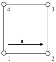
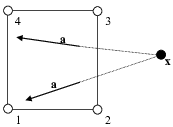
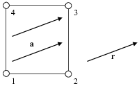
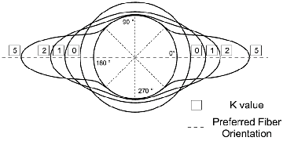

FEBio is a nonlinear finite element solver that is specifically designed for biomechanical applications. It offers modeling scenarios, constitutive models and boundary conditions that are relevant to many research areas in biomechanics, thus offering a powerful tool for solving 3D problems in computational biomechanics. The software is open-source and the source code, as well as pre-compiled executables for Windows, OS-X and Linux platforms are available for download at http://febio.org. This chapter presents a brief overview of the available features of FEBio.
FEBio can solve different kinds of physics. It can solve problems in structural mechanics, heat transfer, biphasic and multiphasic physics. Both a (quasi-) static and dynamic (or transient) analysis can be performed in each of the different physics modules. For instance, in the structural mechanics module, the (quasi-) static response of the system is sought in a quasi-static analysis and the effects of inertia are ignored. In a dynamic analysis, the inertial effects are included in the governing equations to calculate the time dependent response of the system. In the biphasic module, a coupled solid-fluid problem is solved. In a transient biphasic analysis the time dependent response of both the solid and the fluid phase is determined. For the steady-state analysis the final relaxed state is recovered. Similarly, for multiphasic and heat transfer problems, both the time dependent transient response as well as the steady-state response can be determined.
Many nonlinear constitutive models are available, allowing the user to model the often complicated biological tissue behavior. Several isotropic constitutive models are supported such as Neo-Hookean, Mooney-Rivlin, Ogden, Arruda-Boyce and Veronda-Westmann. All these models have a nonlinear stress-strain response and are objective for large deformations. In addition to the isotropic models there are several transversely isotropic and orthotropic constitutive models available. These models exhibit anisotropic behavior in a single or multiple preferred directions and are useful for representing biological tissues such as tendons, muscles, cartilage and other tissues that contain fibers. FEBio also contains a rigid body constitutive model. This model can be used to represent materials or structures whose deformation is negligible compared to that of other materials in the overall model. Several constitutive models are available for representing the solid phase of biphasic and multiphasic materials, which are materials that contain both a solid phase and a fluid phase. For incompressible materials FEBio employs special algorithms for enforcing the incompressibility constraint. A three-field formulation is used for tri-linear hexahedral and wedge elements. This algorithm allows the user to capture the accurate response of highly incompressible materials.
FEBio can now also solve first-order computational homogenization problems. In such problems, the response of the macro-model is determined by the averaged local response of a representative volume element (RVE). The deformation of the macro-model, and more specifically the local deformation gradient, is applied to a RVE model which in turns determines the stress (and tangent) of the macro-model.
FEBio supports a wide range of boundary conditions to model interactions between materials that are relevant to problems in biomechanics. These include prescribed displacements, fluid pressures or temperatures, depending on the physics model. Also nodal forces or fluxes can be prescribed, as well as several types of surface boundary loads. Deformable models can be connected to rigid bodies. With this feature, the user can model prescribed rotations and torques for rigid segments, thereby allowing the coupling of rigid body mechanics with deformable continuum mechanics. FEBio provides the ability to represent frictionless and frictional contact between rigid and/or deformable materials using sliding interfaces. A sliding surface is defined between two surfaces that are allowed to separate and slide across each other but are not allowed to penetrate. Variations of the sliding interface, such as tied interfaces, tied-sliding (tension-compression) and rigid walls, are available as well. As of version 1.2 it is also possible to model the fluid flow across two contacting biphasic materials. Finally, the user may specify a body force to model the effects such as, gravity, base acceleration or centripetal acceleration.
FEBio has a large library of element formulations. These include linear tetrahedral, hexahedral and pentahedral (wedge) elements, as well as quadratic tetrahedral and hexahedral elements. FEBio also supports triangular and bi-linear quadratic director-based shell elements.
FEBio is a nonlinear implicit FE solver and does not have mesh generation capabilities. The finite element mesh, as well as all constitutive parameters and loading is defined in an input file, the format of which is described in detail in this document. This input file needs to be generated by preprocessing software. The preferred preprocessor for FEBio is called PreView. PreView can convert some other formats to the FEBio input specification. For instance, NIKE3D [27] and Abaqus input files can be imported in PreView and can be exported from PreView as a FEBio input file. See the PreView User’s Manual for more information.
This document is part of a set of three manuals that accompany FEBio: the User’s Manual, describing how to use FEBio (this manual), a Developer’s Manual for users who wish to modify or add features to the code, and a FEBio Theory Manual, which describes the theory behind the FEBio algorithms.
This document discusses how to use FEBio and describes the input file format in detail. Chapter 2↓ describes how to run FEBio and explains the various command line options. It also discusses the different files that are required and created by FEBio. Chapter 3↓ describes the format of the FEBio input file. An XML-based format is used, organizing the data in a convenient hierarchical structure. Chapter 4↓ gives a detailed overview of the available constitutive models. Chapter 5↓ discusses the restart capabilities of FEBio. The restart feature allows the user to interrupt a run and continue it at a later time, optionally making changes to the problem data. Chapter 6↓ describes the multi-step analysis feature, which allows the user to split up the entire analysis into several steps. Chapter 7↓ explains how to setup and run a parameter optimization problem using FEBio’s optimization module. Chapter 8↓ provides helpful information for troubleshooting an FEBio model and offers guidelines that help users avoid common problems.
Although this document describes some of the theoretical aspects of FEBio, a complete theoretical development can be found in the FEBio Theory Manual Developers who are interested in modifying or extending the FEBio code will find the FEBio Developer’s
Manual [A] [A] The developers manual is only available online (see http://febio.org for more information) very useful.
FEBio does not assume a specific unit system. It is up to the user to enter numbers that are defined in consistent units. For example, when entering material parameters in SI units, the user must enter all loads, contact parameters, and other boundary conditions in SI units as well. The units of all the parameters are given when they are defined in this manual. We use a generic designation of units for all the parameters using the following symbols.
Symbol
Name
SI unit
L
Length
meter (m)
M
Mass
kilogram (kg)
t
Time
second (s)
T
Temperature
Kelvin (K)
n
Amount of substance
mole (mol)
F
Force
Newton (kgm/s)
P
Pressure, stress
Pascal (Pa=N/m)
Q
Electric charge
Coulomb (C=As)
Units are given using the bracket notation. For instance, the unit for density is [M/L] and the unit for permeability is [L/Ft]. When using SI units, this corresponds to units of kg/m for density and m/N.s for permeability, respectively. Unitless parameters are designated by empty brackets ([ ]). The units for angles are either [deg] for degrees or [rad] for radians.
When adopting a consistent set of units, first choose a primary set of units, and then determine the remaining derived units. For example, in typical problems in solid mechanics, the primary set consists of three units. If you choose [M]=kg, [L]=m, and [t]=s, then [F]=N and [P]=Pa. Alternatively, if you choose [L]=mm, [F]=N and [T]=s as the primary set, then [P]=MPa (since 1 N/mm 10N/m 1 MPa) and [M]=tonne (tonne = N s/mm). The primary set of units must be independent. For instance, in the last example, you cannot choose [P] as a primary unit as it can be expressed in terms of [F] and [L] (i.e. [P]=[F/L]).
FEBio is a command line application which means it does not have its own Graphical User Interface (GUI) and must be run from a shell or command line. FEBio runs on several different computing platforms including Windows, Mac OSX and many versions of Linux. The command line input and output options are described in this chapter.
There are several ways to run FEBio on Windows. The easiest way is by simply selecting the FEBio program from the Programs menu or by double-clicking the FEBio icon in the installation folder. However, this runs FEBio with the installation folder as the working folder, and unless the FEBio input files are in this folder, you will need to know the relative or absolute path to your input files. A more practical approach is to run FEBio from a command prompt. Before you can do this, you need to know two things: how to open a command prompt and how to add the FEBio installation folder to your PATH environment variable so that you can run FEBio from any folder on your system. The process is slightly different depending on whether you are using Windows XP or Windows 7, so we’ll look at the two Windows versions separately.
First, we’ll add the FEBio installation folder to the PATH variable. Open the Control Panel from the Start menu. Switch to Classic View and double-click the System icon. In the dialog box that appears, select the Advanced tab and click the button named Environment variables. Find the path variable and click the Edit button. Add the end of the PATH’s value (don’t delete the current value) type a semi-colon and then the absolute path to the FEBio installation folder (e.g. C:/Program Files/FEBio/). Then click the OK-button on all open dialog boxes.
To open a command prompt, click the Run menu item on the Start menu. In the dialog box that appears type cmd and press the OK-button. A command prompt window appears. You can now use the cd (change directory) command to navigate to the folder that contains the FEBio input files. To run FEBio, simply type febio (with or without additional arguments) and press Enter.
Let’s first modify the PATH environment variable. Open the Start menu and type system in the search field. From the search results, select the System option under Control Panel. The System window will appear. Find the Change Settings option (on the lower, right side) and click it. The System Properties dialog box appears. Activate the Advanced tab and click the Environment Variables button. Find the path variable and click the Edit button. Add the end of the PATH’s value (don’t delete the current value) type a semi-colon and then the absolute path to the FEBio installation folder (e.g. C:/Program Files/FEBio/). Then click the OK-button on all open dialog boxes.
Next, open a command prompt as follows. Click the Start menu and type cmd in the search field. From the search results, select the cmd option under Programs. A command prompt window appears. You can now use the cd (change directory) command to navigate to the folder that contains the FEBio input files. To run FEBio, simply type febio (with or without additional arguments) and press Enter.
A third method of running FEBio, which often is very convenient, is to run FEBio from Windows Explorer. To do this, first open Explorer and browse to the folder that contains your FEBio input files. Next, right-click on the input file and select Open With. Now select Choose default program. A dialog box appears with a list of programs to open the input file. If FEBio is not on this list yet, click the Browse button. Locate the FEBio executable (e.g. in C:/Program Files/FEBio2/bin), select it and press the Open button. Now select FEBio in the Open With dialog box and press Ok.
After you have done this once, the process simplifies. After you right-click the input file, FEBio should now show up in the Open With menu item and can be selected immediately without having to go through all the previous steps.
Running FEBio on Linux or Mac is as easy as opening up a shell window and typing FEBio on the command line. However, you may need to define an alias to the folder that contains the FEBio executable if you want to run FEBio from any folder on your system. Since this depends on your shell, you need to consult your Linux documentation on how to do this. E.g. if you are using c-shell, you can define an alias as follows:
alias febio ’/path/to/febio/executable/’
If you don’t want to define this alias every time you open a shell window, you can place it in your shell start up file (e.g. .cshrc for c-shell).
FEBio is started from a shell window (or the command prompt in Windows). The command line is the same for all platforms:
febio [-o1 [name1] | -o2 [name2] | ... ]
Where -o1, -o2 are options and name1, name2, ... are filenames. The different options (of which most are optional) are given by the following list:
-i name of input file
-r restart file name
-g debug flag (does not require a file name)
-p plot file name
-a dump file name
-o log file name
-c data check only
-s material parameter optimization control file
-d diagnostic input file
-nosplash don’t show the welcome screen
-cnf configuration filename
-noconfig don’t use the configuration file
-break set a break point
A more detailed description of these options follows.
-i The -i option is used to specify the name of the input file. The input file is expected to follow the format specifications as described in Chapter 3↓.
Example:
> febio -i input.feb
This is the most common way to start a FEBio run. However, FEBio allows the omission of the -i when only a filename is given.
> febio input.feb
On Windows, this allows for starting FEBio by double-clicking on an input file (assuming you have chosen FEBio as the default program to open .feb files). Note that if additional options are specified on the command line the -i must be present.
-r The -r option allows you to restart a previous analysis. The filename that must follow this option is a FEBio restart input file or a dump file. The restart input file and dump file are described in more detail in 4.12. The -i and -r options are mutually exclusive; only one of them may appear on the command line.
Example:
> febio -r file.feb
-g The –g option runs FEBio in debug mode. See Section 2.8.2↓ for more information on running FEBio in debug mode.
Example:
> febio -i input.feb –g
-p The –p option allows the user to specify the name of the plot file. The plot file is a binary file that contains the main results of the analysis. FEBio usually provides a default name for this file; however, the user can override the default name using this option. See Section 2.7↓ for more details on the output files generated by FEBio.
Example:
> febio -i input.feb –p out.plt
-a It is possible to restart a previous run using the restart capability in FEBio. This is useful when a run terminates unexpectedly. If that happens, the user can restart the analysis from the last converged timestep. Before this feature can be used, the user must request the creation of a dump file. This file will store all the information that FEBio will need to restart the analysis. FEBio will usually provide a default name for the dump file, but the –a command line option allows the user to override the default name for the dump file. See Section 2.8.3↓ and Chapter 5↓ for more details on how to use the restart feature.
Example:
> febio -i input.feb –a out.dmp
-o The –o option allows the user to set the name of the log file. The log file will contain a record of the screen output that was generated during a run. FEBio usually provides a default name for this file (see Section 2.7↓), but the user can override it with this command line option.
Example:
> febio -i input.feb –o out.log
-c When the –c option is specified on the command line, FEBio will only read the input file and check it for possible errors. When the check is complete, FEBio will terminate. See Section 2.8.4↓ for more details on this option.
Example:
> febio -i input.feb –c
-nosplash When the –nosplash command is entered on the command line, FEBio will not print the welcome message to the screen. This is useful when calling FEBio from another application and when the user wishes to suppress any screen output from FEBio. Other options for suppressing output can be set in the control section of the FEBio input file (see Section 3.5.1↓).
Example:
> febio -i input.feb –nosplash
-silent When the –silence option is specified on the command line, FEBio will not generate any output to the screen. Unless explicitly instructed not to, FEBio will still create a log file which will have the convergence information.
Example:
> febio -i input.feb –silent
-cnf
-noconfig As of version 1.2, FEBio uses a configuration file to store platform specific settings. Usually FEBio assumes that the location for this configuration file is the same as the executable. However, the user can specify a different location and filename using the –cnf command line option. If the user does not have a configuration file or does not wish to use one, this can be specified using the –noconfig option. More details on the configuration file can be found in Section 2.5↓ and Chapter 9↓.
Example:
> febio -i input.feb –cnf C:pathtofebio.xml.
-s This option instructs FEBio to run a material parameter optimization on the specified input file. The optimization module is described in detail in Chapter 7↓. The –s option is followed by the optimization control file which contains among other things the parameters that need to be optimized. Note that the restart feature does not work with the optimization module.
Example:
> febio –i file.feb –s control.feb
-d This option will run a FEBio diagnostics. A diagnostic is a special type of test that can be used to verify an implementation. For example, the tangent diagnostic allows users to check the consistency between the material’s stress and tangent implementations.
Example:
> febio –d diagnostic.feb
-break With this option a break point can be set which sets a time point at which FEBio will interrupt the run and show the FEBio prompt. The following example sets a break point at time 1.0. FEBio will interrupt the run after the time step at time 1.0 is reached (i.e. has converged).
If you start FEBio without any command arguments, the FEBio prompt will appear (after the welcome message). It will look something like this:
febio>
You can now enter one of the following commands:
help prints an overview of available commands with a brief description of each command.
quit exit FEBio.
run run an FEBio input file. This command takes the same options as you can enter on the command line. For example, to run a file named test.feb from the FEBio prompt, type the following:
run –i test.feb
version print version information.
You can also bring up the FEBio prompt during a run by pressing ctrl+c [B] [B] This feature does not work on some Linux platforms and may abruptly terminate the run.. See Section 2.8.1↓ for more details. The FEBio prompt will also be shown when FEBio reaches a break point.
As of version 1.2, FEBio uses a configuration file to store platform-specific settings, such as the default linear solver and the list of plugins that need to be loaded at startup. The configuration file uses an xml format to store data and is detailed in Chapter 9↓. For backward compatibility, it is still possible to run FEBio without the configuration file. In that case, the default settings prior to version 1.2 are used.
Example:
> febio –i myfile.feb -noconfig
The configuration file needs to be stored in the same location as the executable and named febio.xml. Alternatively, the location and the name of the file can also be specified on the command line using the –cnf option.
As of version 2.0, FEBio uses OpenMP to parallellize several of the finite element calculations, improving the performance considerably. Both the right-hand-side and the stiffness matrix evaluations for many types of problems have been parallelized. On a system with four processors, a speedup of 2-3 can be expected, depending on the size and type of model. Models with complex material behavior (such as EFD-type materials, biphasic, multiphasic materials, etc.) will benefit most from these parallelization efforts. In addition, FEBio implements the MKL version of the PARDISO linear solver, which is a parallel linear solver using OpenMP.
To use multiple processors set the environment variable OMP_NUM_THREADS to the number of desired threads. You should set the number of threads to be equal or less than the number of processors on your system (Setting it higher may actually decrease performance). For example, on a system with four processors you can set the environment as follows. On Linux using the Bash shell, execute:
> export OMP_NUM_THREADS=4
Using the c-shell, execute:
> setenv OMP_NUM_THREADS 4
Or at a Windows command prompt:
> set OMP_NUM_THREADS=4
On Windows, you can add this environment variable as well from the Control Panel. On Win7, open the Control Panel (StartControl Panel). Open the System panel and click Change Settings. The System Properties dialog box should open up. Select the Advanced Tab and click the Environment Variables button. In the next dialog box, click the New... button under the User variables. Enter OMP_NUM_THREADS for the variable name and 4. Click OK on all open dialog boxes.
A note on repeatability
When using multiple processors, it can not always be guaranteed that all calculations are executed in the same order and, due to numerical round-off, the results of these calculations will not always be the same. In FEBio, this means that the same model run repeatedly on the same machine with multiple processors, may give slightly different convergence norms or even slightly different answers. In many cases, the differences should be small, but in some problems that are prone to ill-conditioning (e.g. contact) the discrepancies may be more significant. When running on one processor, the results of consecutive runs should always be identical.
After running FEBio, two or three files are created: the log file, the plot file and optionally the dump file. The log file is a text file that contains the same output (and usually more) that was written to the screen. The plot file contains the results of the analysis. Since this is a binary file, the results must be analyzed using post processing software such as PostView. In some cases, the user may wish to request the creation of a dump file. This file contains temporary results of the run. If an analysis terminates unexpectedly or with an error, this file can be used to restart the analysis from the last converged time step. See Section 2.8.3↓ and Chapter 5↓ for more details. The names of these files can be specified with the command options –p (plot file), -a (dump file), -o (log file). If one or more of the file names following these flags are omitted, then the omitted file name(s) will be given a default name. The default file names are derived from the input file name. For example, if the input file name is input.feb the logfile will have the name input.log, the plot file is called input.xplt and the dump file is called input.dmp.
Note 1. The name of the log and plot file can also be specified in the FEBio input file. See Section 3.17↓ for more information.
Note 2. When running an optimization problem the name of the log file is derived from the optimization control file. See Chapter 7↓ for more information on running optimization problems with FEBio.
2.8.1 Interrupting a Run [C] [C] This feature may not work properly on all systems, although it will always work on Windows systems.
The user can pause the run by pressing ctrl+c. This will bring up the FEBio prompt, and the user can enter a command. The FEBio prompt will also be shown when FEBio reaches a break point. The following commands are available.
cont continues the run. FEBio will continue the analysis where it left off.
conv force the current time step to converge. This is useful for example when a time step is having difficulty satisfying too tight of convergence criteria. The user can then manually force the convergence of the time step. However, if the convergence difficulties are due to instabilities, forcing a time step to converge could cause the solution to become unstable or even incorrect. Also be aware that even if the solution recovers on later timesteps, the manually converged step might be incorrect.
debug [on|off] entering debug will toggle debug mode. Adding on (off) will turn the debug mode on (resp. off). In debug mode, FEBio will store additional information to the log and plot file that could be useful in debugging the run. It is important to note that since FEBio will store all non-converged states to the plot file, this file may become very large in a short number of time steps. See Section 2.8.2↓ for more details on debugging.
dtmin set the minimum time step size. This command overrides the minimum time step size that was specified in the input file.
fail stop the current iteration and retry. If the current time step is not converging and if the auto-time stepper is enabled, the fail command will stop the current time step and retry it with a smaller time step size. If the auto-time stepper is not enabled, the fail command will simply exit the application.
help list the available commands with a short explanation. Prints the information provided in this section of the manual.
plot dump current state to plot database and continue. This command is useful when you want to store the non-converged state at the current iteration. Note that this command only stores the state at the current iteration. If you turn on debug mode, all the iterations are stored to the plot file.
print print values of variables:
nnz number of non-zeroes in stiffness matrix
neq number of equations
time the current time step
quit exit the application
restart toggles restart flag. When the restart flag is set, FEBio will create a dump file at the end of each converged time step. This dump file can then later be used to restart the analysis from the last converged time step. See Section 2.8.3↓ and Chapter 5↓ for more details on FEBio’s restart feature.
time print elapsed time and an estimation of the remaining time.
version print version information
Note that it may take a while before the FEBio prompt is displayed after the user requests a ctrl+c interruption. This may be because the program may be in the middle of a call to the linear solver or another time-consuming part of the analysis procedure that cannot be interrupted.
As stated in Section 2.3↑, FEBio can be run in debug-mode by specifying the –g option on the command line. When running in debug mode, FEBio performs additional checks and prints out more information to the screen and to the plot file. It will also store all non-converged geometry states to the plot file. These non-converged states can be very useful for determining the cause of non-convergence or slow convergence. Because of this additional work, the problem may run slightly slower. Note that debug mode can be turned on/off while running an analysis by first interrupting the run with ctrl+c and then using the debug command to toggle the debug mode on or off. It is important to note that since FEBio will store all non-converged states to the plot file, this file may become very large in a short number of time steps. An alternative approach is to use the plot command to write out select non-converged states.
When the creation of a restart file is requested, the analysis can be restarted from the last converged timestep. This is useful when the run terminated unexpectedly or when the user wishes to modify some parameters during the analysis. To request a restart file, simply set the appropriate option in the control section of the input file. This will generate a dump file which then can be used to restart the analysis. See Chapter 5↓ for more details.
To restart an analysis, use the -r command line option. This option requires a filename as a parameter, and this name can be either the name of a dump file or the name of a restart input file. The latter case is a text file that allows the user to redefine some parameters when restarting the run. The format of this file is described in 4.12.
The option allows the user to stop FEBio after the initial data checking is done. This way, potential input errors can be spotted without running the actual problem.
This chapter describes the XML-based input format used by FEBio. Since this format follows standard XML conventions, the files can be viewed with any file viewer that supports XML files. Since the free format input file is a text file, it can be edited with any text editor.
An XML file is composed of a hierarchical list of elements. The first element is called the root element. Elements can have multiple child elements. All elements are enclosed by two tags: a tag defining the element and an end tag. A simple example of an XML file might look like this:
The value of an element is enclosed between the name and the end tag.
<element> here is the value </element>
Note that the XML format is case-sensitive.
XML elements can also have attributes in name/value pairs. The attribute value must always be quoted using quotation marks (") or apostrophes (’) [D] [D] Support for apostrophes was not added until FEBio version 2.1..
The free format organizes the FEBio input data into hierarchical XML elements. The root element is called febio_spec. This root element also defines the format version number (Note that FEBio and the input format specification follow different version numberings). This document describes version 2.5 of the FEBio specification [E] [E] FEBio continues to read some older formats, but they are considered to be obsolete. (see Section 3.2↓ below for more details on the different input specification formats). The root element will therefore be defined as follows:
<febio_spec version="2.5">
<!-- contents of file -->
</febio_spec>
The different sections introduced in this chapter are child elements of this root element. The following sections are currently defined:
Module defines the physics module for solving the model.
Control specifies control and solver parameters.
Globals Defines the global variables in the model
Material Specifies the materials used in the problem and the material parameters.
Geometry Defines the geometry of the problem, such as nodal coordinates and element connectivity.
MeshData Defines element, facet, edge or nodal data that can be mapped to material parameters or certain boundary conditions and loads.
Initial Defines initial conditions for dynamic problems, such as initial velocities, and for transient quasi-static problems.
Boundary Defines the boundary conditions that are applied on the geometry.
Loads Defines the loads applied to the model. This includes nodal loads, boundary loads and volume loads (or sources for heat transfer problems).
Contact This section defines all contact interfaces.
Constraints This section defines rigid and nonlinear constraints.
Discrete This section defines all the discrete elements (i.e. springs)
LoadData Defines the load curve data.
Ouput Defines additional data that is to be stored.
Step Defines different analysis steps, where in each analysis the boundary, loads, contact and initial conditions can be redefined.
The current format specification expects the different sections of the input file to be listed in the same order as given above. Not all sections are required. Empty sections can be omitted and some are optional. A minimal file must contain at least the Control, Material and Geometry sections. The rest of this chapter describes each of these sections in more detail.
This document describes version 2.5 of the FEBio input specification. This format differs in several aspects from the previous versions of the input specification. This section describes the major changes between the different versions.
Version 2.5: The latest and recommended version of the FEBio input specification described in this document. This format differs from its predecessor in some important aspects: all nodesets, surfaces, etc., that are used by boundary conditions, loads, contact, etc., must be defined in the Geometry section. Boundary conditions, loads, contact, etc., are now defined by referencing the sets in the Geometry section. This format also adds the MeshData section and reformats the Discrete section. Rigid node sets and prescribed rigid degrees of freedom are moved to the Boundary section.
Version 2.0: This is the first major revision of the input file format and redefines many of the file sections: The Elements section uses a different organization. Elements are now grouped by material and element type. Multiple Elements sections can now be defined to create multiple parts. Surfaces can now be defined in the Geometry section and referenced by boundary conditions and contact definitions. A new Contact section contains all the contact definitions. A new Discrete section was defined that contains all the materials and definitions of the discrete elements (e.g. springs). The Boundary section is also redesigned. This format is still supported but considered obsolete.
Version 1.3: This was an experimental version that redefined the Geometry section, but was later abandoned in favor of version 2.0. This version is no longer supported.
Version 1.2: A Loads section was added and all surface and body loads are now defined in this section instead of the Boundary section. This version is mostly supported but considered obsolete.
Version 1.1: Rigid body constraints are no longer defined in the rigid material definition but instead placed in a new Constraints section. This version is no longer supported.
Version 1.0: The original input format specification. This version is no longer supported.
As of FEBio 2.5, only versions 1.2, 2.0, 2.5 are supported. Versions 1.2 and 2.0 are considered obsolete and it is highly recommended to convert older files to the new 2.5 specification for use with newer versions of FEBio. This can be done for instance using PreView.
FEBio supports distributing the model definition across multiple input files. This can greatly facilitate defining large, complex models and allows the re-use of model input files without the need to create the entire model input file from scratch. When using multiple input files to define a model, you must create a master input file that will reference all the other input files. This master file will be used to run the model in FEBio.
The Include keyword [F] [F] Supported from FEBio version 2.3 and up. can be used to include the contents of another FEBio input file. The filename is entered as the value of the tag.
<Include>example.feb</Include>
The included file must be a valid FEBio file in that it must begin with the febio_spec tag and contain sections defined in this document. However, the included file does not need to define a complete model definition. For instance, it can contain only the Geometry section.
Note that the contents of the entire file will be included. This is different from the from attribute discussed below, which can be used to include only certain sections from files.
The from attribute can be used to include sections from other files. All the main sections defined in Section 3.1↑ support the from attribute which can be used to load the section from another input file. For example, to load the Material section from the file mat.feb, defining the Material section in the master input file as follows.
<Material from="mat.feb"/>
FEBio will now read the Material section from this child file. The child file must be a valid FEBio input file, meaning it must begin with the febio_spec root section, but does not have to be complete. For example, the file mat.feb only needs to define the Material section. However, the child file may contain other sections. In that case, only the section referenced in the master file will be read from the child file. For example, if the file in.feb contains both the Material and the Geometry section, the master file can read both these sections as follows.
To give a more concrete example, assume that the Material, Geometry, and Boundary sections are defined in the files mat.feb, geom.feb, and bc.feb respectively. The master input file could then look like the following.
Notice that the Control section is still defined in the master file. The master file can contain a combination of explicit section definitions and referenced sections using the from attribute. As mentioned above, the master file is used to run the model in FEBio. So, if the master file is called model.feb then the model is run as follows.
>febio –i model.feb
When FEBio parses the master file it will automatically parse the referenced child files it encounters in the master input file.
The module section defines the type of analysis to perform with FEBio. This section must be defined as the first section in the input file. It takes on the following format:
<Module type="[type]"/>
where type can be any of the following values:
type
Description
solid
Structural mechanics analysis: quasi-static or dynamic
biphasic
Biphasic analysis: steady-state or transient
solute
Biphasic analysis including solute transport: steady-state or transient
multiphasic
Multiphasic analysis including solute transport and chemical reactions
heat
Heat transfer analysis: steady-state or transient
For example:
<febio_spec version="2.5">
<Module type="solid"/>
<!-- rest of file -->
</febio_spec>
Note 1: In version 1.2 the Module section was optional. If omitted it was assumed that the solid module was used. In version 2.0 the Module section is required and must be the first section in the file.
Note 2: Older versions of FEBio (format specification 1.2 and before) allowed you to run a poroelastic (now called biphasic) problem by simply defining a poroelastic material. This is no longer possible. You need to define the proper Module section to run a biphasic analysis. If you have a file that no longer works as of version 1.4 of FEBio, you’ll need to insert the following Module section in the file as the first section of the file.
<febio_spec version="2.0">
<Module type="biphasic"/>
<!-- rest of the file unaltered -->
</febio_spec>
The control section is defined by the Control element. This section defines all parameters that are used to control the evolution of the solution as well as parameters for the nonlinear solution procedure. These parameters are defined as child elements of the Control element. The parameters depend somewhat on the analysis as defined by the Module section. Many parameters are common to all types of analysis, so they are listed first.
The following parameters are common for all analysis. If not specified they are assigned default values, which are found in the last column. An asterisk (*) after the name indicates a required parameter. The numbers behind the description refer to the comments following the table.
Parameter
Description
Default
title
Title of problem
(none)
time_steps*
Total number of time steps. (= ntime)(1)
(none)
step_size*
The initial time step size. (= dt) (1)
(none)
dtol
Convergence tolerance on displacements (2)
0.001
etol
Convergence tolerance on energy (2)
0.01
rtol
Convergence tolerance on residual (2)
0 (disabled)
lstol
Convergence tolerance on line search (3)
0.9
time_stepper
Enable the auto time stepper (4)
(off)
max_refs
Max number of stiffness reformations (5)
15
max_ups
Max number of BFGS stiffness updates (5)
10
optimize_bw
Optimize bandwidth of stiffness matrix (6)
0
restart
Generate restart flag (7)
0
plot_level
Sets the level of state dumps to the plot file (8)
PLOT_MAJOR_ITRS
plot_range
Set the range of the states that will be stored to the plot file (9)
0,-1
plot_stride
Set the stride of the states that will be stored to the plot file (9)
1
plot_zero_state
Flag that controls whether the “zero” state will be written to the plot file, even if it is not defined in the range (9)
0 (false)
cmax
Set the max condition number for the stiffness matrix (10)
1e5
analysis
Sets the analysis type (11)
static
print_level
Sets the amount of output that is generated on screen (12)
PRINT_MINOR_ITRS
min_residual
Sets minimal value for residual tolerance (13)
1e-20
integration
Set the integration rule for a particular element (14)
N/A
output_level
Controls when to output data to file (15)
OUTPUT_MAJOR_ITRS
Comments:
The total running time of the analysis is determined by ntime * dt. Note that when the auto-time stepper is enabled (see below), the actual number of time steps and time step size may be different than specified in the input file. However, the total running time will always be determined by ntime * dt.
FEBio determines convergence of a time step based on three convergence criteria: displacement, residual and energy (that is, residual multiplied by displacement). Each of these criteria requires a tolerance value that will determine convergence when the relative change will drop below this value. For example, a displacement tolerance of means that the ratio of the displacement increment (i.e. the solution of the linearized FE equations, norm at the current iteration 1 to the norm of the total displacement ( must be less than :
For the residual and energy norms, it is the ratio of the current residual norm (resp. energy norm) to the initial one that needs to be less than the specified convergence tolerance.
To disable a specific convergence criterion, set the corresponding tolerance to zero. For example, by default, the residual tolerance is zero, so that this convergence criterion is not used.
The lstol parameter controls the scaling of the vector direction obtained from the line search. A line search method is used to improve the convergence of the nonlinear (quasi-) Newton solution algorithm. After each BFGS or Newton iteration, this algorithm searches in the direction of the displacement increment for a solution that has less energy (that is, residual multiplied with the displacement increment) than the previous iteration. In many problems this will automatically be the case. However, in some problems that are very nonlinear (e.g. contact), the line search can improve convergence significantly. The line search can be disabled by setting the lstol parameter to zero, although this is not recommended.
If the time_stepper parameter is defined it will enable the auto time-stepper, which will adjust the new time step size based on convergence information from the previous time step. The following sub-elements may also be defined, although all are optional. Note that these are sub-elements of the time_stepper element and not of the Control element.
Parameter
Description
Default
dtmin
Minimum time step size
dt/3
dtmax
Maximum time step size
dt*3
max_retries
Maximum nr. of retries allowed per time step
5
opt_iter
Optimal number of iterations
10
The dtmin and dtmax values are used to constrain the range of possible time step values. The opt_iter defines the estimated optimal number of quasi-Newton iterations. If the actual number of iterations is less than or equal to this value the time step size is increased, otherwise it is decreased.
When a time step fails (e.g. due to a negative jacobian), FEBio will retry the time step with a smaller time step size. The max_retries parameter determines the maximum number of times a timestep may be retried before FEBio error terminates. The new time step size is determined by the ratio of the previous time step size and the max_retries parameter. For example, if the last time step size is 0.1 and max_retries is set to 5, then the time step size is adjusted by 0.02: The first retry will have a step size of 0.08; the next will be 0.06, and so on.
The user can specify a load curve for the dtmax parameter. This load curve is referred to as the must-point curve and serves two purposes. Firstly, it defines the value of the dtmax parameter as a function of time. This can be useful, for instance, to enforce smaller time steps during rapid loading or larger time steps when approaching steady-state in a transient analysis. Secondly, the time points of the dtmax loadcurve define so-called must-points. A must-point is a time point where FEBio must pass through. This is useful for synchronizing the auto-time stepper with the loading scenario. For instance, when loading starts at time 0.5, adding a must-point at this time will guarantee that the timestepper evaluates the model at that time. In conjunction with the PLOT_MUST_POINT value of the plot_level parameter, this option can also be used to only write results to the plotfile at the specified time points. Consider the following example.
This example defines load curve 1 as the must-point curve. This curve defines three points where FEBio will pass through (namely 0, 0.5 and 1.0). The values of each time point is the value of the maximum time-step size (dtmax). Since the curve is defined as a step-function, each value is valid up to the corresponding time-point. Thus, between time 0 and time 0.5, the maximum time step value is 0.1. Between 0.5 and 1.0 the maximum time step value is 0.2. If the plot_level parameter is set to PLOT_MUST_POINTS, then only the three defined time points will be stored to the plotfile.
The max_ups and max_refs parameters control the BFGS method that FEBio uses to solve the nonlinear FE equations. In this method the global stiffness matrix is only calculated at the beginning of each time step. For each iteration, a matrix update is then done. The maximum number of such updates is set with max_ups. When FEBio reaches this number, it reforms the global stiffness matrix (that is, it recalculates it) and factorizes it, essentially taking a "full Newton" iteration. Then FEBio continues with BFGS iterations. The max_refs parameter is used to set the maximum of such reformations FEBio can do, before it fails the timestep. In that case, FEBio will either terminate or, if the auto-time stepper is enabled, retry with a smaller time step size.
Note that when max_ups is set to 0, FEBio will use the Full-Newton method instead of the BFGS method. In other words, the stiffness matrix is reformed for every iteration. In this case it is recommended to increase the number of max_refs (to e.g. 50), since the default value might cause FEBio to terminate prematurely when convergence is slow.
The optimize_bw parameter enables bandwidth minimization for the global stiffness matrix. This can drastically decrease the memory requirements and running times when using the skyline solver. It is highly recommended when using the skyline solver.
<optimize_bw>1</optimize_bw>
When using a different linear solver (e.g., pardiso or SuperLU), the bandwidth optimization can still be performed if so desired. However, for these solvers there will be little or no effect since these solvers are not as sensitive to the bandwidth as the skyline solver.
The restart parameter can be used to generate a restart dump file. To activate it, specify a non-zero value. A filename may be specified as an option. If the filename is omitted, a default name will be provided. Note that this will only generate the binary dump file that is needed to restart the analysis. To override certain parameters before restarting, create a restart input file. FEBio does not generate this file automatically so the user needs to create that file manually. See Chapter 5↓ on the format of the restart input file.
<restart file="out.dmp">1</restart>
The plot_level allows the user to control exactly when the solution is to be saved to the plot file. The following values are allowed:
Value
Description
PLOT_NEVER
Don’t save the solution
PLOT_MAJOR_ITRS
Save the solution after each converged timestep
PLOT_MINOR_ITRS
Save the solution for every quasi-Newton iteration
PLOT_MUST_POINTS
Only save the solution at the must points
The PLOT_MUST_POINTS option must be used in conjunction of a must-point curve. See the comments on the dtmax parameter for more information on must-point curves. When the plot_level option is set to PLOT_MUST_POINTS, only the time-points defined in the must-point curve are stored to the plotfile.
When using the fixed time stepper, several parameters control which time steps are stored to the plot file.
The plot_range parameter sets the range of the states that will be stored to the plot file. The range is defined by two values that specify the first and last time step that will be stored to the plot file. The value “0” refers to the initial time step, usually time zero, and negative values count backwards from the final time step (as defined by the time_steps parameter). For instance, the default values,
<plot_range>0,-1</plot_range>
store all time steps to the plot file, including the initial “zero” time step. As another example, to store only the last five time steps, set
<plot_range>-5,-1</plot_range>
By default, all time steps within the range will be stored to the plot file. Time steps can be skipped using the plot_stride parameter. For instance, to store only every 10 steps, set
<plot_stride>10</plot_stride>
Note that the first and last time step defined by the range will always be stored, regardless of the plot stride.
The “zero” time step refers to the initial state of the model, before any calculations are done. This state will only be stored to the plot file if the minimal value of the plot range is set to zero. To force storing this state to the plot file, set the plot_zero_state parameter to one.
<plot_zero_state>1</plot_zero_state>
This will store the zero time step to the plot file, even when it is not specified inside the plot range.
Again, the plot_range, plot_stride, and plot_zero_state parameters are only used by the fixed time stepper. Currently, these parameters are not used with the auto time stepper.
When the condition number of the stiffness matrix becomes too large, inversions of the stiffness matrix become inaccurate. This will negatively affect the convergence of the quasi-Newton or Newton solution algorithm. FEBio monitors the condition number of the BFGS stiffness update and when it exceeds cmax it reforms the stiffness matrix.
<cmax>1e5</cmax>
The analysis element sets the analysis type. Currently, FEBio defines three analysis types: (quasi-)static, steady-state, and dynamic. In a quasi-static analysis, inertial effects are ignored and an equilibrium solution is sought. Note that in this analysis mode it is still possible to simulate time dependant effects such as viscoelasticity. In a dynamic analysis the inertial effects are included.
Value
Description
static
(quasi-) static analysis
steady-state
steady-state response of a transient (quasi-static) biphasic, biphasic-solute, or triphasic analysis
dynamic
dynamic analysis.
The print_level allows the user to control exactly how much output is written to the screen. The following values are allowed:
Value
Description
PRINT_NEVER
Don’t generate any output
PRINT_PROGRESS
Only print a progress bar
PRINT_MAJOR_ITRS
Only print the converged solution
PRINT_MINOR_ITRS
Print convergence information during equilibrium iterations
PRINT_MINOR_ITRS_EXP
Print additional convergence info during equilib. iterations
If no force is acting on the model, then convergence might be problematic due to numerical noise in the calculations. For example, this can happen in a displacement driven contact problem where one of the contacting bodies is moved before initial contact is made. When this happens, the residual norm will be very small. When it drops below the tolerance set by min_residual, FEBio will assume that there is no force acting on the system and will converge the time step.
You can override FEBio’s default integration rule for specific element classes. For each element class, define a rule element in which you set the integration rule.
<integration>
<rule elem="<elem>">VALUE</rule>
<!-- repeat rules for other elements -->
</integration>
The elem attribute value defines for which element class you wish to override the default integration rule and can have any of the following values.
elem
Description
hex8
8-node hexahedral element
tet4
4-node linear tetrahedral element
tet10
10-node quadratic tetrahedral element
tet15
15-node quadratic tetrahedral element
tri3
3-node linear triangles (e.g. for contact)
tri6
6-node quadratic triangles
The values of the rule elements depend on the elem attribute. The tables below show the available integration rules for the different element types. The values marked with an asterisk (*) are the default.
For the hex8 element, the following values are defined.
hex8
Description
GAUSS8*
Gaussian integration using 2x2x2 integration points.
POINT6
Alternative integration rule for bricks using 6 integration point
For the tet4 element, the following values are allowed.
tet4
Description
GAUSS4
Gaussian integration rule using 4 integration points.
GAUSS1*
Gaussian integration rule using one integration point.
UT4
Nodally integrated tetrahedron. (1)
Comments:
1. The UT4 is a special formulation for tetrahedral elements that uses a nodally averaged integration rule, as proposed by Gee et al [19]. This formulation requires additional parameters. To override the default values, use the following alternative syntax:
The alpha parameter defines the amount of “blending” between the regular tet-contribution and the nodally integrated contribution. The value must be between 0 and 1, where 0 means no contribution from the regular tet and 1 means no contribution from the nodally averaged tet. The iso_stab parameter is a flag that chooses between two slightly different formulations of the nodally integrated tet. When set to 0, the stabilization is applied to the entire virtual work, whereas when set to 1 the stabilization is applied only to the isochoric part. See the FEBio Theory Manual for a detailed description of this formulation.
For the tet10 element, the following integration rules are supported.
tet10
description
GAUSS4*
Gaussian integration rule using 4 integration points
GAUSS8
Gaussian integration rule using 8 integration points
LOBATTO11
Gauss-Lobatto integration rule using 11 integration points
Notes:
The Lobatto integration rule differs from a regular Gauss integration rule in that it includes the vertices of the tetrahedral element. The Lobatto11 integration rule uses the 10 tetrahedral nodes, plus one integration rule located at the center of the element.
For the tet15 element, the following integration rules are defined.
tet15
description
GAUSS8
Gaussian integration rule using 8 integration points
GAUSS11
Gaussian integration rule using 11 integration points
GAUSS15
Gaussian integration rule using 15 integration points
For the tri3 element, the following integration rules are supported.
tri3
description
GAUSS1
Gaussian integration with one integration point
GAUSS3*
Guassian integration with three integration rules.
For the tri6 element, the following integration rules are supported.
tri6
description
GAUSS3*
Gaussian integration with 3 integration points
GAUSS6
Gaussian integration with 6 integration points
GAUSS4
Gaussian integration with 4 integration points
GAUSS7
Gaussian integration with 7 integration points
LOBATTO7
Gauss-Lobatto integration with 7 integration points.
Notes:
The GAUSS6 rule has only nonzero weights at the edge nodes, which effectively reduces this rule to a 3-node rule.
The output_level can be used to control when FEBio outputs the data files. The following values are supported.
Value
Description
OUTPUT_NEVER
Don’t generate any output
OUTPUT_MUST_POINTS
Only output at must points
PRINT_MAJOR_ITRS
Output at end of each time step
PRINT_MINOR_ITRS
Output at each iteration
OUTPUT_FINAL
Only output the data at the last converged time step.
A biphasic analysis is defined by using the biphasic type in Module section. Since a biphasic analysis couples a fluid problem to a solid mechanics problem, all control parameters above can be used in a biphasic analysis. In addition, the following parameters can be defined:
Parameter
Description
Default
ptol
Specify the fluid pressure convergence tolerance
0.01
symmetric_biphasic
Choose between a symmetric or nonsymmetric formulation
When the type attribute of the Module section is set to solute or triphasic, an analysis is solved that includes solute transport. All parameters for a biphasic analysis can be used (including the ones for a structural mechanics analysis). In addition, the following parameters can be specified:
A heat analysis uses the parameters defined in Section 3.5.1↑. However, not all parameters have an effect. In particular, any parameter related to the auto-time stepping capability of FEBio or the nonlinear solution strategy is ignored.
Global constants currently include the universal gas constant [FL/nT], absolute temperature [T], and Faraday constant [Q/n]. These constants must be expressed in units consistent with the rest of the analysis:
In biphasic-solute, triphasic and multiphasic analyses, a unique identifier must be associated with each solute in order to enforce consistent nodal degrees of freedom across boundaries of different materials. This unique identification is achieved by listing each solute species that appears in the entire finite element model and associating it with a unique id, nam,e charge number , molar mass , and density :
These solute identification numbers should be referenced in the sol attribute of solutes when defining a biphasic-solute (Section 4.8.2↓), triphasic or multiphasic material (Section 4.9.2↓).
The molar mass and density of solutes are needed only when solutes are involved in chemical reactions. When not specified, default values for these properties are set to 1.
In multiphasic analyses with chemical reactions involving solid-bound molecules, a unique identifier must be associated with each such molecule in order to enforce consistent properties across the entire model. This unique identification is achieved by listing each solid-bound species that appears in the entire finite element model and associating it with a unique id, name, charge number, molar mass and density:
The id number should be referenced in the sbm attribute of solid-bound molecules when included in the definition of a multiphasic material (Section 4.9↓). The charge number is used in the calculation of the fixed charge density contributed by this solid-bound molecule to the overall solid matrix fixed-charge density. The density is used in the calculation of the contribution of this molecule to the referential solid volume fraction. The density and molar mass are used in the calculation of the molar volume of this molecule in chemical reactions.
The material section is defined by the Material element. This section defines all the materials and material parameters that are used in the model. A material is defined by the material child element. This element has two attributes: id, which specifies a number that is used to reference the material, and type, which specifies the type of the material. The material element can also have a third optional attribute called name, which can be used to identify the material by a text description. A material definition might look like this:
<material id="1" type="isotropic elastic">
Or, if the optional name attribute is present:
<material id="2" type="rigid body" name="femur">
The material name is required for parameter optimizations since the material parameters are resolved using the material’s name.
The material parameters that have to be entered depend on the material type. A complete list of available materials is provided in Chapter 4↓.
The geometry section contains all the geometry data, including nodal coordinates and element connectivity. It has the following sub-sections:
Nodes contains nodal coordinates
Elements contains element connectivity
NodeSet defines a node set
Edge defines an edge, i.e. a set of line elements
Surface defines a surface, i.e. a set of facets
DiscreteSet defines a set of discrete elements (e.g. springs)
ElementSet defines an element set
SurfacePair define a surface pair that can be used by a contact definition.
The Nodes and Elements sections are required. The other sections are optional. The NodeSet, Edge, Surface, DiscreteSet, ElementSet, and SurfacePair sections define sets of nodes, edges, facets, discrete elements, elements, and surface pairs, respectively, and can be referenced by other sections of the model file. For instsance, boundary conditions can be defined by referencing the sets to which the boundary condition will be applied.
The Nodes section contains nodal coordinates. It has an optional attribute called name. If this attribute is defined, the Nodes section also defines a node set.
<Nodes [name="<set name>"]>
The nodes are defined using the node tag which is a child of the Nodes section. Repeat the following XML-element for each node:
<node id="n">x,y,z</node>
The id attribute is the global identifier of the node and must be a unique number within the model definition. This id is used as a reference in the element connectivity section.
Multiple Nodes sections can be defined, but each node can only be defined once. For example:
The Elements sections contain a list of the element connectivity data. Multiple Elements sections can be defined. The Elements section can have the following attributes.
Attribute
Description
mat
material identifier
type
element type
name
unique name that identifies this domain (optional)
Each Elements section contains multiple elem elements that define the element connectivities. Each elem tag has a id attribute that defines the element number. For example, the following Elements section defines a list of hexahedral elements:
The NodeSet section allows users to define node sets. These node sets can then later be used in the definition of the fixed and prescribed boundary conditions. A node set is defined by the NodeSet tag. This tag takes one required attribute, name, which defines the name of the node set. A node set definition is followed by a list of nodes. For each a node tag is defined which requires one attribute, named “id”, which takes the node number as its value. For example,
Here, the lid attribute defines the local id of the edge, local with respect to the edge definition. The local ids must begin at 1 and defined sequentially.
The edge elements are defined by using a tag that depends on the type of the edge element. The following edge elements are currently supported.
The Surface section allows users to define surfaces. These surfaces can then later be used to define the boundary conditions and contact definitions. A surface definition is followed by a list of surface elements, following the format described below.
The Surface takes one required attribute, namely the name. This attribute sets the name of the surface. This name will be used later to refer back to this surface.
The following surface elements are available:
quad4 4-node quadrilateral element
quad8 8-node serendipity quadrilater element
tri3 3-node triangular element
tri6 6-node quadratic triangular element
tri7 7-node quadratic triangular element
The value for the surface element is the nodal connectivity:
Surface elements cannot overlap element boundaries. That is, the surface element must belong to a specific element. Surface elements do not contribute to the total number of elements in the mesh. They are also not to be confused with shell elements.
The ElementSet section can be used to define an element set. Element sets can be used to output data for only a subset of elements. An element set is defined through the ElementSet tag, which takes one attribute, namely name that specifies the name of the element set. For each element in the set, an elem tag is defined which takes the element id as an attribute. For example,
The surfaces (i.e. surface1 and surface2) are surfaces defined in the Surface section. Because surfaces must already be defined before they can be referenced in the SurfacePair section, the Surface must be defined before the SurfacePair section.
The MeshData section is where data can be specified that will be mapped to the primitives of the model (i.e. nodes, edges, facets, and elements). Different tags are used to map to different primitive types.
ElementData defines element data
SurfaceData defines surface data
EdgeData defines edge data
NodeData defines node data
For each of these sections a list of items and the data for that item follows. It is important to node that the IDs used in this section are all local IDs, i.e. indices into the array of the set definition.
Data is then defined for predefined variables (i.e. material parameters) or user-defined data maps. Predefined variables are referenced using the var attribute. User defined data requires the name attribute as well as additional attributes to define the specific data type and format as listed below.
data type defines the type of data
data format defines how the data is mapped to the set.
The following table lists the supported data types.
data type
Description
scalar
A single floating point value
vec2
A 2D vector defined as ,
vec3
A 3D vector defined as , ,
If the data type is not defined, the scalar data type is assumed.
The following table lists the supported data formats.
data format
Description
const
Data is constant acress item. Only one value per item is specified.
shape
Data is interpolated using item’s shape function. One value for each node of the item needs to be specified.
If the data format is not specified, the const format is assumed.
This section defines data that will be mapped to the elements of a part. Currently, only predefined variables can be mapped (i.e. requires the var attribute). The element set that this data will be mapped to is defined via the elem_set attribute. The following table lists the currently supported predefined variables.
Property
Description
Data type/format
fiber
Specify a local fiber direction
vec3/const
shell thickness
Specify the shell element thickness
float/shape
MRVonMisesParameters
Von Mises Fibers coefficients kf and tp
vec2/const
Some materials define spatially varying material parameters. Data to these types of parameters can be mapped using the ElementData section and the var attribute.
This section allows users to define data that can be mapped to the surfaces of certain boundary conditions and loads. This section only defines user-defined data maps, i.e. the name, data_type and data_format attributes must be used. The surface is defined via the surf attribute.
The surface definition is defined in the Geometry section. Note that the ids refer to the local ids of the surface facets. By default, the scalar data type and const data format are assumed so only one value per facet is expected. Other data types and formats can be specified with the data_type and data_format attributes.
The Initial section defines all initial conditions that may be applied to the analysis. An initial condition is defined via the init element and requires the bc attribute and node_set attribute. The bc attribute defines the degree of freedom to which the initial condition is applied. The node_set attribute defines the set of nodes that this initial condition affects. The value of the initial condition is then defined with the value element.
The node set must be defined in the Geometry section. To define a different value for each node of the node set, define a NodeData field in the MeshData section and add the node_data attribute to the value element.
Nodal degrees of freedom (dof) can be prescribed using the prescribe sub-element. This element has two required attributes (bc and node_set). The value is defined via the value parameter. (If omitted the default value is 1.0). A scale parameter can also be defined using scale. A loadcurve can be associated with the scale parameter and a data map can be associated with the value parameter. The relative parameter defines wheter the values are absolute or relative to the current displacement.
Here, nodeset1 is the name of a node set defined in the Geometry section. See Section 3.8.3↑ for more information on how to define node sets.
The bc attribute specifies the particular degree of freedom. The following values are allowed:
x apply displacement in -direction
y apply displacement in -direction
z apply displacement in -direction
u apply rotation about x-direction
v apply rotation about y-direction
w apply rotation about -direction
p apply prescribed effective fluid pressure
T apply prescribed temperature (heat transfer analysis)
c apply prescribed effective solute concentration (biphasic analysis)
c[] apply prescribed effective solute concentration on solute
For solutes, replace “” with the solute id from the global solute table (Section 3.6.2↑); for example, “c2”.
The loadcurve for the scale parameter is specified with the lc attribute. The value of the lc attribute is the ID of the loadcurve that is defined in the LoadData section of the input file.
The optional relative parameter allows users to choose between absolute (default) and relative boundary conditions. Absolute boundary conditions assign the specified value to the desired nodal degree of freedom. Relative boundary conditions are meaningful only in multi-step analyses. When a nodal degree of freedom is specified to be relative at a particular step, the value prescribed for that node is superposed over the value of that degree of freedom at the end of the preceding step.
To define a different displacement value for each node, the value parameter is needed which references a node data map which in turn is defined in the new MeshData section.
Degrees of freedom that are fixed (in other words, constrained, or are always zero) can be defined using the fix element:
<fix bc="x" node_set="nodeset"/>
The node set must be defined in the Geometry section.
Although the prescribe element with a value of zero for the node tags can also be used to fix a certain nodal degree of freedom, the user should use the fix element whenever possible, since this option causes the equation corresponding to the constrained degree of freedom to be removed from the linear system of equations. This results in fewer equations that need to be solved for and thus reduces the run time of the FE analysis.
A node set can be attached to a rigid body using the rigid boundary condition. Rigid nodes are not assigned degrees of freedom.
<rigid rb="2" node_set="set1"/>
The rb attribute defines the material (which must be a rigid material) that in turn defines the rigid body. The node set must be defined in the Geometry section.
Rigid bodies are initially unconstrained which means they can move in all three directions and can rotate about all three axes. To constrain the degrees of freedom of a rigid body you can use the rigid_body element:
<rigid_body mat="<id>">
<!-- constraints go here -->
</rigid_body>
The mat attribute defines the material (which must be rigid) that defines the rigid body.
The following table lists the elements that can be defined in the rigid_body element:
Tag
Description
fixed
Degree of freedom is fixed
prescribed
Degree of freedom is prescribed by user
force
A force is applied in direction of degree of freedom
All these tags require the bc attribute which defines the degree of freedom that will be constrained.
Bc
Description
x
Constrain the degree of freedom
y
Constrain the degree of freedom
z
Constrain the degree of freedom
Rx
Prevent the rigid body from rotating around the axis
Ry
Prevent the rigid body from rotating around the axis
Rz
Prevent the rigid body from rotating around the axis
If the tag is prescribed or force then the lc attribute can be used to specify a load curve defining the amplitude of the displacement or force. The value is then interpreted as a scale factor. For all other types the value is ignored. The syntax and interpretation is the same for the other translation and rotation codes.
When the type is force, the force is applied at the center of mass for translational degrees of freedom and torque is applied around the center of mass for rotational degrees of freedom. The center of mass of a rigid body is either specified in the material definition or calculated automatically by FEBio.
In this example the rigid body that corresponds to material definition 1 has a prescribed displacement defined for the degree of freedom and has all other degrees of freedom fixed.
A force (torque) can be applied at the center of mass by setting the type attribute to force. Note that specifying a force (torque) will automatically free the corresponding translational (rotational) degree of freedom. For example, applying a force in the -direction while keeping the and directions fixed and the rotational degrees of freedom free, can be done as follows:
Nodal loads are applied by the nodal_load element. When the loads are applied to displacement degrees of freedom, the forces always point in the same direction and do not deform with the geometry (i.e. they are non-follower forces). For other degrees of freedom they define a constant normal flux.
The bc attribute gives the degree of freedom. The following values are allowed:
x apply force in -direction
y apply force in -direction
z apply force in -direction
p apply normal volumetric fluid flow rate
c apply normal molar solute flow rate
t: apply normal heat flux (heat transfer analysis)
For solutes, replace “” with the solute id from the global solute table (Section 3.6.2↑); for example, “c2”.
An optional loadcurve can be specified for the scale parameter with the lc attribute. If a loadcurve is not specified, the value will be automatically ramped from a value of 0 at time 0 to the value specified in the xml file at the time corresponding to the end of the analysis.
The value of the value parameter (e.g. 3.14 in the example above) is the value for the nodal force. This value will be scaled by the scale parameter. Note that if a loadcurve is specified, this value scales the value determined by the loadcurve.
To define a different value for each node of the node set, define a NodData field in the MeshData section and reference it by defining the node_data attribute in the value parameter.
A surface load can be applied using the surface_load element. This element takes two attributes, namely type, which defines the type of surface load that will be applied, and surface which defines the surface that this load will be applied to.
The surface must be defined in the Geometry section. If the pressure value differs per facet, it must be defined (as in the example) using the value parameter and the surface_data attribute.
These pressure forces are also known as follower forces; they change direction as the body is deformed and, in this case, are always oriented along the local surface normal. The sign convention is so that a positive pressure will act opposite to the normal, so it will compress the material. The pressure element defines the pressure value [P]. The optional parameter lc defines a loadcurve for the pressure evolution. If lc is not defined a constant pressure is applied.
The traction vector is determined by two quantities. The direction and magnitude is defined by the traction element. In addition, the magnitude can be scaled using the scale element. An optional load curve can be defined for the scale element using the lc attribute. This allows the traction load to become time dependent. If the lc attribute is omitted a constant traction load is applied.
This section applies to biphasic, biphasic-solute, triphasic and multiphasic analyses. In a mixture of intrinsically incompressible solid and fluid constituents, the formulation adopted in FEBio implies that the total traction is a natural boundary condition (FEBio Theory
Manual). If this boundary condition is not explicitly prescribed, the code automatically assumes that it is equal to zero. Therefore, boundaries of mixtures are traction-free by default.
The mixture traction is the traction vector corresponding to the mixture (or total) stress ; thus , where is the outward unit normal to the boundary surface. Since , where is the fluid pressure and is the effective stress resulting from strains in the solid matrix, it is also possible to represent the total traction as , where is the effective traction. Currently, FEBio allows the user to specify only the normal component of the traction, either (the normal component of the mixture traction) or (the normal component of the effective traction):
A mixture normal traction is defined by the surface_load element using normal_traction for the type attribute.
The traction element defines the magnitude of the traction force. The optional attribute lc defines a loadcurve that controls the time dependency of the traction force magnitude. If omitted a constant traction is applied.
The effective element defines whether the traction is applied as an effective traction or a total mixture traction.
The linear element defines whether the traction remains normal to the deformed surface or the reference surface. If set to true the traction remains normal to the reference surface. When false it defines a follower force that remains normal to the deformed surface.
The surface element defines the surface to which the traction is applied. It consists of child elements defining the individual surface facets.
Unlike the mixture and effective traction, the fluid pressure is a nodal variable (see Section 3.11.1↑). There may be common situations where the user must apply a combination of related fluid pressure and traction boundary conditions. For example, if a biphasic surface is subjected to a non-zero fluid pressure , the corresponding boundary conditions are and (or ). In FEBio, both boundary conditions must be applied. For example:
In a biphasic mixture of intrinsically incompressible solid and fluid constituents, the formulation adopted in FEBio implies that the normal component of the relative fluid flux is a natural boundary condition. If this boundary condition is not explicitly prescribed, the code automatically assumes that it is equal to zero. Therefore, biphasic boundaries are impermeable by default. (To implement a free-draining boundary, the fluid pressure nodal degrees of freedom should be set to zero.)
The flux of fluid relative to the solid matrix is given by the vector . Since viscosity is not explicitly modeled in a biphasic material, the tangential component of on a boundary surface may not be prescribed. Only the normal component of the relative fluid flux, , represents a natural boundary condition. To prescribe a value for on a surface, use:
The flux parameter defines the flux that will be applied to the surface. The optional parameter lc defines a loadcurve for the normal flux evolution. If omitted a constant fluid flux is applied.
When linear is set to zero (default) it means that the flux matches the prescribed value even if the surface on which it is applied changes in area as it deforms. Therefore, the net volumetric flow rate across the surface changes with changes in area. This type of boundary condition is useful if the fluid flux is known in the current configuration.
When linear is set to non-zero it means that the prescribed flux produces a volumetric flow rate based on the undeformed surface area in the reference configuration. Therefore, the flux in the current configuration does not match the prescribed value. This type of boundary condition is useful if the net volumetric flow rate across the surface is known. For example: Let be the known volumetric flow rate, let be the surface area in the reference configuration (a constant). Using “linear” means that the user prescribes / as the flux boundary condition. (However, regardless of the type, the fluid flux saved in the output file has a normal component equal to /, where area in current configuration.)
Prescribing on a free surface works only if the nodal displacements of the corresponding faces are also prescribed. If the nodal displacements are not known a priori, the proper boundary condition calls for prescribing the normal component of the mixture velocity, . To prescribe the value of on a surface, use
For example, this boundary condition may be used when modeling a permeation problem through a biphasic material, when the upstream fluid velocity is prescribed, . If the upstream face is free, the companion boundary condition would be to let on that face as well.
The molar flux of solute relative to the solid matrix is given by the vector . Since solute viscosity is not explicitly modeled in a biphasic-solute material, the tangential component of on a boundary surface may not be prescribed. Only the normal component of the relative solute flux, , represents a natural boundary condition. To prescribe a value for on a surface, use:
The optional parameter solute_id specifies to which solute this flux condition applies, referencing the corresponding list in the Globals section (Section 3.6.2↑). If solute_id is not defined, the default value is 1.
The flux element defines the flux magnitude. The optional parameter lc defines a loadcurve for the normal flux evolution. If omitted a constant flux is applied.
When linear is set to 0 (default) it means that the flux matches the prescribed value even if the surface on which it is applied changes in area as it deforms. Therefore, the net molar flow rate across the surface changes with changes in area. This type of boundary condition is useful if the solute molar flux is known in the current configuration.
When linear is set to non-zero it means that the prescribed flux produces a molar flow rate based on the undeformed surface area in the reference configuration. Therefore, the flux in the current configuration does not match the prescribed value. This type of boundary condition is useful if the net molar flow rate across the surface is known. For example: Let be the known molar flow rate (in units of moles per time [n/t]), let be the surface area in the reference configuration (a constant). Using “linear” means that the user prescribes / as the flux boundary condition (in units of moles per area per time [n/Lt]). However, regardless of the type, the solute molar flux saved in the output file has a normal component equal to /, where area in current configuration.
The heat flux element takes two parameters, namely flux which defines the flux that will be applied. It has an optional lc attribute which defines the load curve for this parameter. If omitted, a constant heat flux will be applied. The other (optional) parameter is the value parameter which can be used to define a different flux value for each surface facet.
The hc parameter defines the heat transfer coefficient. The ambient temperature is defined by the Ta parameter. It takes an optional load curve defined through the lc attribute. The value parameter with the surface_data attribute can be defined to define a different temperature value for each surface facet.
The body force is defined as a 3D vector. Each component can be associated with a load curve to define a time dependent body force. Only the non-zero components need to be defined. This type of body force is spatially homogeneous, though it may vary with time when associated with a load curve:
The lc attribute defines the load curve to use for the corresponding component. The values of the components can be used to define scale factors for the load values.
This type of body force may be spatially inhomogeneous. The spatial inhomogeneity may be specified using a formula with variables x, y, z. For example:
A centrifugal body force may be used for bodies undergoing steady-state rotation with angular speed about a rotation axis directed along and passing through the rotation center .
The Contact section defines all the contact interfaces. Contact boundary conditions are defined with the contact sub-element. The type attribute specifies the type of contact interface that is defined. The surface_pair attribute defines the surface pair to use for this contact definition. The surface pair is defined the the Geometry section. For example:
<contact type="sliding_with_gaps" surface_pair="contact1">
<!-- parameter go here -->
</contact>
A sliding interface that may separate (with biphasic contact for sliding2, biphasic-solute contact for sliding3, and multiphasic contact for sliding-multiphasic)
sliding-tension-compression
A sliding interface that may optionally sustain tension
rigid_wall
A sliding interface with rigid wall as master surface
rigid_joint
A joint between two rigid bodies
tied,sticky, tied-biphasic
A tied interface (solid-solid, solid-rigid, solid-biphasic, rigid-biphasic) or tied-biphasic interface (biphasic-biphasic).
A sliding interface can be used to setup a non-penetration constraint between two surfaces. As of version 1.2, three different sliding contact algorithms are available. Although all three are based on the same contact enforcement method, they all differ slightly in their implementation and have been shown to give different performance for different contact scenarios. Each sliding contact implementation is identified by a different type attribute.
sliding_with_gaps (SWG) This is FEBio’s original implementation of sliding contact. It is based on Laursen’s contact formulation [26] which poses the contact problem as a nonlinear constrained optimization problem. In FEBio, the Lagrange multipliers that enforce the contact constraints are computed either using a penalty method or the augmented Lagrangian method.
facet-to-facet sliding (F2F) This implementation is identical to the sliding_with_gaps implementation but uses a more accurate integration rule: where the former method uses nodal integration, this method uses Gaussian quadrature to integrate the contact equations. This method has been demonstrated to give additional stability and often converges when the former method does not.
sliding-tension-compression (STC) This sliding contact interface may be set to sustain tension to prevent contact surfaces from separating along the direction normal to the interface, while still allowing tangential sliding. This interface is useful for creating symmetry planes, e.g., for axisymmetric problems.
sliding2 (S2) This method is similar to the facet-to-facet sliding but differs in the linearization of the contact forces, which results in a different contact stiffness matrix compared to the previous two methods. This method is described in detail in [8]. This method sometimes performs better than the previous two methods for problems that are dominated by compression. However, the formulation is inherently non-symmetric and therefore will require additional memory and running time. A symmetrized version of this implementation is available (see below), but the symmetric version does not converge as well as the non-symmetric version. This particular contact implementation also supports biphasic contact (see the next section).
sliding3 (S3) This method is similar to sliding2. This contact implementation supports biphasic-solute contact (see the next section). When using biphasic-solute materials, the non-symmetric version must be used.
sliding-multiphasic (SMP) This method is similar to sliding3. This contact implementation supports multiphasic contact (see the next section). When using multiphasic materials, the non-symmetric version must be used.
The following table lists the properties that are defined for sliding interfaces. It is important to note that the three different sliding implementations cannot be used interchangeably: not all features are available for each method. The third, fourth and fifth column indicate if a parameter is available for a particular implementation.
Parameter
Description
SWG
F2F
STC
S2 S3 SMP
Default
penalty
normal penalty scale factor (1)
1.0
auto_penalty
auto-penalty calculation flag (2)
0
two_pass
two-pass flag (3)
0
laugon
augmented Lagrangian flag (4)
0
tolerance
aug. Lagrangian convergence tolerance (4)
1.0
gaptol
tolerance for gap value (4)
0.0 (off)
minaug
minimum number of augmentations (4)
0
maxaug
maximum number of augmentations (4)
10
fric_coeff
frictional coefficient (5)
0.0
fric_penalty
tangential penalty factor (5)
0.0
ktmult
tangential stiffness multiplier (5)
1.0
seg_up
maximum number of segment updates (6)
0 (off)
symmetric_stiffness
symmetric stiffness matrix flag (7)
0
search_tol
Projection search tolerance (8)
0.01
search_radius
search radius (9)
1.0
tension
tension flag (10)
0
Comments:
If the augmented Lagrangian flag is turned off (see comment 4), the penalty method is used to enforce the contact constraint. In this method, the contact traction is determined by the gap (i.e. penetration distance) multiplied by the user-defined penalty factor. In the augmented Lagrangian method, the penalty parameter is also used but has a slightly different meaning. In this case, it scales the Lagrange multiplier increment. Due to the different meanings, the user might have to adjust the penalty factor when switching between penalty method and augmented Lagrangian method. In general the penalty method requires a larger penalty factor to reach the same gap than the augmented Lagrangian method. See comment 4 for more information on when to use which method.
Choosing a good initial penalty parameter can often be a difficult task, since this parameter depends on material properties as well as on mesh dimensions. For this reason, an algorithm has been implemented in FEBio that attempts to calculate a good initial value for the penalty factor for a particular node/integration piont on the contact interface:
Here, is the area of the element the integration point belongs to, is the element volume and is a measure of the elasticity modulus, which is calculated from the elasticity tensor of the element. Although the meaning of depends on the precise material formulation, in general one can regard it as a measure of the small strain Young’s modulus of the material.
To use this feature, add the following element to the contact section:
<auto_penalty>1</auto_penalty>
When the auto-penalty flag is on, the value of the penalty parameter serves as a scale factor for the automatically-calculated penalty factor.
Each sliding interface consists of a master surface and a slave surface. The slave surface is the surface over which the contact equations are integrated and on which the contact tractions are calculated. The master surface is used to measure the gap function and to define the necessary kinematic quantities such as surface normals and tangents. This approach is usually referred to as the single-pass method. When using the single-pass algorithm, the results can be influenced by the choice of slave and master surfaces. It is best to use the most tessellated surface as the slave and the coarsest as the master surface. To resolve the bias issue, one can also use a two-pass algorithm for enforcement of the contact constraint. In this case, a single pass is performed first, after which the slave and master surfaces are swapped and another pass is performed. When using the two-pass method, the definition of master and slave surfaces is arbitrary. In most problems, the single pass is sufficient to enforce contact; with a judicious choice of slave-master pair and contact parameters, good results can be obtained. If however, the single pass does not give good answers, for example, when due to the geometry’s curvature the gap cannot be small enough with a single pass, the two-pass method can be used, although at the expense of more calculations.
If one of the contacting surfaces is rigid, a slightly different approach is recommended. In this case, it is best to pick the rigid surface as the master surface and to use a single pass algorithm. The reason is that the nodal degrees of freedom on the rigid surface are condensed to the rigid degrees of freedom and if the rigid surface is the slave surface, the reaction forces may not propagate correctly to the master surface. This is especially true if the rigid degrees of freedom are fixed. [G] [G] In future versions of FEBio rigid surfaces will be automatically picked to be the master.
In the presence of a sliding interface (and other contact interfaces), FEBio needs to calculate the contact tractions that prevent the two participating surfaces from penetrating. In general these tractions can be found using the method of Lagrange multipliers. However, the direct calculation of these multipliers has several computational disadvantages and therefore FEBio approximates the multipliers using one of two alternative methods: the penalty method and the augmented Lagrangian method. In the former method, the multipliers are approximated by the gap (i.e. penetration distance) scaled by a suitably chosen penalty factor. In many cases, this method is sufficient to get good results. Since the correctness of a contact solution is directly determined by the amount of penetration at the converged state, the user has direct control over the quality of the solution. By increasing the penalty factor, the penetration is reduced. However, in some cases, especially in large compression problems, the penalty factor required to achieve an acceptable amount of penetration has to be so large that it causes numerical instabilities in the non-linear solution algorithm due to ill-conditioning of the stiffness matrix. In these cases, the augmented Lagrangian method might be a better choice. In this method, the multipliers are determined iteratively where, in each iteration, the multiplier’s increments are determined with a penalty-like method. The advantage of this method is twofold: due to the iterative nature, the method will work with a smaller penalty factor, and in the limit, the exact Lagrange multipliers can be recovered.
To turn on the augmented Lagrangian method, simply add the following line to the contact section:
<laugon>1</laugon>
To turn off the augmented Lagrangian method, either set the value to 0 or remove the parameter altogether. The convergence tolerance is set as follows:
<tolerance>0.01</tolerance>
With this parameter set, the augmented Lagrangian method will iterate until the relative increment in the multipliers is less than the tolerance. For instance, setting the tolerance parameter to 0.01 implies that the augmented Lagrangian method will converge when there is less than a 1% change in the L2 norm of the augmented Lagrangian multiplier vector between successive augmentations. Alternatively, the user can also specify a tolerance for the gap value. In this case, the iterations will terminate when the gap norm, which is defined as the averaged L2 norm, (, the Macauley Bracket) is less than the user-specified value:
<gaptol>0.001</gaptol>
However, one must be careful when specifying a gap tolerance. First note that the gap tolerance is an absolute value (unlike the tolerance which is a relative value), so this parameter depends on the dimensions of the model. Also, there are cases when a gap tolerance simply cannot be reached due to the geometry of the model in which case the augmentations may never converge.
Note that both convergence parameters may be defined at once. In that case, FEBio will try to satisfy both convergence criteria. On the other hand, setting a value of zero will turn off the convergence criteria. For example, the default value for gaptol is zero, so that FEBio will not check the gap norm by default.
Finally, the minaug and maxaug can be used to set a minimum and maximum number of augmentations. When the maxuag value is reached, FEBio will move on to the next timestep, regardless of whether the force and gap tolerances have been met. When specifying a value for minaug, FEBio will perform at least minaug augmentations.
The sliding_with_gaps contact implementation is currently the only contact algorithm that supports friction. Three parameters control the frictional response: fric_coeff is the material’s friction coefficient and its value must be in the range from 0.0 to 1.0; fric_penalty is the penalty factor that regulates the tangential traction forces, much like the penalty parameter regulates the normal traction force component; the parameter ktmult is a scale factor for the tangential stiffness matrix. It is default to 1.0, but it is observed that reducing this value might sometimes improve convergence.
In a contact problem, FEBio calculates the projection of each slave node on the master surface. As a slave node slides across the master surface, the corresponding master segment can change. However, in some cases, switching segments is undesirable since it might cause instabilities in the solution process or a state in which the node oscillates continuously between two adjacent facets and thus prevents FEBio from meeting the displacement convergence tolerance. The parameter seg_up allows the user to control the number of segment updates FEBio will perform during each time step. For example, a value of 4 tells FEBio it can do the segment updates during the first four iterations. After that, slave nodes will not be allowed to switch to new master segments. The default value is 0, which means that FEBio will do a segment update each iteration of each timestep.
The sliding2, sliding3 and sliding-multiphasic contact implementations for sliding contact are inherently non-symmetric formulations. Symmetrized versions of these algorithms do not perform as well as the nonsymmetric version so it is recommended to use the latter. The following line controls which version of the algorithm is used.
<symmetric_stiffness>0</symmetric_stiffness>
A value of 1 uses the symmetric version, where a value of 0 uses the non-symmetric version.
The search_tol parameter defines the search tolerance of the algorithm that projects slave nodes onto master facets. A node that falls outside an element, but whose distance to the closest element’s edge is less than the search tolerance is still considered inside. This can alleviate convergence problems when nodes are projected onto edges of master elements and due to numerical error may be projected outside the master surface.
The search_radius parameter defines the search radius for the algorithm that projects slave points onto master facets. When the distance between the slave point and the master facet exceeds the search_radius, that projection is ignored. This can alleviate convergence problems when master surfaces have multiple folds and the projection produces multiple solutions, only one of which (the closest distance) is valid.
The tension flag determines whether the contact interface can sustain tension and compression (tension=1) or only compression (tension=0).
The sliding2 implementation for sliding interfaces can deal with biphasic contact surfaces (including biphasic-on-biphasic, biphasic-on-elastic, biphasic-on-rigid). It allows for the possibility to track fluid flow across the contact interface. In other words, fluid can flow from one side of the contact interface to the other when both contact surfaces are biphasic. To use this feature, the user must define an additional contact parameter, namely:
<pressure_penalty>1.0</pressure_penalty>
In the same way that the penalty parameter controls the contact tractions, this parameter controls the penalty value that is used to calculate the Lagrange multipliers for the pressure constraint. If the laugon flag is set, the augmented Lagrangian method is used to enforce the pressure constraint. And if the auto_penalty flag is defined (which is the recommended approach), an initial guess for the pressure penalty is calculated automatically using the following formula:
where is the element’s area, is the element’s volume and is a measure of the permeability which is defined as one third of the trace of the material’s initial permeability tensor.
When either contact surface is biphasic, the surface outside the contact area(s) is automatically set to free-draining conditions (equivalent to setting the fluid pressure to zero).
When performing biphasic-solute-on-rigid contact, a two-pass analysis should not be used; the biphasic-solute surface should be the slave surface.
The sliding3 implementation for sliding interfaces can deal with biphasic-solute contact surfaces (including biphasic-solute-on-biphasic-solute, biphasic-solute-on-biphasic, biphasic-solute-on-elastic, biphasic-solute-on-rigid) and the sliding-multiphasic contact interface can similarly deal with multiphasic contact surfaces. These contact interfaces allow for the possibility to track fluid and solute flow across the contact interface. In other words, fluid and solute can flow from one side of the contact interface to the other. To use this feature, the user must define additional contact parameters, namely:
In the same way that the penalty parameter controls the contact tractions, these penalty parameters control the penalty values that are used to calculate the Lagrange multipliers for the pressure and concentration constraints. If the laugon flag is set, the augmented Lagrangian method is used to enforce the pressure and concentration constraints. And if the auto_penalty flag is defined, an initial guess for the pressure and concentration penalty is calculated automatically using the following formulas:
where is the element’s area, is the element’s volume, is a measure of the fluid permeability which is defined as one third of the trace of the material’s initial permeability tensor, and is a measure of the solute diffusivity which is defined as one third of the trace of the material’s initial diffusivity tensor.
When either contact surface is biphasic-solute or multiphasic, the surface outside the contact area(s) is automatically set to ambient conditions (equivalent to setting the effective fluid pressure and effective solute concentration to the <ambient_pressure> and <ambient_concentration> values, respectively). Ambient conditions may also be associated with a load curve, for example:
When performing biphasic-solute-on-rigid or multiphasic-on-rigid contact, a two-pass analysis should not be used; the rigid surface should be the master surface.
A rigid wall interface is similar to a sliding interface, except that the master surface is a rigid wall. The following properties are defined for rigid wall interfaces:
Parameter
Description
Default
laugon
Augmented Lagrangian flag
0 (false)
tolerance
augmentation tolerance
0.01
penalty
penalty factor
1.0
plane
the plane equation for the rigid wall
N/A
offset
the normal offset of the plane defined by the plane parameter
0.0
The plane property defines the reference plane for the rigid wall. Its value is an array of four values:. The actual plane is defined by specifying the offset to the reference plane. The offset parameter takes a loadcurve as an optional attribute to define the motion of the plane as a function of time. The loadcurve defines the offset from the initial position in the direction of the plane normal:
So, for example, a rigid wall that initially lies in the xy-coordinate plane and moves in the z-direction would be specified as follows:
A tied interface can be used to connect two non-conforming meshes. A tied interface requires the definition of both a slave and a master surface. It is assumed that the nodes of the slave surface are connected to the faces of the master surface. The following control parameters need to be defined:
A tied biphasic interface is similar to the tied interface. It may be used for tying any combination of solid, biphasic, and rigid materials. It enforces continuity of the fluid pressure across the interface when both materials are biphasic. The following control parameters need to be defined:
A sticky interface is similar to a tied interface except that it allows for initial separation of the tied surfaces and breaking of the tie after a user-defined normal traction is exceeded. The tie is only applied when the surfaces contact and sustained as long as the normal traction is less than the threshold.
Parameter
Description
laugon
augmentation flag
penalty
penalty factor
tolerance
augmentation tolerance
minaug
minimum number of required augmentations
maxaug
maximum number of augmentations
search_tolerance
tolerance for nodal projection onto master facet
max_traction
threshold for normal traction (1)
snap_tol
minimum distance for tie activation (2)
The contact surfaces are defined as in the tied interface (see Section 3.13.5↑).
Comments:
The max_traction parameter can be used to break the tied interface after the normal traction exceeds the specified value. Initially, this value is set to zero, in which case FEBio will ignore this value and the tie cannot be broken.
The snap_tol parameter is used in determining the minimum distance that a slave node must have approached the master facet in order to snap onto the master surface. The initial value is zero, meaning a slave node must have penetrated the master surface before it will be tied to it.
Rigid joints produce nonlinear constraints between rigid bodies. The term ‘rigid’ refers to the bodies, not to the joints. These nonlinear constraints are enforced using Lagrange multipliers. Each rigid joint needs to define two rigid bodies ( and , a joint origin common to both bodies, and a set of axes that determine the relative orientation of the joint degrees of freedom. These axes define orthonormal basis vectors and on each rigid body, with both bases being coincident, , at the start of the analysis, and given in world coordinates.
The tolerance element defines the augmentation tolerance. That is, when the relative change in the constraint forces and moments (the Lagrange multipliers) are less than this value. The gaptol element defines the tolerance for spatial separation of the joint origin on the two bodies (in units of length). The angtol element defines the tolerance for angular separation of the joint axis on the two bodies (in units of radians). Setting any of these three elements to zero disables the enforcement of that tolerance. The force_penalty parameter (with units of force per length) represents the stiffness that prevents the joint origin on the two bodies from separating. The moment_penalty parameter (with units of moment per radians) represents the torsional stiffness that enforces parallelism of the joint axis on the two bodies. The body_a and body_b elements are the material numbers of the two rigid bodies. The joint_origin element defines the position of the joint origin (the origin of the basis in world coordinates at the start of the analysis. Note that this point does not have to be inside or on the surface of either of the two bodies. The rotation_axis element defines the orientation of the joint rotation axis in world coordinates at the start of the analysis.
Optionally, the rotation of body relative to body may be prescribed using the additional tags
The prescribed_rotation element is a flag that indicates that the motion of the joint is prescribed (1 for prescribed, 0 for free). The rotation element specifies the amount of rotation (with units of radians) with an optional associated load curve.
Optionally, a moment may be prescribed on body relative to body , about the joint axis, using the additional tag
<moment lc="1">5.e-3</moment>
The moment element specifies the magnitude of the moment, with an optional associated load curve. The moment element should not be used simultaneously with a prescribed rotation.
A rigid prismatic joint connects rigid bodies and at a point in space, allowing one degree of freedom for translation along an axis through that point:
The tolerance element defines the augmentation tolerance. That is, when the relative change in the constraint forces and moments (the Lagrange multipliers) are less than this value. The gaptol element defines the tolerance for spatial separation of the joint origin on the two bodies (in units of length). The angtol element defines the tolerance for angular separation of the joint axis on the two bodies (in units of radians). Setting any of these three elements to zero disables the enforcement of that tolerance. The force_penalty parameter (with units of force per length) represents the stiffness that prevents the joint origin on the two bodies from separating. The moment_penalty parameter (with units of moment per radians) represents the torsional stiffness that enforces parallelism of the joint axis on the two bodies. The body_a and body_b elements are the material numbers of the two rigid bodies. The joint_origin element defines the position of the joint (the origin of the basis in world coordinates at the start of the analysis. Note that this point does not have to be inside or on the surface of either of the two bodies. The translation_axis element defines the orientation of the joint translation axis in world coordinates at the start of the analysis.
Optionally, the translation of body relative to body may be prescribed using the additional tags
The prescribed_translation element is a flag that indicates that the motion of the joint is prescribed (1 for prescribed, 0 for free). The translation element specifies the amount of translation (with units of length) with an optional associated load curve.
Optionally, a force may be prescribed on body relative to body , along the joint axis using the additional tag
<force lc="1">5.e-3</force>
The force element specifies the magnitude of the force, with an optional associated load curve. The force element should not be used simultaneously with a prescribed translation.
A rigid cylindrical joint connects rigid bodies and at a point in space, allowing one degree of freedom for rotation about an axis through that point, and another degree of freedom for translation along that axis:
The tolerance element defines the augmentation tolerance. That is, when the relative change in the constraint forces and moments (the Lagrange multipliers) are less than this value. The gaptol element defines the tolerance for spatial separation of the joint origin on the two bodies (in units of length). The angtol element defines the tolerance for angular separation of the joint axis on the two bodies (in units of radians). Setting any of these three elements to zero disables the enforcement of that tolerance. The force_penalty parameter (with units of force per length) represents the stiffness that prevents the joint origin on the two bodies from separating. The moment_penalty parameter (with units of moment per radians) represents the torsional stiffness that enforces parallelism of the joint axis on the two bodies. The body_a and body_b elements are the material numbers of the two rigid bodies. The joint_origin element defines the position of the joint (the origin of the basis in world coordinates at the start of the analysis. Note that this point does not have to be inside or on the surface of either of the two bodies. The joint_axis element defines the orientation of the joint rotation and translation axis in world coordinates at the start of the analysis.
Optionally, the rotation of body relative to body may be prescribed using the additional tags
The prescribed_rotation element is a flag that indicates that the motion of the joint is prescribed (1 for prescribed, 0 for free). The rotation element specifies the amount of rotation (with units of radians) with an optional associated load curve.
Optionally, the translation of body relative to body may be prescribed using the additional tags
Optionally, a moment may be prescribed about the joint axis using the additional tag
<moment lc="1">5.e-3</moment>
The moment element specifies the magnitude of the moment, with an optional associated load curve. The moment element should not be used simultaneously with a prescribed rotation.
Optionally, a force may be prescribed along the joint axis using the additional tag
<force lc="1">2.0</force>
The force element specifies the magnitude of the force, with an optional associated load curve. The force element should not be used simultaneously with a prescribed translation.
The tolerance element defines the augmentation tolerance. That is, when the relative change in the constraint forces and moments (the Lagrange multipliers) are less than this value. The gaptol element defines the tolerance for spatial separation of the joint origin on the two bodies (in units of length). Setting either of these elements to zero disables the enforcement of that tolerance. The force_penalty parameter (with units of force per length) represents the stiffness that prevents the joint origin on the two bodies from separating. The body_a and body_b elements are the material numbers of the two rigid bodies. The joint_origin element defines the position of the joint (the origin of the basis in world coordinates at the start of the analysis. Note that this point does not have to be inside or on the surface of either of the two bodies. The rotation_axis element defines the orientation of the joint rotation axis in world coordinates at the start of the analysis.
Optionally, the rotation of body relative to body may be prescribed using the additional tags
The prescribed_rotation element is a flag that indicates that the motion of the joint is prescribed (1 for prescribed, 0 for free). The rotation_x, rotation_y and rotation_z elements specify the components of rotation (with units of radians), with optional associated load curves. The rotation occurs about the axis directed along , with a magnitude . Either all or none of the rotation components must be prescribed, since all rotation components are needed to define a rotation tensor. The moment_penalty parameter (with units of moment per radians) represents the torsional stiffness that enforces tracking of the prescribed rotations between the two bodies.
Optionally, moments may be prescribed on body relative to body , about the world coordinate axes, using the additional tag
The moment elements specify the components of the moment vector in world coordinates, with optional associated load curves. The moment elements should not be used simultaneously with a prescribed rotation.
A rigid planar joint connects rigid bodies and , allowing one degree of freedom for rotation about the axis through that point, and two degrees of freedom for translations in the plane perpendicular to that axis, along and :
The tolerance element defines the augmentation tolerance. That is, when the relative change in the constraint forces and moments (the Lagrange multipliers) are less than this value. The gaptol element defines the tolerance for spatial separation of the joint origin on the two bodies (in units of length). The angtol element defines the tolerance for angular separation of the joint axes on the two bodies (in units of radians). Setting any of these three elements to zero disables the enforcement of that tolerance. The force_penalty parameter (with units of force per length) represents the stiffness that prevents the joint origin on the two bodies from separating along the rotation axis. The moment_penalty parameter (with units of moment per radians) represents the torsional stiffness that enforces parallelism of the joint rotation axis on the two bodies. The body_a and body_b elements are the material numbers of the two rigid bodies. The joint_origin element defines the position of the joint (the origin of the basis in world coordinates at the start of the analysis. Note that this point does not have to be inside or on the surface of either of the two bodies. The rotation_axis element defines the orientation of the joint rotation axis in world coordinates at the start of the analysis. The translation_axis_1 element defines the orientation of the joint translation axis in the plane perpendicular to the joint rotation axis, in world coordinates at the start of the analysis.
Optionally, the rotation of body relative to body may be prescribed using the additional tags
The prescribed_rotation element is a flag that indicates that the motion of the joint is prescribed (1 for prescribed, 0 for free). The rotation element specifies the amount of rotation (with units of radians) with an optional associated load curve.
Optionally, the translation of body relative to body may be prescribed along using the additional tags
The body_a and body_b elements are the material numbers of the two rigid bodies. The insertion_a element defines the position of the spring insertion point on rigid body . The insertion_b element defines the position of the spring insertion point on rigid body . The element represents the spring stiffness (in units of force per length). The resting length of the spring is the distance between insertion points at the start of the analysis.
The body_a and body_b elements are the material numbers of the two rigid bodies. The insertion_a element defines the position of the damper insertion point on rigid body . The insertion_b element defines the position of the damper insertion point on rigid body . The element represents the damping coefficient (in units of force per velocity).
This section defines the materials used by the discrete elements and assigns these materials to the discrete elements sets defined in the Geometry section. The materials are defined via the discrete_material element and the materials are assigned to discrete element sets using the discrete element.
The discrete_material section defines a material that can be assigned to a discrete element set. The id attribute defines the material ID and the type attribute defines the material type. The following types are currently supported.
Type
Description
linear spring
spring that has a linear force-displacement relation
nonlinear spring
user defines the force-displacement relation
The linear element requires the E parameter that defines the spring constant.
The nonlinear spring requires the force parameter which defines the loadcurve that will be used for the force-displacement relation.
After the discrete materials are defined, the materials are assigned to the discrete element sets that are defined in the Geometry section using the discrete element. This element requires two attributes:
dmat discrete material ID
discrete_set discrete element set defined in the Geometry section
The LoadData section contains the loadcurve data. A loadcurve is defined by the loadcurve element. Each loadcurve is defined by repeating the point element for all data points:
The id attribute is the loadcurve number and is used in other sections of the input file as a means to reference this curve.
The optional attributes type and extend define how the value of the loadcurve is interpolated from the data points. The type defines the interpolation function and extend defines how the values of the loadcurve are determined outside of the interval defined by the first and last data point. The following tables list the possible values. The default values are marked with an asterisk (*).
Type
Description
step
Use a step interpolation function
linear*
Use a linear interpolation function
smooth
The values are interpolated using a cubic spline.
The different values for the type attribute of load curves
Extend
Description
constant
The value of the curve is the value of the closest endpoint
extrapolate*
The value is extrapolated linearly from the endpoints
repeat
The curve is repeated
repeat offset
The curve is repeated but offset from the endpoints
The different values for the extend attribute of the load curve.
FEBio usually splits the output in two files: the logfile, which contains the same information that was written to the screen during the analysis, and the plotfile, which contains the results. The contents of these output files can be customized in the Output section.
The logfile records the same output that is printed to the screen. In addition, the user can request FEBio to output additional data to the logfile. This feature is called data logging. To use this feature, simply define the following element in the Output section of the input file:
The optional attribute file defines the name of the logfile. If omitted, a default name is used that is derived from the FEBio input file. See Section 2.7↑ for details on default naming conventions for output files.
Additional data is stored to the logfile by adding one or more of the following elements:
node_data request nodal data
element_data request element data
rigid_body_data request rigid body data
Each of these data classes takes the following attributes:
data an expression defining the data that is to be stored
name a descriptive name for the data (optional; default = data expression)
file the name of the output file where the data is stored. (optional; default = logfile)
delim the delimiter used to separate data in multi-column format (optional; default = space)
format an optional format string (optional; default = not used)
The data attribute is the most important one and is mandatory. It contains a list of variable names, separated by a semi-colon. The available variable names depend on the data class and are defined below. For example, the data expression:
data="x;y;z"
will store the variables , and in separate columns. See below for more examples.
The optional name attribute is a descriptive name for the data. It is used in the logfile to refer to this data and can be used to quickly find the data record in the logfile. If omitted, the data expression is used as the name.
The file attribute defines the name of the output file where the data is to be stored. This attribute is optional and when not specified the data will be stored in the logfile. Note that the filename given is a template. FEBio appends a number at the end of the filename to indicate to which timestep the data belongs. For instance, if you define a file name as follows:
file="data.txt"
then the first file that is written will have the name data000.txt. After the first converged timestep a file with name data001.txt will be written and so on.
The optional delim attribute defines the delimiter that is used in multi-column format. As described above, data can be stored in multiple columns and the delimiter is used to separate the columns. The default is a single space.
The optional format attribute defines a format string that will be used to format the output. If this attribute is present, the delim attribute will be ignored. The format string is composed of literal characters and special formatting characters. The special formatting characters are preceded by the percentage character (%). The following formatting characters are currently defined.
%i replace with the index of the corresponding item (i.e. node numbers for node data)
%g replace with a data value. Use a %g for each data item.
will print the following output (e.g. for node 1).
<node id="1">0.1,0.2,0.3</node>
Notice the use of the apostrophe (’) in the format string. This is necessary in order to include the quotation marks as part of the format string. Also note that each data string will automatically be printed on a new line, so there is no need to end the format string with a newline character.
The value of the data elements is a list of items for which the data is to be stored. For example, for the node_data element the value is a list of nodes, for the element_data element it is a list of FE elements and for the rigid_body element it is a list of rigid bodies. The value may be omitted in which case the data for all items will be stored. For instance, omitting the value for the node_data element will store the data for all nodes.
As stated above, the data is either stored in the logfile or in a separate file. In any case, a record is made in the logfile. When storing the data in the logfile, the following entry will be found in the logfile at the end of each converged timestep for each data element:
Data Record #<n>
Step = <time step>
Time = <time value>
Data = <data name>
<actual data goes here>
The record number corresponds to the th data element in the input file. The Step value is the current time step. The Time value is the current solution time. The Data value is the name of the data element as provided by the name attribute (or the data attribute if name is omitted). The actual data immediately follows this record. If multiple column output is used, the columns are separated by the delim attribute of the data element.
When storing the data in a separate file, the format is slightly different:
Data Record #<n>
Step = <time step>
Time = <time value>
Data = <data name>
File = <file name>
The File value is the name of the physical file. Note that this is the name to which the time step number is appended. In addition, the physical file that stores the data contains the following header:
The problem title is as defined in the input file.
In either case, the actual data is a multi-column list, separated by the delimiter specified with the delim attribute (or a space when omitted). The first column always contains the item number. For example, the following data element:
will result in the following record in the logfile:
Data Record #1
Step = 1
Time = 0.1
Data = "nodal coordinates"
1,0.000,0.000,0.000
2,1.000,0.000,0.000
3,1.000,1.000,0.000
4,0.000,1.000,0.000
This data record is repeated for each converged time step. The following sections define the data variables that are available for each of the data classes.
The node_data class defines a set of nodal variables. The data is stored for each node that is listed in the item list of the node_data element or for all nodes if no list is defined. The following nodal variables are defined.
Node variables
Description
x
x-coordinate of current nodal position
y
y-coordinate of current nodal position
z
z-coordinate of current nodal position
ux
x-coordinate of nodal displacement
uy
y-coordinate of nodal displacement
uz
z-coordinate of nodal displacement
vx
x-coordinate of nodal velocity
vy
y-coordinate of nodal velocity
vz
z-coordinate of nodal velocity
ax
x-coordinate of nodal acceleration
ay
y-coordinate of nodal acceleration
az
z-coordinate of nodal acceleration
Rx
x-coordinate of nodal reaction force
Ry
y-coordinate of nodal reaction force
Rz
z-coordinate of nodal reaction force
For analyses using biphasic, biphasic-solute, and triphasic materials, the following additional variables can be defined.
Node variables
Description
p
effective fluid pressure
vx
x-component of solid velocity
vy
y-component of solid velocity
vz
z-component of solid velocity
c[n]
effective concentration of solute n, with n from 1 to 8
For heat transfer problems the following nodal variables are available.
Node variables
Description
T
Nodal temperature
For example, to store the current nodal positions of all nodes, use the following node_data element:
<node_data data="x;y;z"></node_data>
You can store the total nodal displacement for nodes 1 through 100, and all even numbered nodes 200 through 400 as follows:
The element_data class defines a set of element variables. The data is stored for each element that is listed in the item list of the element_data element or for all nodes if no list is defined. The following element variables are defined. Note that the actual value is the average over the element’s integration points values (if applicable).
Element variables
Description
x
x-coordinate of current element centroid position
y
y-coordinate of current element centroid position
z
z-coordinate of current element centroid position
sx
xx-component of the Cauchy stress
sy
yy-component of the Cauchy stress
sz
zz-component of the Cauchy stress
sxy
xy-component of the Cauchy stress
syz
yz-component of the Cauchy stress
sxz
xz-component of the Cauchy stress
s1
first eigenvalue of Cauchy stress tensor
s2
second eigenvalue of Cauchy stress tensor
s3
third eigenvalue of Cauchy stress tensor
Ex
xx-component of the Green-Lagrange strain
Ey
yy-component of the Green-Lagrange strain
Ez
zz-component of the Green-Lagrange strain
Exy
xy-component of the Green-Lagrange strain
Eyz
yz-component of the Green-Lagrange strain
Exz
xz-component of the Green-Lagrange strain
E1
first eigenvalue of Green-Lagrange strain tensor
E2
second eigenvalue of Green-Lagrange strain tensor
E3
third eigenvalue of Green-Lagrange strain tensor
Fxx
xx-component of the deformation gradient
Fyy
yy-component of the deformation gradient
Fzz
zz-component of the deformation gradient
Fxy
xy-component of the deformation gradient
Fyz
yz-component of the deformation gradient
Fxz
xz-component of the deformation gradient
Fyx
yx-component of the deformation gradient
Fzy
zy-component of the deformation gradient
Fzx
xz-component of the deformation gradient
J
relative volume (determinant of deformation gradient)
cxxxx
xxxx component of spatial elasticity tensor (a.k.a. c11)
cxxyy
xxyy component of spatial elasticity tensor (a.k.a. c12)
cyyyy
yyyy component of spatial elasticity tensor (a.k.a. c22)
cxxzz
xxzz component of spatial elasticity tensor (a.k.a. c13)
cyyzz
yyzz component of spatial elasticity tensor (a.k.a. c23)
czzzz
zzzz component of spatial elasticity tensor (a.k.a. c33)
cxxxy
xxxy component of spatial elasticity tensor (a.k.a. c14)
cyyxy
yyxy component of spatial elasticity tensor (a.k.a. c24)
czzxy
zzxy component of spatial elasticity tensor (a.k.a. c34)
cxyxy
xyxy component of spatial elasticity tensor (a.k.a. c44)
cxxyz
xxyz component of spatial elasticity tensor (a.k.a. c15)
cyyyz
yyyz component of spatial elasticity tensor (a.k.a. c25)
czzyz
zzyz component of spatial elasticity tensor (a.k.a. c35)
cxyyz
xyyz component of spatial elasticity tensor (a.k.a. c45)
cyzyz
yzyz component of spatial elasticity tensor (a.k.a. c55)
cxxxz
xxxz component of spatial elasticity tensor (a.k.a. c16)
cyyxz
yyxz component of spatial elasticity tensor (a.k.a. c26)
czzxz
zzxz component of spatial elasticity tensor (a.k.a. c36)
cxyxz
xyxz component of spatial elasticity tensor (a.k.a. c46)
cyzyz
yzyz component of spatial elasticity tensor (a.k.a. c56)
cxzxz
xzxz component of spatial elasticity tensor (a.k.a. c66)
sed
strain energy density
devsed
deviatoric strain energy density
For analyses using biphasic, biphasic-solute, and triphasic materials, the following additional variables can be defined:
Element variables
Description
p
actual fluid pressure
c
actual concentration of solute
wx
x-component of fluid flux
wy
y-component of fluid flux
wz
z-component of fluid flux
jx
x-component of flux of solute
jy
y-component of flux of solute
jz
z-component of flux of solute
For example, to store the (average) Cauchy stress for all elements, define the following data element:
The rigid_body_data class defines a set of variables for each rigid body. The data is stored for each rigid body that is listed in the item list of the rigid_body_data element or for all rigid bodies if no list is defined. The following variables are defined. Note that the item referenced in the item list is the material number of the rigid body.
Rigid body variables
Description
x
x-coordinate of center of mass position
y
y-coordinate of center of mass position
z
z-coordinate of center of mass position
vx
x-component of center of mass velocity
vy
y-component of center of mass velocity
vz
z-component of center of mass velocity
ax
x-component of center of mass acceleration
ay
y-component of center of mass acceleration
az
z-component of center of mass acceleration
thx
x-component of rotation pseudo-vector
thy
y-component of rotation pseudo-vector
thz
z-component of rotation pseudo-vector
omx
x-component of angular velocity
omy
y-component of angular velocity
omz
z-component of angular velocity
alx
x-component of angular acceleration
aly
y-component of angular acceleration
alz
z-component of angular acceleration
qx
x-component of rotation quaternion
qy
y-component of rotation quaternion
qz
z-component of rotation quaternion
qw
w-component of rotation quaternion
Fx
x-component of the rigid body reaction force
Fy
y-component of the rigid body reaction force
Fz
z-component of the rigid body reaction force
Mx
x-component of the rigid body reaction torque
My
y-component of the rigid body reaction torque
Mz
z-component of the rigid body reaction torque
KE
kinetic energy
For example, to store the rigid body reaction force of rigid body 2 and 4 add the following data element. Note that the 2 and 4 refer to the rigid body material number as defined in the Material section of the input file:
The rigid_connector_data class defines a set of variables for each rigid joint or rigid connector. The data is stored for each rigid joint or rigid connector that is listed in the item list of the rigid_connector_data element or for all rigid connectors if no list is defined. The following variables are defined. Note that the item referenced in the item list is the rigid connector number in the order in which rigid connectors appear in the input file.
Rigid body variables
Description
RCFx
x-component of rigid connector force
RCFy
y-component of rigid connector force
RCFz
z-component of rigid connector force
RCMx
x-component of rigid connector moment
RCMy
y-component of rigid connector moment
RCMz
z-component of rigid connector moment
For example, to store the reaction forces and moments at rigid joints 2 and 4 add the following data element:
By default, all the results are stored in a binary database, referred to as the plotfile. The preferred storage format is the FEBio bindary database format (referred to as the xplt format) [H] [H] As of FEBio version 2.0, the LSDYNA database is no longer supported. The FEBio database format is the only format that will be supported from now on.. This section describes how to customize the data that is stored in the xplt format.
To define the contents of the plotfile you need to define the plotfile element in the Output section of the FEBio input file.
<plotfile type="febio" [file="name.xplt"]/>
The file attribute is optional and allows the user to define the file name of the plotfile. If this attribute is omitted, FEBio will use a default file name for the plotfile.
By default, FEBio will store the most common data variables to the plot file. However, it is advised to always specify the specific contents of the plotfile. This can be done by adding var elements in the plotfile section.
Fluid pressure for biphasic materials, Eq.(↓), or for biphasic-solute, Eq.(↓) and triphasic/multiphasic materials, Eq.(↓)
effective solute concentration
Node
Effective solute concentration for biphasic-solute materials, Eq.(↓), and triphasic/multiphasic materials, Eq.(↓)
elasticity
Element
Spatial elasticity tensor components
electric potential
Element
Electric potential in triphasic/multiphasic materials, Section 4.9↓
fixed charge density
Element
Fixed charge density in current configuration, Eq.(↓)
fiber vector
Material fiber vector
fluid flux
Element
Fluid flux in biphasic, Eq.(↓), biphasic-solute, Eq.(↓), and triphasic/multiphasic materials, Eq.(↓)
fluid force
Surface
Net fluid force across biphasic (sliding2), biphasic-solute (sliding3) and multiphasic (sliding-multiphasic) contact interface. Evaluated by integrating the fluid pressure over the contact surface.
fluid pressure
Element
Fluid pressure in biphasic, Eq.(↓), biphasic-solute, Eq.(↓), and triphasic/multiphasic materials, Eq.(↓)
osmolarity
Element
Sum of all solute concentrations in triphasic/multiphasic materials
pressure gap
Surface
Fluid pressure jump across biphasic, biphasic-solute and multiphasic contact interfaces
reaction forces
Node
Reaction force vectors
referential fixed charge density
Element
Referential fixed charge density , Eq.(↓), which may evolve with chemical reactions, Eq.(↓)
referential solid volume fraction
Element
Referential solid volume fraction , which may evolve with chemical reactions, Eq.(↓)
relative volume
Element
Relative volume
rigid torque
Rigid body
Rigid body moment
rigid position
Rigid body
Rigid body center of mass position
rigid velocity
Rigid body
Rigid body center of mass velocity
rigid acceleration
Rigid body
Rigid body center of mass acceleration
rigid angular position
Rigid body
Rigid body rotation pseudo-vector
rigid angular velocity
Rigid body
Rigid body angular velocity
rigid angular acceleration
Rigid body
Rigid body angular acceleration
rigid kinetic energy
Rigid body
Rigid body kinetic energy
rigid Euler
Rigid body
Rigid body Euler angles
shell thickness
Node
Shell thickness
solute concentration
Element
Solute concentration in biphasic-solute materials, or in triphasic/multiphasic materials
solute flux
Element
Solute flux in biphasic-solute materials, Eq.(↓), or in triphasic/multiphasic materials, Eq.(↓).
strain energy density
Element
Strain energy density
stress
Element
Cauchy stress
temperature
Node
Nodal temperatures
velocity
Node
Nodal velocities
The following example stores nodal displacements and element stresses.
As of FEBio 2.4, additional information can be added in the type description of the variable definition. The general format is as follows.
<var type="name[filter]=alias"/>
The plot filter is defined by appending the name of the plot variable with the filter inside square brackets. Some plot variables require this to resolve possible ambiguities. For example,
<var type="solute concentration[’solute1’]"/>
This example will store the solute concentration of a solute named ‘solute1’ to the plot file.
The optional alias can be used to rename the variable. For example,
This variable will store the solute concentration of a solute named ‘Na’ to the plot file using the name ‘Na concentration’. This is the name that will be shown in PostView for instance.
The Parameters section [I] [I] Supported from FEBio version 2.3 and up. can be used to define parameters for the input file. These parameters can then be used to define material parameters, loads, contact parameters, etc. Combined with the capability to split the model definition across multiple files, this provides an easy and efficient mechanism for parameterizing a model definition.
The Parameters section can be placed anywhere in the input file at top level. However, parameters can only be referenced after this section is defined and therefore is most conventiently placed at the top of the file.
Individual parameters are defined using the param keyword, which takes a name attribute that defines the parameter name, and a value. For example,
Parameters are referenced in xml-values by prefixing the parameter’s name with the “at” (@) symbol. For instance, if the previously defined parameters are used in a material definition, then it will look something like this.
The following sections describe the material parameters for each of the available constitutive models, along with a short description of each material. A more detailed theoretical description of the constitutive models can be found in the FEBio Theory Manual.
This section describes the elastic materials, which are materials defined by a hyperelastic strain-enerygy function. A distinction will be made between so-called compressible and uncoupled materials. The former describe materials that can undergo volumetric compression. The latter are used for modeling (near-) incompressible materials.
4.1.1 Specifying Fiber Orientation or Material Axes
Some of the materials are transversely isotropic, requiring the specification of an initial material direction, which is called a fiber direction in FEBio. Other materials are orthotropic, requiring the specification of initial material axes that define the three planes of symmetry for those materials. Only one of these specifications should be provided. When specifying material axes, the first axis corresponds to the fiber direction. The fiber or material axes orientation may be specified in several ways. FEBio gives the option to automatically generate the orientation, based on some user-specified parameters. However, the user can override this feature and specify the fiber or axes directions for each element manually in the ElementData section. See Section 3.9.1↑ for more details on how to do this.
For transversely isotropic materials fiber orientation is specified with the fiber element. This element takes one attribute, namely type, which specifies the type of the fiber generator. The possible values are specified in the following table.
type Value
Description
local
Use local element numbering (1)
spherical
Define the fiber orientation as a constant vector (2)
vector
specifies a spherical fiber distribution (3)
cylindrical
specifies a cylindrical fiber distribution (4)
angles
Specifies the fiber direction using spherical angles (5)
If the type attribute is omitted, the fiber distribution will follow the local element nodes 1 and 2. This would be the same as setting the fiber attribute to local and setting the value to “1,2”.
Comments:
In this case, the fiber direction is determined by local element node numbering. The value is interpreted as the local node numbers of the nodes that define the direction of the fiber. The following example defines a local fiber axis by local element nodes 1 and 2. This option is very useful when the local fiber direction can be interpreted as following one of the mesh edges.
<fiber type="local">1,2</fiber>

local fiber direction option
The fiber orientation is determined by a point in space and the global location of each element integration point. The value is the location of the point. The following example defines a spherical fiber distribution centered at [0,0,1]:
<fiber type="spherical">0,0,1</fiber>

spherical fiber direction option
The fiber orientation is specified by a vector. The value is the direction of the fiber. The following defines all element fiber directions in the direction of the vector [1,0,0]:
<fiber type="vector">1,0,0</fiber>

vector fiber direction option
cylindrical: This type generates a fiber distribution that is cylindrical. The following subparameters must be defined.
center defines the center of the cylinder
axis defines the axis of the cylinder
vector defines a vector that will be transported around the cylinder
angles: This type generates a fiber orientation via the specification of spherical angles (azimuth and declination) relative to the local material axes (or global coordinate system, if no local material axes are defined). The following subparameters must be defined.
theta azimuth angle (in degrees)
phi declination angle (in degrees)
Spherical angles
The fiber is oriented along
where are orthonormal vectors representing the local element coordinate system (when specified, Section 4.1.1.2↓), or global coordinate system.
When specifying a fiber direction , FEBio generates a set of orthogonal material axes as described in Section 4.1.1.2↓. generated with , or else if is collinear with . Because of the non-uniqueness of these material axes (only is along a uniquely defined direction in a fiber element), caution should be used when material axes are compounded, as may occur in nested materials such as solid mixtures described in Sections 4.1.2.15↓ & 4.1.3.21↓. To enforce uniqueness, use the mat_axis element instead of the fiber element.
For orthotropic materials, the user needs to specify two fiber directions and . From these FEBio will generate an orthonormal set of fiber vectors as follows:
The vectors and are defined using the mat_axis element. This element takes a type attribute, which can take on the following values:
Value
Description
local
Use local element numbering (1)
vector
Specify the vectors and directly. (2)
Comments:
When specifying local as the material axis type, the value is interpreted as a list of three local element node numbers. When specifying zero for all three, the default (1,2,4) is used.
<mat_axis type="local">0,0,0</mat_axis>
When using the vector type, you need to define the two generator vectors and . These are specified as child elements of the mat_axis element:
Uncoupled, nearly-incompressible hyperelastic materials are described by a strain energy function that features an additive decomposition of the hyperelastic strain energy into deviatoric and dilational parts [32]:
where and is the deviatoric part of the deformation gradient. The resulting 2 Piola-Kirchhoff stress is given by
where
and
and is the deviatoric operator in the material frame.
The corresponding Cauchy stress is given by
where and is the deviatoric operator in the spatial frame.
For these materials, the entire bulk (volumetric) behavior is determined by the function , and represents the entire hydrostatic stress. The function is constructed to have a value of 0 for 1 and to have a positive value for all other values of 0.
All of these materials make use of the three-field element described by Simo and Taylor [32]. This element uses a trilinear interpolation of the displacement field and piecewise-constant interpolations for the pressure and volume ratio.
The uncoupled materials and the associated three-field element are very effective for representing nearly incompressible material behavior. Fully incompressible behavior can be obtained using an augmented Lagrangian method. To use the augmented Lagrangian method for enforcement of the incompressibility constraint to a user-defined tolerance, the user must define two additional material parameters:
Parameter
Description
Default
<laugon>
Turn augmented Lagrangian on for this material or off (1)
0 (off)
<atol>
Augmentation tolerance (2)
0.01
Comments:
A value of 1 (one) turns augmentation on, where a value of 0 (zero) turns it off.
The augmentation tolerance determines the convergence condition that is used for the augmented Lagrangian method: convergence is reached when the relative ratio of the lagrange multiplier norm of the previous augmentation to the current one is less than the specified value:
Thus, a value of 0.01 implies that the change in norm between the previous augmentation loop and the current loop is less than 1%.
The augmented Lagrangian method for incompressibility enforcement is available for all materials that are based on an uncoupled hyperelastic strain energy function.
Example:
<material id="1" type="Mooney-Rivlin">
<c1>5</c1>
<c2>0.4</c2>
<k>10000</k>
<laugon>1</laugon> turns on augmented Lagrangian iterations
<atol>0.05</atol> sets the augmentation tolerance
</material>
This material describes an incompressible Arruda-Boyce model [2]. The following material parameters are required:
<mu>
initial modulus
[P]
<N>
number of links in chain
[ ]
<k>
Bulk modulus
[P]
The uncoupled strain energy function for the Arruda-Boyce material is given by:
where, and the first invariant of the right Cauchy-Green tensor. The volumetric strain function is defined as follows,
This material model was proposed by Arruda and Boyce [2] and is based on an eight-chain representation of the macromolecular network structure of polymer chains. The strain energy form represents a truncated Taylor series of the inverse Langevin function, which arises in the statistical treatment of non-Gaussian chains. The parameter is related to the locking stretch , the stretch at which the chains reach their full extended state, by .
The material type for an ellipsoidal continuous fiber distribution in an uncoupled formulation is “EFD uncoupled”. Since fibers can only sustain tension, this material is not stable on its own. It must be combined with a stable compressible material that acts as a ground matrix, using a “uncoupled solid mixture” container as described in Section 4.1.2.15↓. The following material parameters need to be defined:
<beta>
parameters
[ ]
<ksi>
parameters
[P]
The stress for this material is given by [25, 7, 4]: is the square of the fiber stretch , is the unit vector along the fiber direction (in the reference configuration), which in spherical angles is directed along , , and is the unit step function that enforces the tension-only contribution. The fiber stress is determined from a fiber strain energy function in the usual manner,
where in this material,
The materials parameters and are determined from:
The orientation of the material axis can be defined as explained in detail in Section 4.1.1↑.
4.1.2.3 Ellipsoidal Fiber Distribution Mooney-Rivlin
The material type for a Mooney-Rivlin material with an ellipsoidal continuous fiber distribution is “EFD Mooney-Rivlin”. The following material parameters need to be defined:
<c1>
Mooney-Rivlin parameter c1
[P]
<c2>
Mooney-Rivlin parameter c2
[P]
<k>
bulk modulus
[P]
<beta>
parameters
[ ]
<ksi>
parameters
[P]
The stress for this material is given by,
Here, is the stress from the Mooney-Rivlin basis (Section 4.1.2.8↓), and is the stress contribution from the ellipsoidal fiber distribution (Section 4.1.2.2↑). The orientation of the material axes can be defined as explained in detail in Section 4.1.1↑.
4.1.2.4 Ellipsoidal Fiber Distribution Veronda-Westmann
The material type for a Veronda-Westmann material with an ellipsoidal continuous fiber distribution is “EFD Veronda-Westmann”. The following material parameters need to be defined:
<c1>
First VW coefficient
[P]
<c2>
Second VW coefficient
[ ]
<k>
Bulk modulus
[P]
<beta>
parameters
[ ]
<ksi>
parameters
[P]
The stress for this material is given by,
Here, is the stress from the Veronda-Westmann basis (Section 4.1.2.16↓), and is the stress contribution from the ellipsoidal fiber distribution (Section 4.1.2.2↑).
4.1.2.5 Fiber with Exponential-Power Law, Uncoupled Formulation
The material type for a single fiber with an exponential-power law, in an uncoupled strain energy formulation, is “fiber-exp-pow-uncoupled”. Since fibers can only sustain tension, this material is not stable on its own. It must be combined with a stable uncoupled material that acts as a ground matrix, using a “uncoupled solid mixture” container as described in Section 4.1.2.15↓. The following material parameters need to be defined:
<ksi>
representing a measure of the fiber modulus
[P]
<alpha>
coefficient of exponential argument
[ ]
<beta>
power of exponential argument
[ ]
<theta>
spherical angle for fiber orientation in local coordinate system
[deg]
<phi>
spherical angle for fiber orientation in local coordinate system
[deg]
Spherical angles
The fiber is oriented along
where are orthonormal vectors representing the local element coordinate system (Section 4.1.1↑). The parameters <theta> and <phi> are optional, with default values of 0° and 90°, such that . The stress for this fibrous material is given by
where is the square of the fiber stretch, , and is the unit step function that enforces the tension-only contribution.. The fiber strain energy density is given by
where , , and .
Note: In the limit when , this expressions produces a power law,
Note: When , the fiber modulus is zero at the strain origin (. Therefore, use when a smooth transition in the stress is desired from compression to tension.
Example:
Single fiber oriented along , embedded in a neo-Hookean ground matrix.
The material type for orthotropic Fung elasticity [17, 18] is “Fung orthotropic”. The following material parameters must be defined:
<E1>
Young’s modulus
[P]
<E2>
Young’s modulus
[P]
<E3>
Young’s modulus
[P]
<G12>
shear modulus
[P]
<G23>
shear modulus
[P]
<G13>
shear modulus
[P]
<v12>
Poisson’s ratio
[ ]
<v23>
Poisson’s ratio
[ ]
<v31>
Poisson’s ratio
[ ]
<c>
coefficient
[P]
<k>
bulk modulus
[P]
The hyperelastic strain energy function is given by [3],
where,
Here, and where defines the initial direction of material axis . See Section 4.1.1.2↑ on how to define the material axes for orthotropic materials. The Lamé constants ( and (, are related to Young’s moduli , shear moduli and Poisson’s ratios via
The orthotropic Lamé parameters should produce a positive definite stiffness matrix.
The material type for uncoupled Mooney-Rivlin materials is Mooney-Rivlin. The following material parameters must be defined:
<c1>
Coefficient of first invariant term
[P]
<c2>
Coefficient of second invariant term
[P]
<k>
Bulk modulus
[P]
This material model is a hyperelastic Mooney-Rivlin type with uncoupled deviatoric and volumetric behavior. The strain-energy function is given by: and are the Mooney-Rivlin material coefficients. The variables and are the first and second invariants of the deviatoric right Cauchy-Green deformation tensor . The coefficient is a bulk modulus-like penalty parameter and is the determinant of the deformation gradient tensor. When , this model reduces to an uncoupled version of the neo-Hookean constitutive model.
This material model uses a three-field element formulation, interpolating displacements as linear field variables and pressure and volume ratio as piecewise constant on each element [32].
This material model is useful for modeling certain types of isotropic materials that exhibit some limited compressibility, i.e. 100 < (/ < 10000.
This material model implements the constitutive model developed by Silvia S. Blemker [11]. The material type for the muscle material is muscle material. The model is designed to simulate the passive and active material behavior of skeletal muscle. It defines the following parameters:
<g1>
along fiber shear modulus
[P]
<g2>
cross fiber shear modulus
[P]
<p1>
exponential stress coefficients
[P]
<p2>
fiber uncrimping factor
[ ]
<Lofl>
optimal fiber length
[ ]
<smax>
maximum isometric stress
[P]
<lambda>
fiber stretch for straightened fibers
[ ]
<k>
bulk modulus
[P]
<active_contraction>
activation level
The main difference between this material formulation compared to other transversely hyperelastic materials is that it is formulated using a set of new invariants, originally due to Criscione [15], instead of the usual five invariants proposed by A.J.M. Spencer [34]. For this particular material, only two of the five Criscione invariants are used. The strain energy function is defined as follows:
The function is the strain energy contribution of the muscle fibers. It is defined as follows:
where,
and
The values and are determined by requiring and continuity at .
The parameter is the activation level and can be specified using the active_contraction element. You can specify a loadcurve using the lc attribute. The value is interpreted as a scale factor when a loadcurve is defined or as the constant activation level when no loadcurve is defined.
The muscle fiber direction is specified similarly to the transversely isotropic Mooney-Rivlin model.
This material describes an incompressible hyperelastic Ogden material [32]. The following material parameters must be defined:
<c[n]>
Coefficient of n term, where n can range from 1 to 6
[P]
<m[n]>
Exponent of n term, where n can range from 1 to 6
[ ]
<k>
Bulk modulus
[P]
The uncoupled hyperelastic strain energy function for this material is given in terms of the eigenvalues of the deformation tensor:
Here, are the eigenvalues of , and are material coefficients and ranges from 1 to 6. Note that you only have to include the material parameters for the terms you intend to use.
The material type for the tendon material is tendon material. The tendon material is similar to the muscle material. The only difference is the fiber function. For tendon material this is defined as:
where
The parameters and are determined by requiring and continuity at .
The material parameters for this material are listed below.
<g1>
along fiber shear modulus
[P]
<g2>
cross fiber shear modulus
[P]
<l1>
exponential stress coefficients
[P]
<l2>
fiber uncrimping factor
[ ]
<lambda>
fiber stretch for straightened fibers
[ ]
<k>
bulk modulus
[P]
The tendon fiber direction is specified similarly to the transversely isotropic Mooney-Rivlin model.
The material type for the tension-compression nonlinear orthotropic material is “TC nonlinear orthotropic”. The following material parameters are defined:
<c1>
First Mooney-Rivlin material parameter
[P]
<c2>
Second Mooney-Rivlin material parameter
[P]
<k>
bulk modulus
[P]
<beta>
the parameter (see below)
[ ]
<ksi>
the parameter (see below)
[P]
<mat_axis>
defines the material axes
This material is based on the following uncoupled hyperelastic strain energy function [9]:
The isotropic strain energy and the dilatational energy are the same as for the Mooney-Rivlin material. The tension-compression term is defined as follows:
The parameters are the deviatoric fiber stretches of the local material fibers:
The local material fibers are defined (in the reference frame) as an orthonormal set of vectors . See Section 4.1.1↑ for more information. As with all uncoupled materials, this material uses the three-field element formulation.
The material type for transversely isotropic Mooney-Rivlin materials is “trans iso Mooney-Rivlin”. The following material parameters must be defined:
<c1>
Mooney-Rivlin coefficient 1
[P]
<c2>
Mooney-Rivlin coefficient 2
[P]
<c3>
Exponential stress coefficient
[P]
<c4>
Fiber uncrimping coefficient
[ ]
<c5>
Modulus of straightened fibers
[P]
<k>
Bulk modulus
[P]
<lam_max>
Fiber stretch for straightened fibers
[ ]
<fiber>
Fiber distribution option
This constitutive model can be used to represent a material that has a single preferred fiber direction and was developed for application to biological soft tissues [30, 31, 37]. It can be used to model tissues such as tendons, ligaments and muscle. The elastic response of the tissue is assumed to arise from the resistance of the fiber family and an isotropic matrix. It is assumed that the uncoupled strain energy function can be written as follows:
Here and are the first and second invariants of the deviatoric version of the right Cauchy Green deformation tensor and is the deviatoric part of the stretch along the fiber direction (, where is the initial fiber direction), and is the Jacobian of the deformation (volume ratio). The function represents the material response of the isotropic ground substance matrix and is the same as the Mooney-Rivlin form specified above, while represents the contribution from the fiber family. The strain energy of the fiber family is as follows:
where is the exponential integral function. The resulting fiber stress is evaluated from
Here, and are the Mooney-Rivlin material coefficients, lam_max ( is the stretch at which the fibers are straightened, scales the exponential stresses, is the rate of uncrimping of the fibers, and is the modulus of the straightened fibers. is determined from the requirement that the stress is continuous at .
This material model uses a three-field element formulation, interpolating displacements as linear field variables and pressure and volume ratio as piecewise constant on each element [32].
The fiber orientation can be specified as explained in Section 4.1.1↑. Active stress along the fiber direction can be simulated using an active contraction model. To use this feature you need to define the active_contraction parameter. This parameter takes an optional attribute, lc, which defines the loadcurve. There are also several options:
<ca0>
Intracellular calcium concentration
<beta>
tension-sarcomere length relation constant
<l0>
No tension sarcomere length
<refl>
Unloaded sarcomere length
Example:
This example defines a transversely isotropic material with a Mooney-Rivlin basis. It defines a homogeneous fiber direction and uses the active fiber contraction feature.
The material type for transversely isotropic Veronda-Westmann materials is “trans iso Veronda-Westmann”. The following material parameters must be defined:
<c1>
Veronda-Westmann coefficient 1
[P]
<c2>
Veronda-Westmann coefficient 2
[ ]
<c3>
Exponential stress coefficient
[P]
<c4>
Fiber uncrimping coefficient
[ ]
<c5>
Modulus of straightened fibers
[P]
<k>
Bulk modulus
[P]
<lam_max>
Fiber stretch for straightened fibers
[ ]
<fiber>
Fiber distribution option.
This uncoupled hyperelastic material differs from the Transversely Isotropic Mooney-Rivlin model in that it uses the Veronda-Westmann model for the isotropic matrix. The interpretation of the material parameters, except and is identical to this material model.
The fiber distribution option is explained in Section 4.1.1↑. An active contraction model can also be defined for this material. See the transversely isotropic Mooney-Rivlin model for more details (Section 4.1.2.13↑).
Example:
This example defines a transversely isotropic material model with a Veronda-Westmann basis. The fiber direction is implicitly implied as local.
This material describes a mixture of quasi-incompressible elastic solids. It is a container for any combination of the materials described in Section 4.1.2↑.
<solid>
Container tag for compressible material
The mixture may consist of any number of solids. The stress tensor for the solid mixture is the sum of the stresses for all the solids. The bulk modulus of the uncoupled solid mixture is the sum of the bulk moduli of the individual <solid> materials. A bulk modulus specified outside of the <solid> materials will be ignored.
Material axes may be optionally specified within the <material> level, as well as within each <solid>. Within the <material> level, these represent the local element axes relative to the global coordinate system. Within the <solid>, they represent local material axes relative to the element. If material axes are specified at both levels, they are properly compounded to produce local material axes relative to the global coordinate system. Material axes specified in the <ElementData> section are equivalent to a specification at the <material> level: they correspond to local element axes relative to the global system.
The material type for incompressible Veronda-Westmann materials is Veronda-Westmann[35]. The following material parameters must be defined:
<c1>
First VW coefficient
[P]
<c2>
Second VW coefficient
[ ]
<k>
Bulk modulus
[P]
This model is similar to the Mooney-Rivlin model in that it also uses an uncoupled deviatoric dilatational strain energy:
The dilatational term is identical to the one used in the Mooney-Rivlin model. This model can be used to describe certain types of biological materials that display exponential stiffening with increasing strain. It has been used to describe the response of skin tissue [35].
4.1.2.17 Mooney-Rivlin Von Mises Distributed Fibers
(Sclera and other thin soft tissues)
Authors: Cécile L.M. Gouget and Michaël J.A. Girard
The material type for a thin material where fiber orientation follows a von Mises distribution is “Mooney-Rivlin von Mises Fibers”. The following parameters must be defined:
<c1>
Mooney-Rivlin coefficient 1
[P]
<c2>
Mooney-Rivlin coefficient 2
[P]
<c3>
Exponential stress coefficient
[P]
<c4>
Fiber uncrimping coefficient
[ ]
<c5>
Modulus of straightened fibers
[P]
<k>
Bulk modulus
[P]
<lam_max>
Fiber stretch for straightened fibers
[ ]
<tp>
Preferred fiber orientation in radian (angle within the plane of the fibers, defined with respect to the first direction given in mat_axis)
[rad]
<kf>
Fiber concentration factor
[ ]
<vmc>
Choice of von Mises distribution
=1 semi-circular von Mises distribution
=2 constrained von Mises mixture distribution
<var_n>
Exponent (only for vmc=2)
<gipt>
Number of integration points (value is a multiple of 10)
<mat_axis>
Reference frame of the plane of the fibers
This constitutive model is designed for thin soft tissues. Fibers are multi-directional: they are distributed within the plane tangent to the tissue surface and they follow a unimodal distribution. It is a constitutive model that is suitable for ocular tissues (e.g. sclera and cornea) but can be used for other thin soft tissues. The proposed strain energy function is as follows:
where is the 2D unimodal distribution function of the fibers which satisfies the normalization condition: is the preferred fiber orientation relative to a local coordinate system (parameter tp). The functions and are described in the “Transversely Isotropic Mooney-Rivlin” model. The user can choose between 2 distribution functions using the parameter vmc.
1. Semi-circular von Mises distribution (vmc = 1) [20]
The semi-circular von Mises distribution is one of the simplest unimodal distribution in circular statistics. It can be expressed as
where is the modified Bessel function of the first kind (order 0), and is the fiber concentration factor. controls the amount of fibers that are concentrated along the orientation as illustrated in the figure below.

Polar representation of the semi-circularvon-Mises distribution describing in-plane collagen fiber alignment. In this case, the preferred fiber orientation is equal to zero degrees. When the fiber concentration factor is equal to zero, the collagen fibers have an isotropic distribution in a plane tangent to the scleral wall. As increases, the collagen fibers align along the preferred fiber orientation . Note that the distributions were plotted on a circle of unit one to ease visualization.
2. Constrained von Mises Mixture Distribution (vmc = 2) [21]
The semi-circular von Mises distribution is ideal for its simplicity but in some instance it fails to accurately describe the isotropic subpopulation of fibers present in thin soft tissues. An improved mathematical description is proposed here as a weighted mixture of the semi-circular uniform distribution and the semi-circular von Mises distribution. It can be expressed as:
where needs to be constrained for uniqueness and stability. is expressed as:
where is the modified Bessel function of the first kind (order 1), and n is an exponent to be determined experimentally (parameter var_n). n=2 has been found to be suitable for the sclera based on fiber distribution measurements using small angle light scattering.
Note about Numerical Integration
All numerical integrations are performed using a 10-point Gaussian quadrature rule. The number of Gaussian integration points can be increased for numerical stability. This is controlled through the parameter gipt. We recommend to use at least gipt = 20 (210 integration points). Note that the more integration points are used, the slower the model will run. By increasing the number of integration points, one should observe convergence in the numerical accuracy. The parameter gipt is required to be a multiple of 10.
Definition of the Fiber Plane
The user must specify two directions to define a local coordinate system of the plane in which the fibers lay. As explained in Section 4.1.1.2↑, this can be done by defining two directions with the parameter mat_axis. The first direction (vector of mat_axis) must be the reference direction used to define the angle tp (). The second direction (vector of mat_axis) can be any other direction in the plane of the fibers. Thus, a fiber at angle will be along the vector where , , , as was defined in Section 4.1.1.2↑.
Note on parameters kf and tp
The parameters kf and tp can be specified either in the Material section or in the ElementData section with the tag MRVonMisesParameters. With this second option the user can define different fiber characteristics for each element separately, which can be useful if fiber orientations or concentrations vary spatially. The parameter mat_axis can also be defined either in the Material section or in the ElementData section.
Example
This example defines a thin soft tissue material where fibers are distributed according to a constrained von Mises mixture distribution.
Unlike the materials in Section 4.1.2↑, these materials do not necessarily assume an additive decomposition of the bulk and deviatoric parts of the strain energy or stress. Further, these materials can only be used with the standard displacement-based finite element formulation, rather than the three-field element formulatoin. They should not be used for nearly-incompressible material behavior due to the potential for element locking.
The material type for a Carter-Hayes material is Carter-Hayes. The following parameters must be defined:
<E0>
Young’s modulus at reference density
[P]
<rho0>
reference density
[M/L]
<gamma>
exponent of solid-bound molecule density for calculation of Young’s modulus
[ ]
<v>
Poisson’s ratio
[ ]
<sbm>
index of solid bound molecule
[ ]
This model describes a compressible neo-Hookean material [12] whose Young’s modulus is a power-law function of the referential apparent density of a solid-bound molecule. It is derived from the following hyperelastic strain-energy function:
Here, is the right Cauchy-Green deformation tensor and is the determinant of the deformation gradient tensor.
Young’s modulus depends on according to a power law [13, 14],
This type of material references a solid-bound molecule that belongs to a multiphasic mixture. Therefore this material may only be used as the solid (or a component of the solid) in a multiphasic mixture (Section 4.9↓). The solid-bound molecule must be defined in the <Globals> section (Section 3.6.3↑) and must be included in the multiphasic mixture using a <solid_bound> tag. The parameter sbm must refer to the global index of that solid-bound molecule. The value of is specified within the <solid_bound> tag. If a chemical reaction is defined within that multiphasic mixture that alters the value of , lower and upper bounds may be specified for this referential density within the <solid_bound> tag to prevent from reducing to zero or achieving excessively elevated values.
The material type for cell growth is “cell growth”. The following material parameters need to be defined:
<phir>
intracellular solid volume fraction in reference (strain-free) configuration,
[ ]
<cr>
intracellular molar content of membrane-impermeant solute (moles per volume of the cell in the reference configuration),
[n/L]
<ce>
extracellular osmolarity,
[n/L]
The Cauchy stress for this material is
where is the osmotic pressure, given by
where is the relative volume. The values of the universal gas constant and absolute temperature must be specified as global constants.
Cell growth may be modeled by simply increasing the mass of the intracellular solid matrix and membrane-impermeant solute. This is achieved by allowing the parameters and to increase over time as a result of growth, by associating them with user-defined load curves. Since cell growth is often accompanied by cell division, and since daughter cells typically achieve the same solid and solute content as their parent, it may be convenient to assume that and increase proportionally, though this is not an obligatory relationship. To ensure that the initial configuration is a stress-free reference configuration, let in the initial state prior to growth.
The material type for a conewise linear elastic (CLE) material with cubic symmetry is cubic CLE. The following parameters must be defined:
<lp1>
Tensile diagonal first Lamé coefficient
[P]
<lm1>
Compressive diagonal first Lamé coefficient
[P]
<l2>
Off-diagonal first Lamé coefficient
[P]
<mu>
Second Lamé coefficient
[P]
This bimodular elastic material is specialized from the orthotropic conewise linear elastic material described by Curnier et al. [16], to the case of cubic symmetry. It is derived from the following hyperelastic strain-energy function:
where
Here, is the Lagrangian strain tensor and , where ( ) are orthonormal vectors aligned with the material axes. This material response was originally formulated for infinitesimal strain analyses; its behavior under finite strains may not be physically realistic.
The material type for a Donnan equilibrium swelling pressure is “Donnan equilibrium”. The swelling pressure is described by the equations for ideal Donnan equilibrium, assuming that the material is porous, with a charged solid matrix, and the external bathing environment consists of a salt solution of monovalent counter-ions [29, 24]. Since osmotic swelling must be resisted by a solid matrix, this material is not stable on its own. It must be combined with an elastic material that resists the swelling, using a “solid mixture” container as described in Section 4.1.3.21↓. The following material parameters need to be defined:
<phiw0>
gel porosity (fluid volume fraction) in reference (strain-free) configuration,
[ ]
<cF0>
fixed-charge density in reference (strain-free) configuration,
[n/L]
<bosm>
external bath osmolarity,
[n/L]
The Cauchy stress for this material is the stress from the Donnan equilibrium response [4]:
where is the osmotic pressure, given by
and is the fixed-charge density in the current configuration, related to the reference configuration via
where is the relative volume. The values of the universal gas constant and absolute temperature must be specified as global constants.
Note that may be negative or positive; the gel porosity is unitless and must be in the range . A self-consistent set of units must be used for this model. For example:
(m, N, s, mol, K)
(mm, N, s, nmol, K)
8.314 J/molK
8.314×10 mJ/nmolK
K
K
Eq/m= mEq/L
nEq/mm= mEq/L
mol/m= mM
nmol/mm= mM
Pa
MPa
Pa
MPa
Though this material is porous, this is not a full-fledged biphasic material as described in Section 4.7↓ for example. The behavior described by this material is strictly valid only after the transient response of interstitial fluid and ion fluxes has subsided (thus Donnan equilibrium).
Donnan osmotic swelling reduces to zero when either or . Therefore, entering any other values for and at the initial time point of an analysis produces an instantaneous, non-zero swelling pressure. Depending on the magnitude of this pressure relative to the solid matrix stiffness, the nonlinear analysis may not converge due to this sudden swelling. Therefore, it is recommended to prescribe a load curve for either <cF0> or <bosm>, to ease into the initial swelling prior to the application of other loading conditions.
The material type for an ellipsoidal continuous fiber distribution is “ellipsoidal fiber distribution”. Since fibers can only sustain tension, this material is not stable on its own. It must be combined with a stable compressible material that acts as a ground matrix, using a “solid mixture” container as described in Section 4.1.3.21↓. The following material parameters need to be defined:
<beta>
parameters
[ ]
<ksi>
parameters
[P]
The Cauchy stress for this fibrous material is given by [25, 7, 4]:
Here, is the square of the fiber stretch , is the unit vector along the fiber direction, in the reference configuration, which in spherical angles is directed along , , and is the unit step function that enforces the tension-only contribution.
The fiber stress is determined from a fiber strain energy function,
where in this material,
The materials parameters and are assumed to vary ellipsoidally with , according to
The orientation of the material axis can be defined as explained in detail in Section 4.1.1↑.
4.1.3.6 Ellipsoidal Fiber Distribution Neo-Hookean
The material type for a Neo-Hookean material with an ellipsoidal continuous fiber distribution is “EFD neo-Hookean”. The following material parameters need to be defined:
<E>
Young’s modulus
[P]
<v>
Poisson’s ratio
[ ]
<beta>
parameters
[ ]
<ksi>
parameters
[P]
The Cauchy stress for this material is given by,
Here, is the stress from the Neo-Hookean basis (Section 4.1.3.16↓), and is the stress contribution from the fibers (Section 4.1.3.5↑).
4.1.3.7 Ellipsoidal Fiber Distribution with Donnan Equilibrium Swelling
The material type for a swelling pressure combined with an ellipsoidal continuous fiber distribution is “EFD Donnan equilibrium”. The swelling pressure is described by the equations for ideal Donnan equilibrium, assuming that the material is porous, with a charged solid matrix, and the external bathing environment consists of a salt solution of monovalent counter-ions. The following material parameters need to be defined:
<phiw0>
gel porosity (fluid volume fraction) in reference (strain-free) configuration,
[ ]
<cF0>
fixed-charge density in reference (strain-free) configuration,
[n/L]
<bosm>
external bath osmolarity,
[n/L]
<beta>
parameters
[ ]
<ksi>
parameters
[P]
The Cauchy stress for this material is given by, is the stress contribution from the fibers, as described in Section 4.1.1↑. is the stress from the Donnan equilibrium response, as described in Section 4.1.3.4↑
The material type for a single fiber with an exponential-power law is “fiber-exp-pow”. Since fibers can only sustain tension, this material is not stable on its own. It must be combined with a stable compressible material that acts as a ground matrix, using a “solid mixture” container as described in Section 4.1.3.21↓. The following material parameters need to be defined:
<ksi>
representing a measure of the fiber modulus
[P]
<alpha>
coefficient of exponential argument
[ ]
<beta>
power of exponential argument
[ ]
<theta>
spherical angle for fiber orientation in local coordinate system
[deg]
<phi>
spherical angle for fiber orientation in local coordinate system
[deg]
Spherical angles
The fiber is oriented along
where are orthonormal vectors representing the local element coordinate system (Section 4.1.1↑). The parameters <theta> and <phi> are optional, with default values of 0°and 90°, such that . The Cauchy stress for this fibrous material is given by
where is the square of the fiber stretch, , and is the unit step function that enforces the tension-only contribution. The fiber strain energy density is given by
where , , and .
Note: In the limit when , this expressions produces a power law,
Note: When , the fiber modulus is zero at the strain origin (. Therefore, use when a smooth transition in the stress is desired from compression to tension.
Example:
Single fiber oriented along , embedded in a neo-Hookean ground matrix.
The material type for unconstrained orthotropic Fung elasticity [17, 18] is “Fung-ortho-compressible”. The following material parameters must be defined:
<E1>
Young’s modulus
[P]
<E2>
Young’s modulus
[P]
<E3>
Young’s modulus
[P]
<G12>
shear modulus
[P]
<G23>
shear modulus
[P]
<G13>
shear modulus
[P]
<v12>
Poisson’s ratio
[ ]
<v23>
Poisson’s ratio
[ ]
<v31>
Poisson’s ratio
[ ]
<c>
coefficient
[P]
<k>
bulk modulus
[P]
The hyperelastic strain energy function is given by [3],
where,
and
Here, and where defines the initial direction of material axis . See Section 4.1.1.2↑ on how to define the material axes for orthotropic materials. The Lamé constants ( and (, are related to Young’s moduli , shear moduli and Poisson’s ratios via
The orthotropic Lamé parameters should produce a positive definite stiffness matrix.
The material type for the Holmes-Mow material [22] is Holmes-Mow. This isotropic hyperelastic material has been used to represent the solid matrix of articular cartilage [22, 6] and intervertebral disc [23]. The following material parameters must be defined:
<E>
Young’s modulus
[P]
<v>
Poisson’s ratio
[ ]
<beta>
Exponential stiffening coefficient
[ ]
The coupled hyperelastic strain-energy function for this material is given by [22]:
where and are the first and second invariants of the right Cauchy-Green tensor and is the jacobian of the deformation gradient. Furthermore,
and and are the Lamé parameters which are related to the more familiar Young’s modulus and Poisson’s ratio in the usual manner: Example:
The material type for isotropic elasticity is isotropic elastic [J] [J] This material replaces the now-obsolete linear elastic and St.Venant-Kirchhoff materials. These materials are still available for backward compatibility although it is recommended to use the isotropic elastic material instead.. The following material parameters must be defined:
<E>
Young’s modulus
[P]
<v>
Poisson’s ratio
[ ]
This material is an implementation of a hyperelastic constitutive material that reduces to the classical linear elastic material for small strains, but is objective for large deformations and rotations. The hyperelastic strain-energy function is given by:
Here, is the Euler-Lagrange strain tensor and and are the Lamé parameters, which are related to the more familiar Young’s modulus and Poisson’s ratio as follows:
It is often convenient to express the material properties using the bulk modulus and shear modulus . To convert to Young’s modulus and Poisson’s ratio, use the following formulas: Remark: Note that although this material is objective, it is not advised to use this model for large strains since the behavior may be unphysical. For example, it can be shown that for a uniaxial tension the stress grows unbounded and the volume tends to zero for finite strains. Also for large strains, the Young’s modulus and Poisson’s ratio input values have little relationship to the actual material parameters. Therefore it is advisable to use this material only for small strains and/or large rotations. To represent isotropic elastic materials under large strain and rotation, it is best to use some of the other available nonlinear material models described in this chapter, such as the Holmes-Mow material in Section 4.1.3.11↑, the neo-Hookean material in Section 4.1.3.16↓, or the unconstrained Ogden material in Section 4.1.3.19↓.
The material type for a conewise linear elastic (CLE) material with orthtropic symmetry is orthotropic CLE. The following parameters must be defined:
<lp11>
Tensile diagonal first Lamé coefficient along direction 1
[P]
<lp22>
Tensile diagonal first Lamé coefficient along direction 2
[P]
<lp11>
Tensile diagonal first Lamé coefficient along direction 3
[P]
<lm11>
Compressive diagonal first Lamé coefficient along direction 1
[P]
<lm22>
Compressive diagonal first Lamé coefficient along direction 2
[P]
<lm33>
Compressive diagonal first Lamé coefficient along direction 3
[P]
<l12>
Off-diagonal first Lamé coefficient in 1-2 plane
[P]
<l23>
Off-diagonal first Lamé coefficient in 2-3 plane
[P]
<l31>
Off-diagonal first Lamé coefficient in 3-1 plane
[P]
<mu1>
Second Lamé coefficient along direction 1
[P]
<mu2>
Second Lamé coefficient along direction 2
[P]
<mu3>
Second Lamé coefficient along direction 3
[P]
This bimodular elastic material is the orthotropic conewise linear elastic material described by Curnier et al. [16]. It is derived from the following hyperelastic strain-energy function:
where and
Here, is the Lagrangian strain tensor and , where ( are orthonormal vectors aligned with the material axes. This material response was originally formulated for infinitesimal strain analyses; its behavior under finite strains may not be physically realistic.
The material type for osmotic pressure from virial expansion is “osmotic virial expansion”. The following material parameters need to be defined:
<phiw0>
Fluid volume fraction in reference (strain-free) configuration,
[ ]
<cr>
Concentration of interstitial solute causing the osmotic pressure (moles per volume of the mixture in the reference configuration),
[n/L]
<c1>
First virial coefficient
[FL/n]
<c2>
Second virial coefficient
[FL/n]
<c3>
Third virial coefficient
[FL/n]
The Cauchy stress for this material is
where is the osmotic pressure, given by is the solute concentration in the current configuration, and is the relative volume.
This osmotic swelling pressure in the interstitial fluid of a porous material represents an entropic mechanism whose magnitude is independent of the external bath osmolarity. Typically, this material should be used in a solid mixture where the swelling pressure is resisted by a solid matrix in tension.
The material type for a Neo-Hookean material is neo-Hookean. The following parameters must be defined:
<E>
Young’s modulus
[P]
<v>
Poisson’s ratio
[ ]
This model describes a compressible Neo-Hookean material [12]. It has a non-linear stress-strain behavior, but reduces to the classical linear elasticity model for small strains and small rotations. It is derived from the following hyperelastic strain-energy function:
Here, and are the first and second invariants of the right Cauchy-Green deformation tensor and is the determinant of the deformation gradient tensor.
This material model uses a standard displacement-based element formulation, so care must be taken when modeling materials with nearly-incompressible material behavior to avoid element locking. For this case, use the Mooney-Rivlin material described in Section 4.1.2.8↑.
The coupled Mooney-Rivlin material describes a compressible formulation of the Mooney-Rivlin material. The material type for this material is coupled Mooney-Rivlin. The following material parameters can be defined.
<c1>
Mooney-Rivlin c1 parameter
[P]
<c2>
Mooney-Rivlin c2 parameter
[P]
k
“Bulk-modulus”
[P]
The strain-energy function is given by the following expression.
Here, and are the first and second invariants of the right Cauchy-Green deformation tensor and is the determinant of the deformation gradient tensor.
This material model uses a standard displacement-based element formulation, so care must be taken when modeling materials with nearly-incompressible material behavior to avoid element locking. For (nearly-) incompressible materials, use the Mooney-Rivlin material described in Section 4.1.2.8↑.
The material type for the coupled Veronda-Westmann material is coupled Veronda-Westmann. The following material parameters can be defined.
<c1>
Veronda-Westmann c1 parameter
[P]
<c2>
Veronda-Westmann c2 parameter
[P]
k
“Bulk-modulus”
[P]
The coupled Veronda-Westmann material is a compressible formulation of the Veronda-Westmann material and is defined by the following strain-energy function.
Here, and are the first and second invariants of the right Cauchy-Green deformation tensor C and is the determinant of the deformation gradient tensor.
This material model uses a standard displacement-based element formulation, so care must be taken when modeling materials with nearly-incompressible material behavior to avoid element locking. For (nearly-) incompressible materials, use the Veronda-Westmann material described in Section 4.1.2.16↑.
This material describes a compressible (unconstrained) hyperelastic Ogden material[32]. The following material parameters must be defined:
<c[n]>
Coefficient of n term, where n can range from 1 to 6
[P]
<m[n]>
Exponent of nterm, where n can range from 1 to 6
[ ]
<cp>
Bulk-like modulus
[P]
The hyperelastic strain energy function for this material is given in terms of the eigenvalues of the right or left stretch tensor:
Here, are the eigenvalues of the right or left Cauchy deformation tensor, , and are material coefficients and ranges from 1 to 6. Any material parameters that are not specified by the user are assumed to be zero.
The material type for a perfect osmometer equilibrium swelling pressure is “perfect osmometer”. The swelling pressure is described by the equations for a perfect osmometer, assuming that the material is porous, containing an interstitial solution whose solutes cannot be exchanged with the external bathing environment; similarly, solutes in the external bathing solution cannot be exchanged with the interstitial fluid of the porous material. Therefore, osmotic pressurization occurs when there is an imbalance between the interstitial and bathing solution osmolarities. Since osmotic swelling must be resisted by a solid matrix, this material is not stable on its own. It must be combined with an elastic material that resists the swelling, using a “solid mixture” container as described in Section 4.1.3.21↓. The following material parameters need to be defined:
<phiw0>
gel porosity (fluid volume fraction) in reference (strain-free) configuration,
[ ]
<iosm>
interstitial fluid osmolarity in reference configuration,
[n/L]
<bosm>
external bath osmolarity,
[n/L]
The Cauchy stress for this material is the stress from the perfect osmometer equilibrium response:
where is the osmotic pressure, given by is the interstitial fluid in the current configuration, related to the reference configuration via
where is the relative volume. The values of the universal gas constant and absolute temperature must be specified as global constants.
Though this material is porous, this is not a full-fledged biphasic material as described in Section 4.7↓ for example. The behavior described by this material is strictly valid only after the transient response of interstitial fluid and solute fluxes has subsided.
Example (using units of mm, N, s, nmol, K):
Hyperosmotic loading of a cell with a membrane-impermeant solute, starting from isotonic conditions.
This material describes a mixture of compressible elastic solids. It is a container for any combination of the materials described in Section 4.1.3↑.
<solid>
Container tag for compressible material
The mixture may consist of any number of solids. The stress tensor for the solid mixture is the sum of the stresses for all the solids.
Material axes may be optionally specified within the <material> level, as well as within each <solid>. Within the <material> level, these represent the local element axes relative to the global coordinate system. Within the <solid>, they represent local material axes relative to the element. If material axes are specified at both levels, they are properly compounded to produce local material axes relative to the global coordinate system. Material axes specified in the <ElementData> section are equivalent to a specification at the <material> level: they correspond to local element axes relative to the global system.
The material type for a spherical (isotropic) continuous fiber distribution is “spherical fiber distribution”. Since fibers can only sustain tension, this material is not stable on its own. It must be combined with a stable compressible material that acts as a ground matrix, using a “solid mixture” container as described in Section 4.1.3.21↑. The following material parameters need to be defined:
<alpha>
parameter
[ ]
<beta>
parameter
[ ]
<ksi>
parameters
[P]
The Cauchy stress for this fibrous material is given by [25, 7, 4]:
Here, is the square of the fiber stretch , is the unit vector along the fiber direction, in the reference configuration, which in spherical angles is directed along , , and is the unit step function that enforces the tension-only contribution.
The fiber stress is determined from a fiber strain energy function,
where in this material, the fiber strain energy density is given by
where , , and .
Note: In the limit when , this expressions produces a power law,
Note: When , the fiber modulus is zero at the strain origin (. Therefore, use when a smooth transition in the stress is desired from compression to tension.
4.1.3.23 Spherical Fiber Distribution from Solid-Bound Molecule
The material type for a spherical (isotropic) continuous fiber distribution with fiber modulus dependent on solid-bound molecule content is “spherical fiber distribution sbm”. Since fibers can only sustain tension, this material is not stable on its own. It must be combined with a stable compressible material that acts as a ground matrix, using a “solid mixture” container as described in Section 4.1.3.21↑. The following material parameters need to be defined:
<alpha>
parameter
[ ]
<beta>
parameter
[ ]
<ksi0>
fiber modulus
[P]
<gamma>
fiber modulus exponent
[ ]
<rho0>
fiber mass density
[M/L]
sbm
index of solid-bound molecule
[ ]
The Cauchy stress for this fibrous material is given by [25, 7, 4]:
Here, is the square of the fiber stretch , is the unit vector along the fiber direction, in the reference configuration, which in spherical angles is directed along , , and is the unit step function that enforces the tension-only contribution.
The fiber stress is determined from a fiber strain energy function,
where in this material, the fiber strain energy density is given by
where , , and . The fiber modulus is dependent on the solid-bound molecule referential density according to the power law relation
where is the density at which .
This type of material references a solid-bound molecule that belongs to a multiphasic mixture. Therefore this material may only be used as the solid (or a component of the solid) in a multiphasic mixture (Section 4.9↓). The solid-bound molecule must be defined in the <Globals> section (Section 3.6.3↑) and must be included in the multiphasic mixture using a <solid_bound> tag. The parameter sbm must refer to the global index of that solid-bound molecule. The value of is specified within the <solid_bound> tag. If a chemical reaction is defined within that multiphasic mixture that alters the value of , lower and upper bounds may be specified for this referential density within the <solid_bound> tag to prevent from reducing to zero or achieving excessively elevated values.
Note: In the limit when , the expression for produces a power law,
Note: When , the fiber modulus is zero at the strain origin (. Therefore, use when a smooth transition in the stress is desired from compression to tension.
This material describes a transversely isotropic Mooney-Rivlin material using a fully-coupled formulation. It is define through the coupled trans-iso Mooney-Rivlin material type. The following material parameters must be defined.
c1
Mooney-Rivlin parameter.
[P]
c2
Mooney-Rivlin parameter.
[P]
c3
exponential multiplier
[P]
c4
fiber scale factor
[ ]
c5
fiber modulus in linear region
[P]
lam_max
maximum fiber straightening stretch
[ ]
k
bulk-like modulus
[P]
The strain-energy function for this constitutive model is defined by
The first three terms define the coupled Mooney-Rivlin matrix response. The third term is the fiber response which is a function of the fiber stretch and is defined as in [37]. For , the following form is chosen in FEBio.
where is the Jacobian of the deformation.
This material describes a transversely isotropic Veronda-Westmann material using a fully-coupled formulation. It is define through the coupled trans-iso Veronda-Westmann material type. The following material parameters must be defined.
c1
Veronda-Westmann parameter.
[P]
c2
Veronda-Westmann parameter.
[ ]
c3
exponential multiplier
[P]
c4
fiber scale factor
[ ]
c5
fiber modulus in linear region
[P]
lam_max
maximum fiber straightening stretch
[ ]
k
bulk-like modulus
[P]
The strain-energy function for this constitutive model is defined by
The first two terms define the coupled Veronda-Westmann matrix response. The third term is the fiber response which is a function of the fiber stretch and is defined as in [37]. For , the following form is chosen in FEBio.
where is the Jacobian of the deformation.
This material describes a coupled, transversely isotropic material that will conform to a particular Poisson’s ratio when stretched along the fiber direction. The following material parameters must be defined:
c1
Fiber coefficient
c2
Fiber coefficient
mu
Matrix coefficient
v0
Poisson’s ratio parameter
m
Poisson’s ratio parameter
k
Volumetric penalty coefficient
The strain energy function for this constitutive model is a three part expression:
where:
In the equations above, is the stretch ratio of the material along the fiber direction. The desired Poisson’s ratio must first be selected based on available data for uniaxial tension along the fiber direction. The function with which to fit the Poisson’s ratio data is:
The volumetric penalty coefficient must be selected to be large enough to enforce the Poisson’s function above. If this material is to be used in a biphasic representation, must be selected based on experimental stress-relaxation data, since has an effect on the biphasic behavior of the material. Once , , and are chosen, , and should be selected by fitting the stress-strain behavior of the material to experimental data. The Cauchy stress of the material is given by:
where is the jacobian of the deformation gradient , is the left Cauchy-Green deformation tensor, is the identity tensor, is the fiber orientation vector in the deformed configuration.
A continuous fiber distribution has a strain energy density that integrates the contributions from fiber bundles oriented along all directions emanating from a point in the continuum,
where is the unit vector along the fiber orientation in the reference configuration, is the normal component of along (also the square of the stretch ratio along that direction), and represents the unit sphere (for 3D fiber distributions) or unit circle (for 2D fiber distributions) over which the integration is performed. Thus, spans all directions from the origin to points on the unit sphere or unit circle. In the integrand, represents the strain energy density of the fiber bundle oriented along ; is the Heaviside unit step function that includes only fibers that are in tension; and is the fiber density distribution function that specifies the spatial fractional distribution of fibers. This function satisfies the constraint
For a material with an uncoupled strain energy density the corresponding expression is
where .
The material type for a compressible continuous fiber distribution material is “continuous fiber distribution”. The following parameters must be defined:
<fibers>
Specification of the fiber material response
<distribution>
Specification of the fiber density distribution
<scheme>
Numerical integration scheme
The <fibers> tag encloses a description of the fiber constitutive relation and associated material properties, as may be selected from the list provided in Section 4.2.3↓. The <distribution> tag encloses a description of the fiber density distribution function, as may be selected from the list presented in Section 4.2.4↓. The <scheme> tag specifies the numerical integration scheme, as may be selected from the list presented in Section 4.2.5↓.
The material type for an uncoupled continuous fiber distribution material is “continuous fiber distribution uncoupled”. The following parameters must be defined:
<fibers>
Specification of the fiber material response
<distribution>
Specification of the fiber density distribution
<scheme>
Numerical integration scheme
The <fibers> tag encloses a description of the fiber constitutive relation and associated material properties, as may be selected from the list provided in Section 4.2.3↓. The <distribution> tag encloses a description of the fiber density distribution function, as may be selected from the list presented in Section 4.2.4↓. The <scheme> tag specifies the numerical integration scheme, as may be selected from the list presented in Section 4.2.5↓.
A fiber material is needed in the specification of a continuous fiber distribution. Use the uncoupled version of the fiber material when modeling an uncoupled continuous fiber distribution.
This material type is “fiber-exponential-power-law”. The following material parameters need to be defined:
<ksi>
representing a measure of the fiber modulus
[P]
<alpha>
coefficient of exponential argument
[ ]
<beta>
power of exponential argument
[ ]
The fiber strain energy density is given by
where , , and .
Note: In the limit when , this expressions produces a power law,
Note: When , the fiber modulus is zero at the strain origin (. Therefore, use when a smooth transition in the stress is desired from compression to tension.
4.2.3.4 Fiber with Exponential-Power Law Uncoupled
This material type is “fiber-exponential-power-law-uncoupled”. The following material parameters need to be defined:
<ksi>
representing a measure of the fiber modulus
[P]
<alpha>
coefficient of exponential argument
[ ]
<beta>
power of exponential argument
[ ]
The fiber strain energy density is given by
where , , and .
Note: In the limit when , this expressions produces a power law,
Note: When , the fiber modulus is zero at the strain origin (. Therefore, use when a smooth transition in the stress is desired from compression to tension.
The fiber density distribution type “spherical” models an isotropic 3D distribution. This distribution corresponds to
It requires no additional parameters.
The fiber density distribution type “ellipsoidal” models a generally orthotropic 3D distribution. It corresponds to
where are the components of and is calculated to satisfy the integration constraint on . The parameters represents the semi-principal axes of the ellipsoid and must be positive. The following material parameters need to be defined:
<spa>
The semi-principal axes of the ellipsoid
[ ]
The value of is automatically adjusted to account for the values of the semi-principal axes . Therefore, only the relative ratios of these parameters matter.
The fiber density distribution type “von-Mises-3d” models a transversely isotropic 3D distribution. It corresponds to
where are the components of and is the concentration parameter (. The following material parameters need to be defined:
The fiber density distribution type “circular” models a transversely isotropic 2D distribution. This distribution corresponds to
It requires no additional parameters.
The fiber density distribution type “elliptical” models an orthotropic 2D distribution. This distribution corresponds to
where are the components of and are the semi-principal axes of the ellipse. Here, where is the complete elliptic integral of the first kind and
is the ellipse eccentricity. The following material parameters need to be defined:
The fiber density distribution type “von-Mises-2d” models an orthotropic 2D distribution. This distribution corresponds to
where are the components of and is the concentration parameter (. is the modified Bessel function of the first kind of order 0. The following material parameters need to be defined:
A numerical integration scheme is needed in the specification of a continuous fiber distribution to perform the integration over the unit sphere (3D) or the unit circle (2D). Use the uncoupled version of the scheme when modeling an uncoupled continuous fiber distribution.
The scheme type for the Gauss-Kronrod trapezoidal rule is “fibers-3d-gkt” for compressible continuous fiber distributions, and “fibers-3d-gkt-uncoupled” for uncoupled continuous fiber distributions. This integration rule should only be used with 3D fiber density distributions. This scheme automatically limits the range of integration to fibers that are in tension. A Gauss-Kronrod quadrature rule is employed for integration across latitudes of the unit sphere. A trapezoidal rule is used for integration across longitudes. The following material parameters need to be defined:
<nph>
Number of integration points across latitudes
[ ]
<nth>
Number of integration points across longitudes
[ ]
The parameter <nph> must be one of the values 7, 11, 15, 19, 23 and 27. The parameter <nth> may be any number greater than 0. Odd values for <nth> produce more accurate results than even values. A recommended combination is nph=7 and nth=31. The total number of integration points is nph ×nth. Increasing values of require increasing computational time.
The scheme type for the finite element integration rule is “fibers-3d-fei” for compressible continuous fiber distributions, and “fibers-3d-fei-uncoupled” for uncoupled continuous fiber distributions. This integration rule should only be used with 3D fiber density distributions. This scheme discretizes the unit sphere into a set of spherical triangles of nearly identical surface areas. The unit normal passes through the centroid of each surface element. The integration is performed as a summation over . For each direction the stress is evaluated only if the fiber bundle is in tension along that direction. The following material parameters need to be defined:
<resolution>
the number of integration points
[ ]
The parameter <resolution> must be one of the values 20, 34, 60, 74, 196, 210, 396, 410, 596, 610, 796, 810, 996, 1010, 1196, 1210, 1396, 1410, 1596, 1610, and 1796. A recommended combination is nph=7 and nth=31. A conservative choice for producing accurate results under general loading conditions is 1610. Increasing values of require increasing computational time.
The scheme type for the trapezoidal integration rule is “fibers-2d-trapezoidal” for compressible continuous fiber distributions, and “fibers-2d-trapezoidal-uncoupled” for uncoupled continuous fiber distributions. This integration rule should only be used with 2D fiber density distributions. This scheme discretizes the unit circle into a set of circular arcs of identical lengths. The unit normal passes through the centroid of each arc element. The integration is performed as a summation over . For each direction the stress is evaluated only if the fiber bundle is in tension along that direction. The following material parameters need to be defined:
<nth>
Number of integration points
[ ]
The parameter <nth> may be any number greater than 0. Odd values for <nth> produce more accurate results than even values.
These materials produce a viscoelastic response only for the deviatoric stress response. They must be used whenever the elastic response is uncoupled, as in the materials described in Section 4.1.2↑.
The material type for these materials is “uncoupled viscoelastic”. The following parameters need to be defined:
<t1>-<t6>
relaxation times
[t]
<g1>-<g6>
viscoelastic coefficients
[ ]
<elastic>
elastic component (must be an uncoupled elastic solid)
For a uncoupled viscoelastic material, the second Piola Kirchhoff stress can be written as follows [30]:
where is the elastic stress derived from (see Section 4.1.2↑) and is the relaxation function. It is assumed that the relaxation function is given by the following discrete relaxation spectrum:
Note that the user does not have to enter all the and coefficients. Instead, only the values that are used need to be entered. So, if is 2, only , , and have to be entered.
The elastic parameter describes the elastic material as given in Section 4.1.2↑.
The material type for viscoelastic materials is “viscoelastic”. The following parameters need to be defined:
<t1>-<t6>
relaxation times
[t]
<g1>-<g6>
viscoelastic coefficients
[ ]
<elastic>
elastic component (must be a compressible elastic solid)
For a viscoelastic material, the second Piola Kirchhoff stress can be written as follows [30]:
where is the elastic stress and is the relaxation function. It is assumed that the relaxation function is given by the following discrete relaxation spectrum:
Note that the user does not have to enter all the and coefficients. Instead, only the values that are used need to be entered. So, if is 2, only , , and have to be entered.
The elastic parameter describes the elastic material as given in Section 4.1.3↑.
Reactive viscoelasticity models a material as a mixture of strong bonds, which are permanent, and weak bonds, which break and reform in response to loading [10]. Strong bonds produce the equilibrium elastic response, whereas weak bonds produce the transient viscous response. For a compressive reactive viscoelastic solid, the strain energy density is given by
where is the strain energy density of strong bonds and is the strain energy density of weak bonds, when they all belong to the same generation. is the deformation gradient of the strong bonds and the initial weak bond generation, wherease is the relative deformation gradient for the generation weak bonds, such that at time . In this expression, is the mass fraction of generation weak bonds, which evolves over time as described next. The summation is taken over all generations that were created prior to the current time .
Any number of valid solutions may exist for , based on constitutive assumptions for the weak bond mass fraction supply . In particular, for generation bonds reforming in an unloaded state during the time interval , and subsequently breaking in response to loading at , Type I bond kinetics provides a solution of the form
where
and is a reduced relaxation function which may assume any number of valid forms. (A reduced relaxation function satisfies and , and decreases monotonically with .) In particular, may depend on the strain at time relative to the reference configuration of the generation. In the recursive expression above, the earliest generation , which is initially at rest, produces for and for ; this latter expression seeds the recursion for subsequent generations. Therefore, providing a functional form for suffices to produce the solution for all bond generations .
For Type II bond kinetics, the solution for the mass fractions is given by
For this type of bond kinetics, the reduced relaxation function cannot depend on the magnitude of the strain, because strain-dependence might violate the constraint .
For all bond kinetics, it is also possible to constrain the occurrence of the breaking-and-reforming reaction to specific forms of the strain. For example, the reaction may be allowed to proceed only in the case of dilatational strain, or only in the case of distortional strain.
For a material with an uncoupled formulation, the strain energy density has the form
where .
The material type for a compressive reactive viscoelastic solid is “reactive viscoelastic”. For the uncoupled formulation the material type is “uncoupled reactive viscoelastic”. The following parameters need to be defined:
<kinetics>
Bond kinetics type
[ ]
<trigger>
Strain invariants that trigger weak bond breakage and reformation
[ ]
<elastic>
Elastic (strong bond) material
<bond>
Weak bond material
<relaxation>
Reduced relaxation function
The <kinetics> parameter should be set to 1 for Type I bond kinetics or 2 for Type II bond kinetics. The <trigger> parameter should be set 0 when weak bonds break and reform in response to any form of the strain; it should be set to 1 when the trigger is distortional strain; and it should be set to 2 when the trigger is dilatational strain. The <elastic> and <bond> materials may be selected from the list of compressible elastic materials given in Section 4.1.3↑ (for “reactive viscoelastic”) or from the list of uncoupled elastic materials in Section 4.1.2↑ (for “uncoupled reactive viscoelastic”). The <relaxation> material may be selected from the list provided in Section 4.4.1↓.
The material type for this relaxation function is “relaxation-exp-distortion”. The following material parameters need to be defined:
<tau0>
Characteristic relaxation time
[t]
<tau1>
Characteristic time
<alpha>
Power exponent
The reduced relaxation function for this material type is given by
where
In general, where is the spatial natural (Hencky) strain tensor and is the left stretch tensor. In this expression, is the second invariant of the natural strain tensor evaluated from the relative deformation gradient . is evaluated at the time when weak bonds from the generation start breaking.
A material may accumulate damage over a single cycle or multiple cycles of loading which alters its properties. In the classical framework of damage mechanics this attenuation of the material properties is described by a single scalar damage variable when the material is isotropic (. For anisotropic materials however, classical frameworks require that we introduce a function of the fourth-order damage tensor to account for anisotropic damage. In FEBio, we use a reactive damage mechanics framework where the elastic response is proportional to the total number of intact bonds in the material and where, at any given time in the loading history, represents the mass fraction of bonds that have broken. In this reactive framework, it is possible to also model damage in anisotropic materials by assuming that multiple bond types exist in the material, each of which may get damaged under different circumstances. Each bond type may be described by a distinct solid constituent within a solid mixture (see Sections 4.1.2.15↑ and 4.1.3.21↑), each having its own scalar damage variable .
For a given bond type, the strain energy density of a damaged material is given by
where is the strain energy density when all bonds of that type are intact. Here, represents the mass fraction of bonds that remains intact. Similarly, the Cauchy stress of the damaged material is given by
where is the stress in the intact material, at a given strain, as derived from . The intact material may be based on any of the elastic materials described in Sections 4.1.2↑ and 4.1.3↑.
The evolution of the damage variable is determined by a user-selected scalar damage criterion measure ( is the capital form of . For example, may represent the strain energy density, or von Mises stress, or maximum principal normal strain, etc. If exceeds a given threshold at some state of deformation , then damage may initiate or progress further. If all bonds fail at a single threshold value , the material undergoes fracture. More commonly, bonds may fail with increasing probability as increases over a given range. Consequently, the evolution of damage may be based on a user-selected cumulative distribution function (c.d.f.) , such that where is the maximum value of achieved over the loading history up until the current time .
The material types for damage materials are “elastic damage” and “uncoupled elastic damage”. The following parameters must be defined:
<elastic>
Specification of the elastic material
<damage>
Specification of the cumulative distribution function
<criterion>
Specification of the damage criterion
The <elastic> tag encloses a description of the constitutive relation of the intact elastic material and associated material properties, as may be selected from the list provided in Section 4.1.3↑ for compressible materials (used with “elastic damage”) and Section 4.1.2↑ for uncoupled materials (used with “uncoupled elastic damage”). The <damage> tag encloses a description of the cumulative distribution function and associated material properties, as may be selected from the list presented in Section 4.5.2↓. The <criterion> tag encloses a description of the damage criterion, as may be selected from the list presented in Section 4.5.3↓.
Cumulative distribution functions provide the function that determines the evolution of the damage variable based on the maximum value of the failure criterion up until the current time.
The material type for Simo’s c.d.f. [33] is “CDF Simo”. The following material parameters must be defined:
<a>
Parameter (same units as ,
[]
<b>
Parameter (
[ ]
For this material the c.d.f. is given by
Note that
represents the maximum allowable damage. Therefore, regulates the maximum allowable damage, whereas controls the rate at which increases with increasing .
The material type for a log-normal c.d.f. is “CDF log-normal”. The following material parameters must be defined:
<mu>
Parameter (same units as ,
[]
<sigma>
Parameter (
[ ]
<Dmax>
Maximum allowable damage (optional, default is 1)
[ ]
For this material the c.d.f. is given by
Note that
which shows that is the value of at which half of the bonds break. Here, regulates the rate at which damage increases with increasing , with smaller values of producing a more rapid increase.
The material type for a Weibull c.d.f. is “CDF Weibull”. The following material parameters must be defined:
<mu>
Parameter (same units as ,
[]
<alpha>
Parameter (
[ ]
<Dmax>
Maximum allowable damage (optional, default is 1)
[ ]
For this material the c.d.f. is given by
Note that
which shows that is the value of at which the fraction of bonds break. Here, regulates the rate at which damage increases with increasing , with higher values of producing a more rapid increase.
The material type for a quintic polynomial c.d.f. is “CDF quintic”. The following material parameters must be defined:
<mumin>
Parameter (same units as ,
[]
<mumax>
Parameter (same units as ,
[ ]
<Dmax>
Maximum allowable damage (optional, default is 1)
[ ]
For this material the c.d.f. is given by
Note that
which shows that is the value of at which half of the bonds break. The range regulates the rate at which damage increases with increasing , with a narrower range producing a more rapid increase.
The damage criterion provides the functional form of that determines the evolution of damage. There are no material parameters associated with these functions. All the functions currently modeled in FEBio are defined over the range .
The material type for specific strain energy damage criterion is “DC specific strain energy”. For this criterion,
where is the elastic material’s density.
The material type for maximum normal Lagrange strain damage criterion is “DC max normal Lagrange strain”. For this criterion,
where are the principal values of .
This type of material [5] implements a mechanism for multigenerational interstitial growth of solids whereby each growth generation has a distinct reference configuration determined at the time of its deposition. Therefore, the solid matrix of a growing material consists of a multiplicity of intermingled porous bodies, each representing a generation , all of which are constrained to move together in the current configuration . The deformation gradient of each generation is . The first generation ( is assumed to be present at time , therefore its reference configuration is and its deformation gradient is equivalent to . Each generation’s reference configuration has a one-to-one mapping with the master reference configuration , which is that of the first generation. This mapping is postulated based on a constitutive assumption with regard to that generation’s state of stress at the time of its deposition. In the current implementation, the newly deposited generation is assumed to be in a stress-free state, even though the underlying material is in a loaded configuration. Therefore, the mapping between generation and the first generation is simply . In other words, when generation first comes into existence, its reference configuration is the current configuration at time . Note that is a time-invariant (though not necessarily homogeneous) quantity that is determined uniquely at the birth of a generation.
The state of stress in a multigeneration solid is given by
where is the state of stress in the generation , as would be evaluated from a strain energy density function whose reference configuration is . In the above equation, and the factor ensures that the strain energy density of each generation is properly normalized the volume of the material in the master reference configuration , when summing up the stresses in all the generations.
Multigeneration solids typically exhibit residual stresses when is inhomogeneous.
4.6.1 General Specification of Multigeneration Solids
The material type for a multigeneration solid is “multigeneration” [K] [K] As of FEBio version 2.0, the format for definining multi-generation materials has changed. The previous format where the generations are defined in the Globals section is no longer supported.. This material describes a mixture of elastic solids, each created in a specific generation. It is a container for any combination of the elastic materials described.
<generation>
Definition of a generation.
The <generation> tag defines a new generation. It takes the following child elements.
<start_time>
“birth”-time for this generation
[t]
<solid>
Specification of the constitutive model for this generation
The solid element defins the solid matrix constitutive relation and associated material properties.
Biphasic materials may be used to model a porous medium consisting of a mixture of a porous-permeable solid matrix and an interstitial fluid. Each of these mixture constituents is assumed to be intrinsically incompressible. This means that the true densities of the solid and fluid are invariant in space and time; this assumption further implies that a biphasic mixture will undergo zero volume change when subjected to a hydrostatic fluid pressure. Yet the mixture is compressible because the pores of the solid matrix may gain or lose fluid under general loading conditions. The Cauchy stress in a biphasic material is given by
where is the interstitial fluid pressure and is the stress resulting from the deformation of the porous solid matrix. Therefore, the constitutive relation of the solid matrix should be chosen from the list of compressible materials provided in Section 4.1.3↑. The user is referred to the FEBio Theory Manual for a general description of the biphasic theory.
In addition to selecting a constitutive relation for the solid matrix, a constitutive relation must also be selected for the hydraulic permeability of the interstitial fluid flowing within the porous deformable solid matrix. The hydraulic permeability relates the volumetric flux of the fluid relative to the solid, , to the interstitial fluid pressure gradient, , according to
where is the hydraulic permeability tensor. (Note that this expression does not account for the contribution of external body forces on the fluid.)
The governing equations for biphasic materials are the mixture momentum balance under quasi-static conditions, in the absence of external body force,
and the mixture mass balance,
where is the solid velocity.
The material type for a biphasic material is “biphasic”. The following parameters must be defined:
<solid>
Specification of the solid matrix
<phi0>
solid volume fraction in the reference configuration (
[ ]
<fluid_density>
Fluid density
<permeability>
Specification of the hydraulic permeability
<solvent_supply>
Specification of the fluid supply
The <solid> tag encloses a description of the solid matrix constitutive relation and associated material properties, as may be selected from the list provided in Section 4.1.3↑. The <permeability> tag encloses a description of the permeability constitutive relation and associated material properties, as may be selected from the list presented in Section 4.7.2↓. The parameter <phi0> must be greater than 0 (no solid) and less than 1 (no porosity). The volume fraction of fluid (also known as the porosity) in the reference configuration is given by . The fluid density specified in <fluid_density> and the solid density specified in <density> within the <solid> tag are needed only when body forces are prescribed.
The material type for constant isotropic permeability is “perm-const-iso”. The following material parameters must be defined:
<perm>
hydraulic permeability
[L/Ft]
This isotropic material model uses the biphasic theory for describing the time-dependent material behavior of materials that consist of both a solid and fluid phase [28].
When the permeability is isotropic,
For this material model, is constant. Generally, this assumption is only reasonable when strains are small.
The material type for Holmes-Mow permeability is “perm-Holmes-Mow”. The following material parameters need to be defined:
<perm>
isotropic hydraulic permeability in the reference state
[L/Ft]
<M>
exponential strain-dependence coefficient ()
[ ]
<alpha>
power-law exponent ()
[ ]
This isotropic material is similar to the constant isotropic permeability material described above, except that it uses a strain-dependent permeability tensor [22]:
where,
and is the Jacobian of the deformation, i.e. whereis the deformation gradient.
Example:
This example defines a permeability material of the Holmes-Mow type.
The material type for a biphasic material with strain-dependent permeability which is isotropic in the reference configuration is “perm-ref-iso”. The following material parameters need to be defined:
<perm0>
hydraulic permeability
[L/Ft]
<perm1>
hydraulic permeability
[L/Ft]
<perm2>
hydraulic permeability
[L/Ft]
<M>
exponential strain-dependence coefficient (
[ ]
<alpha>
power-law exponent ()
[ ]
This material uses a strain-dependent permeability tensor that accommodates strain-induced anisotropy:
where is the Jacobian of the deformation, i.e. where is the deformation gradient, and is the left Cauchy-Green tensor. Note that the permeability in the reference state ( is isotropic and given by .
The material type for a poroelastic material with strain-dependent permeability which is orthotropic in the reference configuration is “perm-ref-ortho”. The following material parameters need to be defined:
<perm0>
isotropic hydraulic permeability
[L/Ft]
<perm1>
hydraulic permeabilities along orthogonal directions ()
[L/Ft]
<perm2>
hydraulic permeabilities along orthogonal directions ()
This material uses a strain-dependent permeability tensor that accommodates strain-induced anisotropy:
where, is the Jacobian of the deformation, i.e. where is the deformation gradient. are second order tensors representing the spatial structural tensors describing the orthogonal planes of symmetry, given by
where are orthonormal vectors normal to the planes of symmetry (defined as described in Section 4.1.1.2↑). Note that the permeability in the reference state ( is given by .
The material type for a biphasic material with strain-dependent permeability which is transversely isotropic in the reference configuration is “perm-ref-trans-iso”. The following material parameters need to be defined:
This material uses a strain-dependent permeability tensor that accommodates strain-induced anisotropy:
where is the Jacobian of the deformation, i.e. where is the deformation gradient, and is the left Cauchy-Green tensor. is a second order tensor representing the spatial structural tensor describing the axial direction, given by
where is a unit vector along the axial direction (defined as described in Section 4.1.1↑). Note that the permeability in the reference state ( is given by .
Fluid supply materials may be used to simulate an external source of fluid, such as supply from microvasculature that is not modeled explicitly. The fluid supply term, , appears in the mass balance relation for the mixture, has units of reciprocal time [t]; it represents the rate at which the volume fraction of fluid changes with time.
Biphasic-solute materials may be used to model the transport of a solvent and a solute in a neutral porous solid matrix, under isothermal conditions. Each of these mixture constituents is assumed to be intrinsically incompressible. This means that their true densities are invariant in space and time; this assumption further implies that a biphasic-solute mixture will undergo zero volume change when subjected to a hydrostatic fluid pressure. Yet the mixture is compressible because the pores of the solid matrix may gain or lose fluid under general loading conditions. Therefore, the constitutive relation of the solid matrix should be chosen from the list of compressible materials provided in Section 4.1.3↑. The volume fraction of the solute is assumed to be negligible relative to the volume fractions of the solid or solvent. This means that the mixture will not change in volume as the solute concentration changes. As the solute transports through the mixture, it may experience frictional interactions with the solvent and the solid. This friction may act as a hindrance to the solute transport, or may help convect the solute through the mixture. The distinction between frictional exchanges with the solvent and solid is embodied in the specification of two diffusivities for the solute: The free diffusivity, which represents diffusivity in the absence of a solid matrix (frictional exchange only with the solvent) and the mixture diffusivity, which represents the combined frictional interactions with the solvent and solid matrix. The user is referred to the FEBio Theory Manual for a more detailed description of the biphasic-solute theory.
Due to steric volume exclusion and short-range electrostatic interactions, the solute may not have access to all of the pores of the solid matrix. In other words, only a fraction of the pores is able to accommodate a solute of a particular size (. Furthermore, the activity of the solute (the extent by which the solute concentration influences its chemical potential) may be similarly altered by the surrounding porous solid matrix. Therefore, the combined effects of volume exclusion and attenuation of activity may be represented by the effective solubility , such that the chemical potential of the solute is given by
In this expression, is the solute chemical potential at some reference temperature ; is the solute concentration on a solution-volume basis (number of moles of solute per volume of interstitial fluid in the mixture); is the solute molecular weight (an invariant quantity); and is the universal gas constant. In a biphasic-solute material, a constitutive relation is needed for ; in general, may be a function of the solid matrix strain and the solute concentration. In FEBio, the dependence of the effective solubility on the solid matrix strain is currently constrained to a dependence on .
In a biphasic-solute material, the interstitial fluid pressure is influenced by both mechanical and chemical environments. In other words, this pressure includes both mechanical and osmotic contributions, the latter arising from the presence of the solute. The solvent mechano-chemical potential is given by
where is the solvent chemical potential at some reference temperature ; is the true density of the solvent (an invariant property for an intrinsically incompressible fluid); and is the osmotic coefficient which represents the extent by which the solute concentration influences the solvent chemical potential. In a biphasic-solute material, a constitutive relation is needed for ; in general, may be a function of the solid matrix strain and the solute concentration. In FEBio, the dependence of the osmotic coefficient on the solid matrix strain is currently constrained to a dependence on .
The solute mechano-chemical potential is nearly equal to its chemical potential because the solute volume fraction is assumed to be negligible. In general, momentum and energy balances evaluated across a boundary surface in a biphasic-solute mixture require that the mechano-chemical potentials of solvent and solute be continuous across that surface. These continuity requirements are enforced automatically in FEBio by defining the effective fluid pressure and solute concentration as
Therefore, nodal variables in FEBio consist of the solid matrix displacement , the effective fluid pressure , and the effective solute concentration . Essential boundary conditions must be imposed on these variables, and not on the actual pressure or concentration . (In a biphasic material however, since , the effective and actual fluid pressures are the same, .)
The mixture stress in a biphasic-solute material is given by , where is the stress arising from the solid matrix strain. The mixture traction on a surface with unit outward normal is . This traction is continuous across the boundary surface. Therefore, the corresponding natural boundary condition for a biphasic-solute mixture is . (In other words, if no boundary condition is imposed on the solid matrix displacement or mixture traction, the natural boundary condition is in effect.)
The natural boundary conditions for the solvent and solute are similarly and , where is the volumetric flux of solvent relative to the solid and is the molar flux of solute relative to the solid. In general, and are given by
where
is the effective hydraulic permeability of the interstitial fluid solution (solvent and solute) through the porous solid matrix; is the hydraulic permeability of the solvent through the porous solid matrix; is the solute diffusivity through the mixture (frictional interactions with solvent and solid); and is the solute free diffusivity (frictional interactions with solvent only). is the solid matrix porosity in the current configuration. The above expressions for the solvent and solute flux do not account for external body forces.
The governing equations for a biphasic-solute material are the momentum balance for the mixture, Eq.(↓), the mass balance for the mixture, which reduces to Eq.(↓) under the assumption of dilute solutions, and the mass balance for the solute,
In most analyses, it may be assumed that the ambient fluid pressure in the external environment is zero, thus , where the subscripted asterisk is used to denote environmental conditions. The ambient solute concentration may be represented by . It follows that the effective fluid pressure in the external environment is and the effective concentration is . Therefore, in biphasic-solute analyses, whenever the external environment contains a solute at a concentration of , the user must remember to prescribe non-zero boundary conditions for the effective solute concentration and the effective fluid pressure.
Letting also implies that prescribed mixture normal tractions (Section 3.12.2.3↑) represent only the traction above ambient conditions. Note that users are not obligated to assume that . However, if a non-zero value is assumed for the ambient pressure, then users must remember to incorporate this non-zero value whenever prescribing mixture normal tractions.
When a biphasic-solute material is initially exposed to a given external environment with effective pressure and effective concentration , the initial conditions inside the material should be set to and in order to produce the correct initial state. The values of and should be evaluated as described in Section 8.5.2↓.
4.8.2 General Specification of Biphasic-Solute Materials
The material type for a biphasic-solute material is “biphasic-solute”. Constitutive relations must be provided for the solid matrix, the hydraulic permeability , the solute diffusivities and , the effective solubility and the osmotic coefficient . Therefore, the following parameters must be defined:
<solid>
specification of the solid matrix
<phi0>
solid volume fraction in the reference configuration
<permeability>
specification of the hydraulic permeability
<osmotic_coefficient>
specification of the osmotic coefficient
<solute>
specification of the solute properties
The <solid> tag encloses a description of the solid matrix constitutive relation and associated material properties, as may be selected from the list provided in Section 4.1.3↑. The solid volume fraction in the reference configuration, <phi0>, must be greater than 0 (no solid) and less than 1 (only solid). The volume fraction of fluid (also known as the porosity) in the reference configuration is given by . The <permeability> tag encloses a description of the permeability constitutive relation and associated material properties, as may be selected from the list presented in Section 4.7.2↑.
The <solute> tag provides a description of the solute in the biphasic-solute mixture. This tag includes the required sol attribute, which should reference a solute id from the <Solutes> description in the <Globals> section (Section 3.6.2↑). The following parameters must be defined in this description:
<diffusivity>
specification of the solute diffusivities and
<solubility>
specification of the solute effective solubility
The <diffusivity> and <solubility> tags enclose descriptions of materials that may be selected from the lists presented in Sections 4.8.3↓ and 4.8.4↓, respectively. Each solute tag must include a “sol” attribute.
When a biphasic-solute material is employed in an analysis, it is also necessary to specify the values of the universal gas constant [FL/nT] and absolute temperature [T] under <Constants> in the <Globals> section, using a self-consistent set of units. A solute must also be defined in the <Solutes> section, whose id should be associated with the “sol” attribute in the solute material description.
It is also possible to create models with biphasic-solute materials that use different solutes in different regions. In that case, introduce additional solute entries in the <Solutes> section and refer to those solute ids in the biphasic-solute material descriptions.
Diffusivity materials provide a constitutive relation for the solute diffusivity in a biphasic-solute material. In general, the diffusivity tensor may be a function of strain and solute concentration.
The material type for constant isotropic diffusivity materials is “diff-const-iso”. The following material parameters must be defined:
<free_diff>
free diffusivity of solute (diffusivity in solution)
[L/t]
<diff>
constant isotropic diffusivity of solute in biphasic-solute mixture
[L/t]
When the permeability is isotropic,
For this material model, is constant. This assumption is only true when strains are small. Note that the user must specify , since a solute cannot diffuse through the biphasic-solute mixture faster than in free solution.
The material type for constant orthotropic diffusivity materials is “diff-const-ortho”. The following material parameters must be defined:
<free_diff>
free diffusivity of solute (diffusivity in solution)
[L/t]
<diff>
diffusivities along orthogonal directions (
[L/t]
When the permeability is orhotropic,
where are orthonormal vectors normal to the planes of symmetry (defined as described in Section 4.1.1↑). For this material model, ’s are constant. Therefore this model should be used only when strains are small. Note that the user must specify , since a solute cannot diffuse through the biphasic-solute mixture faster than in free solution.
The material type for a strain-dependent diffusivity tensor which is isotropic in the reference configuration is “diff-ref-iso”. The following material parameters need to be defined:
<free_diff>
free diffusivity
[L/t]
<diff0>
diffusivity
[L/t]
<diff1>
diffusivity
[L/t]
<diff2>
diffusivity
[L/t]
<M>
exponential strain-dependence coefficient ()
[ ]
<alpha>
power-law exponent ()
[ ]
This material uses a strain-dependent diffusivity tensor that accommodates strain-induced anisotropy:
where is the jacobian of the deformation, i.e. where is the deformation gradient, and is the left Cauchy-Green tensor. Note that the diffusivity in the reference state ( is isotropic and given by .
The material type for a strain-dependent diffusivity which is orthotropic in the reference configuration is “diff-ref-ortho”. The following material parameters need to be defined:
This material uses a strain-dependent diffusivity tensor that accommodates strain-induced anisotropy:
where, is the Jacobian of the deformation, i.e. where is the deformation gradient. are second order tensors representing the spatial structural tensors describing the orthogonal planes of symmetry, given by
where are orthonormal vectors normal to the planes of symmetry (defined as described in Section 4.1.1↑). Note that the diffusivity in the reference state ( is given by .
The material type for a porosity and concentration-dependent diffusivity which is isotropic is “diff-Albro-iso”. The following material parameters need to be defined:
<free_diff>
free diffusivity
[L/t]
<cdinv>
inverse of characteristic concentration for concentration-dependence
[L/n]
<alphad>
coefficient of porosity-dependence
[ ]
This material uses a porosity and concentration-dependent diffusivity tensor that remains isotropic with deformation:
where and the porosity varies with deformation according to the kinematic constraint is the Jacobian of the deformation, i.e. where is the deformation gradient and is the referential solid volume fraction. Here, represents the actual concentration of the solute whose diffusivity is given by . This constitutive relation is based on the experimental findings reported by Albro et al. [1].
Triphasic materials may be used to model the transport of a solvent and a pair of monovalent salt counter-ions (two solutes with charge numbers 1 and -1) in a charged porous solid matrix, under isothermal conditions. Multiphasic materials may be used to model the transport of a solvent and any number of neutral or charged solutes; a triphasic mixture is a special case of a multiphasic mixture. Each of the mixture constituents is assumed to be intrinsically incompressible. This means that their true densities are invariant in space and time; this assumption further implies that a multiphasic mixture will undergo zero volume change when subjected to a hydrostatic fluid pressure. Yet the mixture is compressible because the pores of the solid matrix may gain or lose fluid under general loading conditions. Therefore, the constitutive relation of the solid matrix should be chosen from the list of compressible materials provided in Section 4.1.3↑. The volume fraction of the solutes is assumed to be negligible relative to the volume fractions of the solid or solvent. This means that the mixture will not change in volume as the solute concentrations change. As the solutes transport through the mixture, they may experience frictional interactions with the solvent and the solid. This friction may act as a hindrance to the solute transport, or may help convect the solutes through the mixture. The distinction between frictional exchanges with the solvent and solid is embodied in the specification of two diffusivities for each solute: The free diffusivity, which represents diffusivity in the absence of a solid matrix (frictional exchange only with the solvent) and the mixture diffusivity, which represents the combined frictional interactions with the solvent and solid matrix. The user is referred to the FEBio Theory Manual for a more detailed description of triphasic and multiphasic theory.
Due to steric volume exclusion and short-range electrostatic interactions, a solute may not have access to all of the pores of the solid matrix. In other words, only a fraction of the pores is able to accommodate solute (. Furthermore, the activity of solute (the extent by which the solute concentration influences its chemical potential) may be similarly altered by the surrounding porous solid matrix. Therefore, the combined effects of volume exclusion and attenuation of activity may be represented by the effective solubility , such that the chemical potential of the solute is given by
In this expression, is the solute chemical potential at some reference temperature ; is the solute concentration on a solution-volume basis (number of moles of solute per volume of interstitial fluid in the mixture); is the solute molecular weight (an invariant quantity); and is the universal gas constant. In a triphasic material, a constitutive relation is needed for ; in general, may be a function of the solid matrix strain and the solute concentration. In FEBio, the dependence of the effective solubility on the solid matrix strain is currently constrained to a dependence on .
The solid matrix of a multiphasic material may be charged and its charge density is given by . This charge density may be either negative or positive. The charge density varies with the deformation, increasing when the pore volume decreases. Based on the balance of mass for the solid,
where is the solid volume fraction and is the fixed charge density in the reference configuration.
In the multiphasic theory it is assumed that electroneutrality is satisfied at all times. In other words, the net charge of the mixture is always zero (neutral). This electroneutrality condition is represented by a constraint equation on the ion concentrations,
where is the charge number of solute . Since the concentrations of the cation and anion inside the triphasic material are not the same, an electrical potential difference is produced between the interstitial and external environments. The electric potential in the triphasic mixture is denoted by and its effect combines with the chemical potential of each solute to produce the electrochemical potential , where
In this expression, represents Faraday’s constant. It is also possible to rearrange this expression as
In a multiphasic material, the interstitial fluid pressure is influenced by both mechanical and chemical environments. In other words, this pressure includes both mechanical and osmotic contributions, the latter arising from the presence of the solutes. The solvent mechano-chemical potential is given by
where is the solvent chemical potential at some reference temperature ; is the true density of the solvent (an invariant property for an intrinsically incompressible fluid); and is the osmotic coefficient which represents the extent by which the solute concentrations influence the solvent chemical potential. In a multiphasic material, a constitutive relation is needed for ; in general, may be a function of the solid matrix strain and the solute concentrations. In FEBio, the dependence of the osmotic coefficient on the solid matrix strain is currently constrained to a dependence on .
The solute mechano-electrochemical potential is nearly equal to its electrochemical potential because the solute volume fraction is assumed to be negligible. The solvent mechano-electrochemical potential is the same as its mechano-chemical potential, since the solvent is neutral in a multiphasic mixture. In general, momentum and energy balances evaluated across a boundary surface in a multiphasic mixture require that the mechano-electrochemical potentials of solvent and solutes be continuous across that surface. These continuity requirements are enforced automatically in FEBio by defining the effective fluid pressure and solute concentration as
where
is the partition coefficient for solute . The partition coefficient incorporates the combined effects of solubility and long-range electrostatic interactions to determine the ratio of interstitial to external concentration for that solute. Therefore, the effective concentration represents a measure of the activity of the solute, as understood in chemistry. The effective fluid pressure represents that part of the pressure which is over and above osmotic effects.
In FEBio, nodal variables consist of the solid matrix displacement , the effective fluid pressure , and the effective solute concentrations . Essential boundary conditions must be imposed on these variables, and not on the actual pressure or concentrations . (In a biphasic material however, since , the effective and actual fluid pressures are the same, .)
The mixture stress in a triphasic material is given by , where is the stress arising from the solid matrix strain. The mixture traction on a surface with unit outward normal is . This traction is continuous across the boundary surface. Therefore, the corresponding natural boundary condition for a multiphasic mixture is . (In other words, if no boundary condition is imposed on the solid matrix displacement or mixture traction, the natural boundary condition is in effect.)
The natural boundary conditions for the solvent and solutes are similarly and , where is the volumetric flux of solvent relative to the solid and is the molar flux of solute relative to the solid. In general, and are given by
where
is the effective hydraulic permeability of the interstitial fluid solution (solvent and solutes) through the porous solid matrix; is the hydraulic permeability of the solvent through the porous solid matrix; is the diffusivity of solute through the mixture (frictional interactions with solvent and solid); and is its free diffusivity (frictional interactions with solvent only). is the solid matrix porosity in the current configuration. The above expressions for the solvent and solute flux do not account for external body forces.
Also see Section 8.5↓ for additional guidelines for running multiphasic materials.
Under traction-free conditions, a multiphasic material is usually in a state of swelling due to the osmotic pressure difference between the interstitial fluid and the external environment. This osmotic pressure arises from the difference in interstitial versus external concentrations of cations and anions, caused by the charged solid matrix and the requirement to satisfy electroneutrality. An osmotic pressure difference arising from such electrostatic interactions is known as the Donnan osmotic pressure. When the Donnan pressure is non-zero, traction-free conditions do not produce stress-free conditions for the solid matrix, since the matrix must expand until its stressed state resists the swelling pressure.
The Donnan pressure reduces to zero when the fixed charged density is zero, or when the external environment is infinitely hypertonic (having ion concentrations infinitely greater than the interstitial fixed charge density). Since these two conditions represent special cases, it is generally necessary to devise methods for achieving the desired initial state of swelling, in an analysis where loads or displacements need to be prescribed over and above this swollen state. Swelling occurs as a result of the influx of solvent into the porous solid matrix. This influx is a time-dependent process that could require extensive analysis time. Therefore, it is computationally efficacious to achieve the initial state of swelling by using a multi-step analysis (Chapter 6↓) where the first step is a steady-state analysis (Section 3.5.1↑). In this steady-state step, the fixed charge density may be ramped up from zero to the desired value using a load curve for that property or, alternatively, the external environmental conditions may be reduced from a very high hypertonic state down to the desired level. In the second step, prescribed displacement boundary conditions (when needed) may be specified to be of type relative (Section 3.11.1↑), so that they become superposed over and above the initial swelling state.
In most analyses, it may be assumed that the ambient fluid pressure and electric potential in the external environment are zero, thus and , where the subscripted asterisk is used to denote environmental conditions. Since the external environment does not include a solid matrix, the fixed charge density there is zero. For example, in a triphasic analysis, . It follows that the effective fluid pressure in the external environment is and the effective concentrations are . Therefore, in multiphasic analyses, whenever the external environment contains solutes with non-zero concentrations , the user must remember to prescribe non-zero boundary conditions for the effective solute concentrations and the effective fluid pressure.
Letting also implies that prescribed mixture normal tractions (Section 3.12.2.3↑) represent only the traction above ambient conditions. Note that users are not obligated to assume that . However, if a non-zero value is assumed for the ambient pressure, then users must remember to incorporate this non-zero value whenever prescribing mixture normal tractions. Similarly, users are not required to assume that ; when a non-zero value is assumed for the electric potential of the external environment, the prescribed boundary conditions for the effective concentrations should be evaluated using the corresponding partition coefficient, .
When a multiphasic material is initially exposed to a given external environment with effective pressure and effective concentrations , the initial conditions inside the material should be set to and in order to expedite the evaluation of the initial state of swelling. The values of and should be evaluated as described in Section 8.5.2↓.
The finite element formulation for multiphasic materials in FEBio requires that the natural boundary condition for solute be prescribed as , where is the effective solute flux. For a mixture containing only neutral solutes ( ), it follows that .
The electric current density in a mixture is a linear superposition of the ion fluxes,
Since only the normal component of ion fluxes may be prescribed at a boundary, it follows that only the normal component of the current density may be prescribed. To prescribe , it is necessary to know the nature of the ion species in the mixture, and how the current is being applied. For example, if the ions in the triphasic mixture consist of Na and Cl, and if the current is being applied using silver/silver chloride (Ag/AgCl) electrodes, a chemical reaction occurs at the anode where Ag combines with Cl to produce AgCl, donating an electron to the electrode to transport the current. At the cathode, the reverse process takes place. Therefore, in this system, there is only flux of Cl and no flux of Na () at the electrode-mixture interface, so that the prescribed boundary condition should be . Since and in a triphasic mixture, the corresponding effective fluxes are given by and .
If a multiphasic mixture containing ions is completely surrounded by ion-impermeant boundaries it is necessary to ground the mixture to prevent unconstrained fluctuations of the electric potential. Grounding is performed by prescribing the effective concentration of one or more ions, at a location inside the mixture or on one of its boundaries corresponding to the location of the grounding electrode. The choice of ion(s) to constrain may be guided by the type of grounding electrode and the reference electrolyte bath in which it is inserted.
4.9.2 General Specification of Multiphasic Materials
The material type for a multiphasic material is “multiphasic”. Constitutive relations must be provided for the solid matrix, the mixture fixed charge density, the hydraulic permeability , the osmotic coefficient , and the properties of each solute: the solute diffusivity in the mixture , the solute free diffusivity , and the solute effective solubility . Therefore, the following parameters must be defined:
<solid>
specification of the solid matrix
<phi0>
solid volume fraction in the reference configuration
[ ]
<fixed_charge_density>
fixed charge density in the reference configuration
[n/L]
<permeability>
specification of the hydraulic permeability
<solvent_supply>
specification of the solvent supply
<osmotic_coefficient>
specification of the osmotic coefficient
<solute>
specification of the solute properties
<solid_bound>
specification of solid-bound molecule
The <solid> tag encloses a description of the solid matrix constitutive relation and associated material properties, as may be selected from the list provided in Section 4.1.3↑. The solid volume fraction in the reference configuration, <phi0>, must be greater than 0 (no solid) and less than 1 (only solid). The volume fraction of fluid (also known as the porosity) in the reference configuration is given by . The <fixed_charge_density> may be negative, positive, or zero. The <permeability> and <osmotic_coefficient> tags enclose descriptions of the permeability and osmotic coefficient constitutive relations and their associated material properties, as may be selected from the list presented in Sections 4.7.2↑ and 4.8.5↑.
The optional <solute> tag provides a description of each solute in the multiphasic mixture. Multiple solutes may be defined. Each tag includes the required sol attribute, which should reference a solute id from the <Solutes> description in the <Globals> section (Section 3.6.2↑). The following parameters must be defined in this description:
<diffusivity>
specification of the solute diffusivities and
<solubility>
specification of the solute effective solubility
The <diffusivity> and <solubility> tags enclose descriptions of materials that may be selected from the lists presented in Sections 4.8.3↑ and 4.8.4↑, respectively. Each solute tag must include a “sol” attribute
The optional <solid_bound> tag specifies which solid-bound molecule should be included in the multiphasic mixture. Multiple solid-bound molecules may be specified. Each tag should include the required sbm attribute, which references an id from the <SolidBoundMolecules> description in the <Globals> section (Section 3.6.3↑). The following parameter must be defined in this description:
<rho0>
initial value of the referential apparent density of the solid-bound molecule
[M/L]
<rhomin>
optional minimum allowable value of (zero by default)
[M/L]
<rhomax>
optional maximum allowable value of (none by default)
[M/L]
If a chemical reaction involves this solid-bound molecule its referential apparent density may evolve over time. The user may place lower and upper bounds on the allowable range of an evolving .
When a multiphasic material is employed in an analysis, it is also necessary to specify the values of the universal gas constant [FL/nT], absolute temperature [T], and Faraday’s constant [Q/n] in the <Globals> section, using a self-consistent set of units.
It is also possible to create models with multiphasic materials that use different solutes in different regions. In that case, introduce additional solute entries in the <Solutes> section and refer to those solute ids in the multiphasic material descriptions. Generally, two adjoining multiphasic regions may share the same solute (e.g., Na in both regions), in which case that solute may transport freely across the interface separating these regions; or they may share no solute, in which case the interface is impermeable to all solutes.
Solvent supply materials may be used to simulate an external source of solvent, such as supply from microvasculature that is not modeled explicitly. The solvent supply term, , appears in the mass balance relation for the mixture, has units of reciprocal time [t]; it represents the rate at which the volume fraction of solvent changes with time.
Chemical reactions may be modeled within a multiphasic mixture. The reaction may involve solutes ( and solid-bound molecules ( that move with the solid matrix (. Consider a general chemical reaction,
where is the chemical species representing constituent in the mixture; and represent stoichiometric coefficients of the reactants and products, respectively. To maintain consistency with classical chemical kinetics, the analysis of chemical reactions employs molar concentrations and molar supplies on a solution-volume basis for all reactants and products, whether they are solutes or solid-bound molecular species.
Since the molar supply of reactants and products is constrained by stoichiometry, it follows that all molar supplies in a specific chemical reaction may be related to a molar production rate according to
where represents the net stoichiometric coefficient for ,
Thus, formulating constitutive relations for is equivalent to providing a single relation for . When the chemical reaction is reversible,
the relations of (↓)-(↓) still apply but the constitutive relation for would be different.
Example:
Consider the dissociation of CaCl into ions Ca and Cl,
The mixture contains three constituents. The stoichiometric coefficients of the reactants are , , , and those of the products are , , .
The reaction production rate enters into the governing equations of multiphasic mixtures via the mass balance relation for each solute,
the mass balance for the mixture,
where and is the molar volume of , and the mass balance for solid-bound constituents,
where is the referential apparent mass density (mass of per mixture volume in the reference configuration), and is the referential apparent mass supply of solid constituent , related to molar concentrations and supplies via
Internally, the content of solid-bound species is stored in and (↓) is used to evaluate when needed for the calculation of . If a solid-bound molecule is involved in a chemical reaction, equation (↓) is integrated to produce an updated value of , using based on (↓) and (↓).
Evolving solid content due to chemical reactions implies that the referential solid volume fraction may not remain constant. This value is updated at every time point using
where is the solid volume fraction specified by the multiphasic material parameter phi0 (Section 4.9.2↑). Thus, may be used to account for the solid volume fraction not contributed explicitly by solid-bound molecules. Based on kinematics, the solid volume fraction in the current configuration is given by . Therefore, since by definition, it follows that , implying that the referential solid volume fraction may evolve to values greater than unity when growth leads to swelling of the multiphasic mixture.
Similarly, if solid-bound molecules are charged and their content evolves over time, the referential fixed charge density may also evolve with chemical reactions according to
where is the referential fixed charge density specified by the multiphasic material parameter fixed_charge_density (Section 4.9.2↑). Thus, may be used to account for the fixed charge density not contributed explicitly by solid-bound molecules.
A chemical reaction is properly balanced when
where is the molar mass of . This constraint implies that the net gain in mass of products must be the same as the net loss in mass of reactants. However, this constraint is not verified in the code, allowing users to model chemical reactions with implicit constituents (constituents that are neither explicitly modeled as solutes nor as solid-bound molecules, for which and are not given). For example, a chemical reaction where cells consume glucose to form a protein from amino-acids building blocks may have the form
The user may opt to model only the glucose reactant and the protein product explicitly, while the presence of all other species in this reaction is implicit. In these types of analyses the user must beware of potential inconsistencies in the evolving mass of reactants and products since only some of those constituents are modeled explicitly. In particular, the evolution of as given in (↓) can only account for the explicitly modeled solid-bound molecules. Furthermore, when some reactants and products are implicit, the value of the reaction molar volume calculated in the code becomes inaccurate and may produce unexpected results in the evaluation of the mixture mass balance relation in (↓). Therefore, the user is given the option to override the value of calculated in the code. In particular, if the precise molar volumes of all the species in a reaction are not known, assuming that is a reasonable choice equivalent to assuming that all the constituents have approximately the same density , as may be deduced from (↓).
Since the electroneutrality condition is enforced in multiphasic mixtures in FEBio, it follows that chemical reactions must not violate this condition. Enforcing electroneutrality in a chemical reaction is equivalent to satisfying
This constraint is checked within the code and an error is generated when it is violated.
A constitutive relation must be provided for the molar production rate of each chemical reaction.
4.10.2 General Specification for Chemical Reactions
The material type for a chemical reaction is “reaction”. The <reaction> tag must appear inside the definition of a multiphasic mixture and the reaction is defined only for that mixture. Multiple chemical reactions may be defined in a given mixture. Each <reaction> tag must include a type attribute that identifies the constitutive relation for .
The stoichiometric coefficients of the reactants and for the products must be specified in every reaction. Optionally, the net reaction molar volume may be specified explicitly to override the internal value calculated in the code. Therefore, the following parameters need to be defined in a chemical reaction:
<vR>
reactant stoichiometric coefficient
[ ]
<vP>
product stoichiometric coefficient
[ ]
<Vbar>
optional override value for
[L/n]
Each <vR> and <vP> tag must include either the sol attribute, which should reference a solute id from the <Solutes> description in the <Globals> section (Section 3.6.2↑), or the sbm attribute, which should reference a solid-bound molecule id from the <SolidBoundMolecules> description in the <Globals> section (Section 3.6.3↑). Only solutes and solid-bound molecules that have been included in the parent multiphasic mixture may be specified as reactants or products of a chemical reaction.
Additional parameters may be needed in the definition of a chemical reaction, depending on the specific form of the constitutive relation for the production rate.
The material type for the Law of Mass Action for a forward reaction is mass-action-forward. The following parameters must be defined:
<forward_rate>
specific forward reaction rate
For this type of reaction the constitutive relation for the molar production rate is given by
The constitutive form of the specific forward reaction rate must be selected from the list of materials given in Section 4.10.4↓. The units of are [n/Lt] and those of are [n/L].
Example:
Consider the forward reaction that produces solid copper sulfide from solid copper and solid sulfur,
All three species are modeled explicitly in the mixture as solid-bound molecules, with id’s 1 (Cu), 2 (for S) and 3 (for CuS). The chemical reaction material is given by:
4.10.3.2 Law of Mass Action for Reversible Reactions
The material type for the Law of Mass Action for a reversible reaction is mass-action-reversible. The following parameters must be defined:
<forward_rate>
specific forward reaction rate
<reverse_rate>
specific reverse reaction rate
For this type of reaction the constitutive relation for the molar production rate is given by
where
The constitutive form of the specific forward and reverse reaction rates must be selected from the list of materials given in Section 4.10.4↓. The units of and are [n/Lt] and those of are [n/L].
Example:
Consider the reversible dissociation of CaCl salt into Ca and Cl in water,
All three species are modeled explicitly in the mixture as solutes, with id’s 1 (for CaCl, 2 (for Ca and 3 (for Cl. The chemical reaction material is given by:
The material type for the Michaelis-Menten reaction is Michaelis-Menten. The following parameters must be defined:
<forward_rate>
maximum rate at saturating substrate concentration
[n/Lt]
<Km>
substrate concentration when reaction rate is half of
[n/L]
<c0>
optional minimum substrate concentration to trigger reaction
[n/L]
The Michaelis-Menten reaction may be used to model enzyme kinetics where the enzyme triggers the conversion of the substrate into the product . The product molar supply is given by
where is the substrate concentration. The default value of is 0. This relation may be derived, with some simplifying assumptions, by applying the law of mass action to the combination of two reactions,
Since the enzyme is not modeled explicitly in the Michaelis-Menten approximation to these two reactions, this reaction model is effectively equivalent to
Therefore, this reaction accepts only one reactant tag <vR> and one product tag <vP>. For consistency with the formulation of this reaction, the stoichiometric coefficients should be set to , so that .
The constitutive form of the specific forward reaction rate must be selected from the list of materials given in Section 4.10.4↓.
The material type for the Huiskes reaction rate is Huiskes reaction rate. The following parameters must be defined:
<B>
reaction rate per specific strain energy
[units vary]
<psi0>
specific strain energy at homeostasis
[FL/M]
The Huiskes specific reaction rate has the form
where is the strain energy density of the solid (strain energy in current configuration per mixture volume in the reference configuration) and is the referential apparent solid density (mass of solid in current configuration per mixture volume in reference configuration). The ratio is the specific strain energy (strain energy per mass of solid in the current configuration). The Huiskes specific reaction rate may assume positive and negative values; it reduces to zero at homeostasis, when .
Example:
To reproduce the interstitial solid remodeling theory proposed by Weinans et al. [36], consider the forward reaction
where cells convert solutes (e.g., nutrients) into synthesized solid when the specific strain energy exceeds the homeostatic value. If the cells and solutes are implicit in this reaction (e.g., if it is assumed that their concentrations change negligibly), the production rate of the solid may be given by using the law of mass action for a forward rection, where has the form given above.
A rigid body can be defined using the rigid material model. The material type for a rigid body is “rigid body”. The following parameters are defined:
<density>
Density of rigid body
[M/L]
<center_of_mass>
Position of the center of mass
[L]
<E>
Young’s modulus
[P]
<v>
Poisson’s ratio
[ ]
If the center_of_mass parameter is omitted, FEBio will calculate the center of mass automatically. In this case, a density must be specified. If the center_of_mass is defined the density parameter may be omitted. Omitting both will generate an error message.
The Young’s modulus and Poisson ratio currently have no effect on the results. The only place where they are used is in the calculation of a material stiffness for some auto-penalty contact formulation. If you are using contact it is advised to enter sensible values. Otherwise these parameters may be omitted.
The degrees of freedom of a rigid body are initially unconstrained [L] [L] This is different from previous versions of FEBio where rigid bodies were initially fully constrained.. This implies that a rigid body is free to move in all three directions and rotate about any of the coordinate axes. To constrain a rigid body degree of freedom you may use the Boundary section (Section 3.11.4↑) or Constraints sections (Section 3.14.1↑).
Active contraction materials may be used to impose a (typically) contractile stress within a solid material, by incorporating the contraction material within a solid mixture. The total stress in the solid mixture is simply , where is the solid stress (due to strain and strain history), and is the active contractile stress. The calculation of the contractile stress is the same, wether the solid mixture consists of uncoupled or compressible materials.
4.12.1 Contraction in Mixtures of Uncoupled Materials
When the solid mixture consists of uncoupled materials, the active contraction material should be selected from the list below.
4.12.1.1 Uncoupled Prescribed Uniaxial Active Contraction
The material type for prescribed active contraction along a single direction (or fiber) in an uncoupled solid mixture is “uncoupledprescribed uniaxial active contraction”. This material must be combined with a stable uncoupled material that acts as a passive matrix, using a “uncoupled solid mixture” container as described in Section 4.1.2.15↑. The following material parameters need to be defined:
<T0>
representing the prescribed stress
[P]
<theta>
azimuthal angle for fiber orientation in local coordinate system
[deg]
<phi>
declination angle for fiber orientation in local coordinate system
[deg]
Spherical angles
In the reference configuration, the fiber is oriented along
where are orthonormal vectors representing the local element coordinate system (Section 4.1.1↑). The parameters <theta> and <phi> are optional, with default values of 0° and 90°, such that . The active stress for this material is given by
where is the stretched fiber orientation in the current (deformed) configuration.
Example:
Uniaxial contraction along , in a mixture containing a Mooney-Rivlin solid.
4.12.1.2 Uncoupled Prescribed Transversely Isotropic Active Contraction
The material type for prescribed isotropic active contraction in a plane transverse to a given direction (or fiber), in an uncoupled solid mixture, is “prescribed trans iso active contraction uncoupled”. This material must be combined with a stable uncoupled material that acts as a passive matrix, using a “uncoupled solid mixture” container as described in Section 4.1.2.15↑. The following material parameters need to be defined:
<T0>
representing the prescribed stress
[P]
<theta>
azimuthal angle for fiber orientation in local coordinate system
[deg]
<phi>
declination angle for fiber orientation in local coordinate system
[deg]
Spherical angles
In the reference configuration, the fiber is oriented along
where are orthonormal vectors representing the local element coordinate system (Section 4.1.1↑). The parameters <theta> and <phi> are optional, with default values of 0° and 90°, such that . The active stress for this material is given by
where is the stretched fiber orientation in the current (deformed) configuration and is the left Cauchy-Green tensor.
Example:
Isotropic contraction in plane transverse to , in a mixture containing a Mooney-Rivlin solid.
<material id="1" type="uncoupled solid mixture">
<mat_axis type="local">0,0,0</mat_axis>
<solid type="Mooney-Rivlin">
<c1>1.0</c1>
<c2>0</c2>
<k>1000</k>
</solid>
<solid type="prescribed trans iso active contraction uncoupled">
<T0 lc="2">1</T0>
<theta>0</theta>
<phi>90</phi>
</solid>
</material>
4.12.1.3 Uncoupled Prescribed Isotropic Active Contraction
The material type for prescribed isotropic active contraction, in an uncoupled solid mixture, is “prescribed isotropic active contraction uncoupled”. This material must be combined with a stable uncoupled material that acts as a passive matrix, using a “uncoupled solid mixture” container as described in Section 4.1.2.15↑. The following material parameters need to be defined:
<T0>
representing the prescribed stress
[P]
The active stress for this material is given by
Note: If the solid material in the mixture is (nearly) incompressible, this isotropic contraction will cause no change in the deformation.
Example:
Isotropic contraction in a mixture containing a Mooney-Rivlin solid.
The material type for prescribed active contraction along a single direction (or fiber) in a solid mixture of compressible materials is “prescribed uniaxial active contraction”. This material must be combined with a stable compressible material that acts as a passive matrix, using a “solid mixture” container as described in Section 4.1.3.21↑. The following material parameters need to be defined:
<T0>
representing the prescribed stress
[P]
<theta>
azimuthal angle for fiber orientation in local coordinate system
[deg]
<phi>
declination angle for fiber orientation in local coordinate system
[deg]
Spherical angles
In the reference configuration, the fiber is oriented along
where are orthonormal vectors representing the local element coordinate system (Section 4.1.1↑). The parameters <theta> and <phi> are optional, with default values of 0° and 90°, such that . The active stress for this material is given by
where is the stretched fiber orientation in the current (deformed) configuration.
Example:
Uniaxial contraction along , in a mixture containing a neo-Hookean solid.
4.12.2.2 Prescribed Transversely Isotropic Active Contraction
The material type for prescribed isotropic active contraction in a plane transverse to a given direction (or fiber), in a solid mixture of compressible materials, is “prescribed trans iso active contraction”. This material must be combined with a stable compressible material that acts as a passive matrix, using a “solid mixture” container as described in Section 4.1.3.21↑. The following material parameters need to be defined:
<T0>
representing the prescribed stress
[P]
<theta>
azimuthal angle for fiber orientation in local coordinate system
[deg]
<phi>
declination angle for fiber orientation in local coordinate system
[deg]
Spherical angles
In the reference configuration, the fiber is oriented along
where are orthonormal vectors representing the local element coordinate system (Section 4.1.1↑). The parameters <theta> and <phi> are optional, with default values of 0°and 90°, such that . The active stress for this material is given by
where is the stretched fiber orientation in the current (deformed) configuration and is the left Cauchy-Green tensor.
Example:
Isotropic contraction in plane transverse to , in a mixture containing a neo-Hookean solid.
<material id="1" type="solid mixture">
<mat_axis type="local">0,0,0</mat_axis>
<solid type="neo-Hookean">
<E>1.0</E>
<v>0.3</v>
</solid>
<solid type="prescribed trans iso active contraction">
<T0 lc="2">1</T0>
<theta>0</theta>
<phi>90</phi>
</solid>
</material>
The material type for prescribed isotropic active contraction, in a solid mixture of compressible materials, is “prescribed isotropic active contraction”. This material must be combined with a stable compressible material that acts as a passive matrix, using a “solid mixture” container as described in Section 4.1.3.21↑. The following material parameters need to be defined:
<T0>
representing the prescribed stress
[P]
The active stress for this material is given by Example:
Isotropic contraction in a mixture containing a neo-Hookean solid.
As of version 1.1.6, FEBio will output a binary dump restart file. The user can either run the restart on the binary dump or create a restart input file.
The restart feature in FEBio allows the user to continue a previously terminated analysis. In addition, it allows the user to modify some of the parameters during the restart. To activate the restart feature, define the restart element in the Control section:
This describes the format of the restart input file. This file is used to redefine some parameters when restarting a previously terminated run. The structure is very similar to the FEBio input file and also uses XML formatting.
Since the file uses XML, the first line must be the XML header:
<?xml version="1.0" encoding="ISO-8859-1"?>
The next line contains the root element of the restart file, and has to be:
<febio_restart version="1.0">
The restart file is composed of the following sections. These sections are sub-elements of the febio_restart root element.
Archive define the binary dump file used for restarting.
Control redefine some control parameters
LoadData redefine some loadcurves.
All sections are optional except for the Archive section, and need only be defined when redefining parameters. In the following paragraphs we describe the different sections in more detail.
The following example defines a restart input file. No parameters are redefined. Only the mandatory Archive element is defined. In this case the analysis will simply continue where it left off:
A multi-step analysis is defined using multiple steps, where in each step the user can redefine control parameters and boundary conditions. This is useful, for instance, for defining time-dependant boundary conditions or for switching between different analysis types during the simulation.
Multi-step models require a slightly different file organization compared to single-step models. More specifically, the Control section is not specified at the top of the input file. Instead, a Step section is added at the bottom of the file for each step and a Control section is defined for each step.
The multi-step analysis feature introduces a new section to the input file. Each step requires its own step section, preferably at the bottom of the input file. In this step section, the user can redefine the control section and the boundary section. The following format is suggested when defining a multi-step analysis:
<febio_spec version="2.5">
<Module type="solid"/>
<Material>
<!-- materials go here -->
</Material>
<Geometry>
<!-- geometry goes here -->
</Geometry>
<Boundary>
<!-- global boundary conditions -->
</Boundary>
<LoadData>
<!-- load curve data goes here -->
</LoadData>
<Step>
<Control>
<!-- local control settings -->
</Control>
<Boundary>
<!-- local boundary conditions -->
</Boundary>
</Step>
</febio_spec>
The first part of the file looks similar to a normal input file, except that the control section only is not specified. Also, the Boundary, Loads, Constraints, Contact, sections should only contain global boundary conditions.
At the end of the file the user defines as many Step sections as needed. In each Step section, the user can now define the control parameters and boundary conditions.
In a multi-step analysis boundary conditions can be applied that are only active during the step. This applies to the Boundary, Loads, Contact and Constraints section of the FEBio input file. These sections can thus be placed inside the Step section to define a boundary condition that is only active during the step. If one of these sections is defined before the first Step section, the corresponding boundary conditions remain enforced during all the steps.
Some boundary conditions can be defined as relative boundary conditions. This means that the corresponding conditions will be applied to the final configuration of the previous step and not to the original reference configuration. For example, if a prescribed displacement is defined as relative the displacement will be taken with respect of the positions of the final configuration. This makes it possible to switch between load and displacement controlled boundary conditions in multi-step analyses.
The following example illustrates the use of the multi-step feature of FEBio. This problem defines two steps. In the first step, a single element is stretched using a prescribed boundary condition. In the second step, the boundary condition is removed and the analysis type is switched from quasi-static to a dynamic analysis. Note the presence of the global fixed boundary constraints, which will remain enforced during both steps:
This chapter describes FEBio’s parameter optimization module. This module tries to estimate material parameters by solving an inverse finite element problem, where the “solution” of the problem is known, and the problem’s material parameters are sought. In this case, the solution will often be an experimentally determined reaction force curve, and the unknown parameters are the material parameters that will recreate the reaction force curve by solving a forward FE problem. The user will need to input this reaction force curve as well as an initial guess for the material parameters. This is done using a separate input file which is described next.
This section is included for backwards compatibility, but the model is now specified on the command line as described in Section 7.2↓. The model section defines the file name for the FE input problem. This input file defines the problem that will be solved by FEBio repeatedly. This xml-tag only takes a single value, namely the name of a valid FEBio input file. For example,
This section defines the control parameters for the optimization. The options that can be defined will depend on the chosen optimization method, which is set with an attribute of the Options section. Currently the two implemented optimization methods are the “Levenberg-Marquardt” method (type=“levmar”) and the “Constrained Levenberg-Marquardt” method (type=“constrained levmar”). Documentation for the Constrained Levenberg-Marquardt method can be found at http://users.ics.forth.gr/~lourakis/levmar/.
Note that this section is optional. When omitted, default values for the control parameters are chosen. The following parameters can be defined.
Parameter
Description
Default
type attribute
Optimization method
levmar
obj_tol
Convergence tolerance for objective function. (1)
0.001
f_diff_scale
Forward difference scale factor (2)
0.001
log_level
Sets the amount of output that is generated on screen and in the logfile (3)
The objective function that is to be minimized is a function of the reaction force values:
Here, is the function that describes the model, is a vector with the (unknown) material parameters and the are the experimentally (or otherwise) obtained data that approximates the ideal model.
The optimization method currently implemented requires the calculation of the gradient of the model function with respect to the model parameters . Since this gradient is not known, FEBio will approximate it using forward differences. For example, the -th component of the gradient is approximated as follows.
The value for is determined from the following formula.
where, is the forward difference scale factor which can be set by the user with the fdiff_scale option.
The log_level allows the user to control exactly how much output from the time iterations of each optimization iteration is written to the screen and logfile. The following values are allowed:
Value
Description
LOG_DEFAULT
Use default settings (may be omitted)
LOG_NEVER
Don’t generate any output
LOG_FILE_ONLY
Save to the logfile only
LOG_SCREEN_ONLY
Only print to the screen
LOG_FILE_AND_SCREEN
Save to the logfile and print to the screen
The step size scale factor tau can be set as an input only for the Constrained Levenberg-Marquardt method.
This section defines the parameter that will generate the function values that are to be fitted to the experimental data. Currently, only one function parameter can be defined and it is defined using the fnc tag. For example,
<Function>
<fnc lc="1">rigid.Fx</fnc>
</Function>
This example defines the -component of a rigid body material named rigid as the model’s function parameter. The lc attribute defines the loadcurve number that describes the model’s experimental data.
Note that currently only rigid body materials can be used to define the function parameter, and only using the following data components.
The name attribute gives the name of the parameter that is to be determined. The format of the name depends on the nesting of the material description in the input file. FEBio supports names in the following form:
For most materials, the following format is used to reference a parameter.
material_name.parameter
For example, assume a material, named Material1, of type neo-Hookean is defined. Then we can reference the Young’s modulus (E) as follows.
name="Material1.E"
In FEBio many materials define nested parameters, meaning the material properties have parameters of their own. Examples are the biphasic, biphasic-solute and multiphasic materials. In general, nested parameters are referenced using the material name, the property and the parameter.
material_name.property.parameter
For instance, assume a biphasic material, named Material1 is defined. To reference the perm parameter, use the following syntax.
name="Material1.permeability.perm"
If this material has a neo-Hookean solid matrix, then the Young’s modulus is referenced as follows.
name="Material1.solid.E"
For multiply nested properties, the syntax extends naturally. For instance, assume a biphasic material with a visco-elastic material, having a neo-Hookean material as a solid matrix. In this case, the Young’s modulus is referenced as follows.
name="Material1.solid.elastic.E"
The only exception to this is when the solid property references a solid mixture. In that case, the components of the mixture are referenced by name. For example, assume again a biphasic material, where the solid is a solid mixture of which the first component is a neo-Hookean material, named solid1. Now, the Young’s modulus is referenced as follows.
name="Material1.solid.solid1.E"
Furthermore, if a parameter is part of an array, its name should be specified in the form parameter[index], where the index is one-based.
Each parameter takes four values: [guess] is the initial guess for this parameter, [min] and [max] are the minimum and maximum values respectively for this parameter, and [scale] is a representative scale (magnitude) for this parameter. This value is used to normalize the optimization parameter and improve convergence. If not specified by the user, it defaults to the initial guess.
This example defines two material parameters. The first component of the name (here mat1) is the name of the material as defined in the model input file (defined in the Model section). The second component (here E and v) are the names of the material parameters.
For a solid mixture that includes an ellipsoidal fiber distribution,
In this example, the name of the solid mixture is mat1; the name of the ellipsoidal fiber distribution solid is mat2; and ksi[1] is the first material parameter in an array of three values for this parameter. In order for this naming convention to work correctly, the user must ensure that a unique name is given for each solid in a solid mixture.
For a biphasic material, the parameter name for material properties of the <solid> and <permeability> materials can be referenced as in this example,
Note that phi0 is a material parameter that belongs to the biphasic material description, whereas E belongs to the solid description and perm belongs to the permeability description.
The Constrained Levenberg-Marquardt method allows linear constraints on the material parameters. If is the material parameter vector, then the linear constraint is of the form:
The coefficients are the inputs of the constraint tag. For example, if the linear constraint is , then the Constraints section would be:
This section serves the same purpose as in the regular FEBio input file: it defines all the load curves that are used in the parameter optimization. Currently, only one load curve needs to be defined, namely the experimental data to which the model will be fitted. The format is identical to that of the usual FEBio input file (see Section 3.17↑).
Each load curve is defined through an array of value pairs , where the component refers to the (simulation) time and the component to is the function value.
As explained above, a parameter optimization problem is described using two input files. First, a standard FEBio input file that defines the geometry, materials, boundary conditions, etc. The second input file describes the parameter optimization data, such as the objective and which material parameters are to be optimized. The format of the second file is described above. A parameter optimization can only be initiated from the command line. For example:
>febio –i model.feb –s optim.feb
The output of a parameter optimization analysis is a log file that contains the screen output of the FEBio run as well as the optimized parameter values.
Notice that the xml root element is febio_optimize for the optimization input file.
Here, the FEBio input file that contains the actual FE model data is ex1.feb. This file is a standard FEBio input file that defines all geometry, materials, boundary conditions and more.
The Options section is included here, but can be omitted. If omitted default values will be used for all control parameters.
The function parameter and material parameters are defined through “material name”.“parameter name” pairs. The name of the materials and their parameters are defined in the FEBio input file (in this example, ex1.feb).
Running a nonlinear finite element analysis can be a very challenging task. The large deformations and complex constitutive models can make it very difficult to obtain a converged solution. There are many causes for nonconvergence, ranging from element inversions, material instability, failure to enforce contact constraints and many more. Sometimes it is possible that FEBio gives you a converged solution, but the solution is meaningless or at least not what was expected.
Fortunately, many of these issues can be prevented or solved with little effort. This chapter discusses some strategies to prevent common problems and to troubleshoot a problematic run. It offers some sanity checks before you run your model which can save you a lot of frustration down the road. And when things do go bad, we hope that the strategies suggested here may prove helpful.
However, keep in mind, that the finite element method cannot solve all problems. It is a very powerful numerical method, but with limitations. Understanding these limitations and how they affect your modeling work is crucial in becoming a good analysist.
In this section we’ll discuss what a well-defined finite element model is and some things you may need to check before you run your model in FEBio.
A well-defined finite element model contains a finite element mesh, a valid material and properly defined boundary and contact conditions in order to define a unique solution to the problem under study. We will look at each of these requirements in more detail in the following sections.
A finite element mesh is required to solve a problem with FEBio. The mesh defines a discretization of the problem domain in nodes and connected elements. FEBio only supports certain elements and thus the mesh must be composed of elements from this set. See Section 3.8.2↑ for a discussion of the supported elements. In addition, FEBio assumes a specific ordering of the nodes of an element. FEBio cannot discover if the nodes are in the correct order, but if they are not, FEBio will most likely have trouble converging or throw negative jacobians. If FEBio discovers negative jacobians before the first time step, it is likely that the nodes of the elements are not defined in the proper order.
For shell elements, the initial thickness of an element is also important. When elements are too thick (the thickness is of the same order as the element size), FEBio may complain about negative jacobians. This may be particularly a problem in areas of high curvature. The only solution around this issue might be to remesh the problematic area.
A material in FEBio defines the constitutive response of the domain to which the material is assigned. See Chapter 4↑ for a detailed list of all the available materials in FEBio. It is important to understand that the module defines which materials you can use. For example, the biphasic material cannot be used in the solid module. Although some cases of invalid material use are caught, in many situations the resulting behavior is undefined. The following table shows a list of some of FEBio’s special materials and the modules in which they can be used.
Material
Solid
Biphasic
Solute
Multiphasic
Heat
biphasic
YES
YES
YES
biphasic-solute
YES
YES
triphasic
YES
YES
multiphasic
YES
isotropic Fourier
YES
In addition to using the proper materials for a given module, it is also important to understand that most material parameters have a limited range in which they define valid constitutive behavior. For example, in a neo-Hookean material the Young’s modulus must be positive and the Poisson’s ratio must larger than -1 and less than 0.5. FEBio has most of these limits implemented in the code and will throw an error when a parameter value is defined that falls outside the valid range.
Since material parameters can be defined as functions of time through a loadcurve, FEBio will check all parameters at the beginning of each time step. When a parameter has become invalid the run will be aborted.
Some constitutive models are only valid for a limited amount of deformation. All materials in FEBio are designed for large deformation (in the sense that they are objective under arbitrary deformation), but that does not imply unlimited deformation. When the deformation becomes too large, the material response may become unphysical and although FEBio gives an answer, the result may be meaningless (see Section 8.6↓ for a discussion on interpreting the result). Some materials also become unstable at extremely large deformations. A classical example is the Mooney-Rivlin material. For a certain range of values of the material parameters, and under certain loading conditions, the stress-strain response can have a zero slope at large deformations. In that case, FEBio will most likely not be able to converge since the slope of the stress-strain response is used to progress towards the solution.
Boundary conditions are necessary to uniquely define the solution of the problem under study. Improperly defined boundary conditions can lead to underconstrained or overconstrained problems.
If the problem is underconstrained the solution is not uniquely defined and FEBio will not be able to find a solution. The most common example of an undercontrained problem is one where the rigid body modes are not constrained. A rigid body mode is a mode of deformation that does alter the stress in the body. Affine translation and rotation of the entire mesh are two ways to introduce a rigid body mode. In a (quasi-)static finite element analysis all rigid body modes must be properly constrained in order to find a unique solution. This can often very easily be achieved by constraining and edge or face of the model from moving at all.
If the problem is over-constrained, FEBio will usually find an answer but it is probably not the solution that was sought. The most common cause of an over-constrained model is one that has conflicting boundary conditions. For example, a force is applied to a node that is fixed.
When a model is not running as expected, the first thing to try is rerun the problem using FEBio’s debug mode. Debug mode can be activated by adding a –g on the command line. For example,
>febio –i file.feb -g
When in debug mode, FEBio will do additional checks during the solution (e.g. check for NAN’s, check for zeroes on the diagonal of the stiffness matrix, etc.) and will store all non-converged states to the plot file. Inspecting these non-converged states can often be useful to identify the cause of the problem. (E.g. when the model seems to disappear at some point might indicate a rigid body mode.)
Since storing all non-converged states may make the plot-file too large for post-processing, debug mode can also be turned on during the analysis. To do this, start the problem normally (without the debug flag –g). Then, right before the problem starts to fail, interrupt the run (using ctrl+c) and wait for the FEBio prompt to appear. Once it appears, enter debug [ENTER], and then cont [ENTER] to continue the run in debug mode.
In this section we take a look at some of the most common problems you may run into when solving a finite element problem with FEBio. We’ll discuss possible causes of and solutions to these issues.
When an element inverts, the element becomes so distorted that in certain areas of the element the Jacobian becomes zero or negative. In order to obtain a physically realistic solution, the Jacobian of the deformation must be positive at all points of the domain. Thus, when a negative Jacobian is found in an element, FEBio cannot continue. Fortunatly, FEBio’s automatic time-stepping algorithm can usually circumvent this problem by cutting the time step back and retrying the step using a smaller time step. In addition, FEBio will recalculate the global stiffness matrix. The combination of a reduced time step and a refactored stiffness matrix will often be sufficient to overcome the negative Jacobian. However, when it is not, you may have run into a more serious problem. These are some of the common causes that may require additional user intervention.
At large deformations, some materials can become unstable. This is usually caused by a softening of the material at large deformations. When the material softens too much the global stiffness matrix can become ill-conditioned and FEBio will not be able to find the correct solution. Unfortunately, there is no easy solution around this issue and you may need to consider using a different constitutive model.
Altough the auto-time stepper will automatically adjust the time step in case of trouble, it is designed to work within user defined limits and sometimes they are not set properly to solve the problem. The most common issue is that the minimum time step is set too large. Cutting back the minimum in addition to the initial time step can often help in preventing negative Jacobians.
When elemens get too distorted they might not be able to deform any further without inverting the element. In this case, it may be necessary to adjust the mesh in the area where the elements are inverting.
A shell is an element where it is assumed that one dimension is much smaller compared to the other two directions. When the mesh is really fine, this assumption may no longer be valid and it could happen that the shell becomes too thick. When a shell gets too thick it can create negative Jacobians in the out-of-plane integration points, especially in areas of high curvature. To overcome this, you may need to remesh the affected area, adjust the shell thickness or even replace the shells with solid elements.
A rigid body mode is a mode of deformation that does not alter the stress in the body. Uniform translation or rotation of the entire model are two possible rigid body modes. In the presence of a rigid body mode, the solution is not uniquely defined and FEBio will most likely throw negative Jacobians. The solution is to identify the rigid body mode and to eliminate it by applying additional constraints to the model.
FEBio uses an iterative method to solve the nonlinear finite element equations. This means that for each time step the solution for that step is obtained by a succession of iterations, where each iteration brings the model (hopefully) closer to the solution for that step. An iterative method requires a convergence criterium to decide when to stop iterating and FEBio uses no less than three criteria. (In biphasic and multiphasic problems additional convergence criteria are used for the pressure and concentration degrees of freedom.) The convergence norm for each of these criteria is defined by the user in the control section of the input file.
Sometimes it happens that FEBio cannot converge on a time step. We’ll take a look at some of the most common causes in the next following sections. Also take a look at possible causes of element inversions above. Sometimes, the issues that cause an element inversion may also manifest themselves in convergence problems before the element actually inverts.
Ironically, when no loads are applied, FEBio will often struggle to find a solution. The reason (and solution!) is simple. Although no loads are applied, FEBio still performs many calculations and due to round-off errors, the result of these calculations may render the convergence norms not exactly zero. FEBio then tries to apply the convergence criteria to these really small norms and again due to round-off error will not be able to satisfy the convergence criteria.
FEBio can actually detect this situation. It looks at the residual norm and when this is smaller than a user-defined limit it assumes that no loads are present and moves on to the next time step. However, this limit is actually problem dependent and it can happen that for your particular problem the limit is set too small. In that case, the solution is to increase the limit. This can be done by setting the min_residual parameter in the Control section of the input file. For example,
<min_residual>1e-15</min_residual>
If the residual norm now drops below this value, FEBio will consider the time step converged and move on to the next time step.
In some cases, the default convergence tolerances are too tight and FEBio will not be able to converge. In that case, adjusting the affected convergence norms is a possible solution. This is done by editing the corresponding norms in the Control section of the input file. However, this should only be done when no other cause can be identified for the convergence problems.
It is possible to force a time step to converge. This can be done by interrupting the run (using ctrl+c) and then enter the conv command at the FEBio prompt. This will force the time step to converge and FEBio will continue with the next time step. This is not a recommended practice as the solution may become unstable and in fact it is unlikely that FEBio will be able to converge any of the following time steps. However, it can be useful in some scenarios. For example, if there is no load applied in the initial time step and FEBio has trouble getting past this initial step (see Section 8.3.2.1↑) or when you want to store the current state to the plot file without having to rerun the problem in debug mode (although the plot command or debug command might be better alternatives).
When contact interfaces are defined, convergence problems can often be traced back to problems with the contact interfaces. See Section 8.4↓ for more details on how to properly use contact interfaces in FEBio.
FEBio offers many contact interfaces which allow the user to model complex boundary interactions. However, this capability comes at a price and the use of contact interfaces may create several problems in the solution process. It is hoped that the guidelines presented in this section may prevent many of the most common problems with contact.
Most of the contact algorithms implemented in FEBio offer two contact enforcement methods: a penalty method and an augmented Lagrangian method. Since the strategies for these two methods are slightly different, we will look at them separately. These algorithms are discussed in much more detail in the FEBio Theory Manual.
The penalty method enforces contact by “penalizing” (in an energy sense) any deviation from the contact constraint. In other words, when the two contacting surfaces penetrate, a force is generated proportional to the distance of penetration, which has the effect that the surfaces will now repell each other. The strength of this repelling force is controlled by the user through the penalty factor.
The obvious downside of this method is that some penetration is necessary to generate the contact force. The larger the penalty factor, the smaller this penetration needs to be and thus the better the contact constraint is enforced. However, choosing the penalty factor too large may cause the problem to become unstable since the contact force (and corresponding stiffness) will dominate the other forces in the model. Choosing a good penalty factor can thus be often difficult and may require several attempts before getting it “right”. To help with choosing a penalty factor, FEBio offers the auto_penalty option for many of its contact interfaces which will estimate a good penalty factor based on element size and initial material stiffness. However, even then it may still take a few tries before getting the penalty factor good enough.
In theory, in the presence of constraints, the corresponding Lagrange multipliers must be calculated which, in the case of contact, correspond to the contact forces that enforce the contact constraint exactly. Unfortunately, the exact evaluation of these Lagrange multiplies is numerically very challenging and therefore in FEBio it was decided to evaluate these Lagrange multipliers in an iterative method, named the Augmented Lagrangian method. Using this method, FEBio will solve a time step several times (these iterations are termed augmentations), where each time the approximate Lagrange mutlipliers are updated (or augmented).
The obvious drawback of this method is that now each time step has to be solved several times. However, the advantage of avoiding the numerical problems of obtaining the exact Lagrange multipliers and the fact that in most contact problems very little extra work is needed to solve these augmentations, makes this method very attractive. In addition, it often gives better enforcement of the contact constraint compared to the penalty method.
So why not just use the augmented Lagrangian method? Well, often the penalty method will give good results and since the penalty method is much faster, it is often the preferred choice of many analysists.
In many cases, users are only interested in the final time step. For these users it may be of interest that it is possible to use the augmented Lagrange method only in the final time step. This can be done by defining a loadcurve for the laugon contact parameter. Then, define the corresponding loadcurve as zero everywhere except for the final time step. FEBio will now only use the augmented Lagrangian method in the final time step (and the penalty method all other steps).
FEBio often struggles with problems that have an initial separation. This is especially so when the problem is force-driven, meaning that the deformation of the model is driven by a force (opposed to displacement-driven problems). In general, when the contact interface is necessary to define a well-constrained problem it is best to avoid initial separation if possible. Another way around this issue is to first use a displacement to bring the surfaces in contact and then replace the displacement with a force.
Under traction-free conditions, a multiphasic material is usually in a state of swelling due to the osmotic pressure difference between the interstitial fluid and the external environment. This osmotic pressure arises from the difference in interstitial versus external concentrations of cations and anions, caused by the charged solid matrix and the requirement to satisfy electroneutrality. An osmotic pressure difference arising from such electrostatic interactions is known as the Donnan osmotic pressure. When the Donnan pressure is non-zero, traction-free conditions do not produce stress-free conditions for the solid matrix, since the matrix must expand until its stressed state resists the swelling pressure.
The Donnan pressure reduces to zero when the fixed charged density is zero, or when the external environment is infinitely hypertonic (having ion concentrations infinitely greater than the interstitial fixed charge density). Since these two conditions represent special cases, it is generally necessary to devise methods for achieving the desired initial state of swelling, in an analysis where loads or displacements need to be prescribed over and above this swollen state. Swelling occurs as a result of the influx of solvent into the porous solid matrix. This influx is a time-dependent process that could require extensive analysis time. Therefore, it is computationally efficacious to achieve the initial state of swelling by using a multi-step analysis (Chapter 6↑) where the first step is a steady-state analysis (Section 3.5.1↑). In this steady-state step, the fixed charge density may be ramped up from zero to the desired value using a load curve for that property or, alternatively, the external environmental conditions may be reduced from a very high hypertonic state down to the desired level. In the second step, prescribed displacement boundary conditions (when needed) may be specified to be of type relative (Section 3.11.1↑), so that they become superposed over and above the initial swelling state.
In most analyses, it may be assumed that the ambient fluid pressure and electric potential in the external environment are zero, thus and , where the subscripted asterisk is used to denote environmental conditions. Since the external environment does not include a solid matrix, the fixed charge density there is zero. For example, for a triphasic analysis, . It follows that the effective fluid pressure in the external environment is and the effective concentrations are . Therefore, in multiphasic analyses, whenever the external environment contains solutes with concentrations , the user must remember to prescribe non-zero boundary conditions for the effective solute concentrations and the effective fluid pressure.
Letting also implies that prescribed mixture normal tractions (Section 3.12.2.3↑) represent only the traction above ambient conditions. Note that users are not obligated to assume that . However, if a non-zero value is assumed for the ambient pressure, then users must remember to incorporate this non-zero value whenever prescribing mixture normal tractions. Similarly, users are not required to assume that ; when a non-zero value is assumed for the electric potential of the external environment, the prescribed boundary conditions for the effective concentrations should be evaluated using the corresponding partition coefficient, .
When a multiphasic material is initially exposed to a given external environment with effective pressure and effective concentrations , the initial conditions inside the material should be set to and in order to expedite the evaluation of the initial state of swelling. The values of and should be evaluated as described in Section 8.5.2↑.
The finite element formulation for multiphasic materials in FEBio requires that the natural boundary condition for solute be prescribed as , where is the effective solute flux. For a mixture containing only neutral solutes ( ), it follows that .
The electric current density in a mixture is a linear superposition of the ion fluxes,
Since only the normal component of ion fluxes may be prescribed at a boundary, it follows that only the normal component of the current density may be prescribed. To prescribe , it is necessary to know the nature of the ion species in the mixture, and how the current is being applied. For example, if the ions in the triphasic mixture consist of Na and Cl, and if the current is being applied using silver/silver chloride (Ag/AgCl) electrodes, a chemical reaction occurs at the anode where Ag combines with Cl to produce AgCl, donating an electron to the electrode to transport the current. At the cathode, the reverse process takes place. Therefore, in this system, there is only flux of Cl and no flux of Na ( at the electrode-mixture interface, so that the prescribed boundary condition should be . Since and in a triphasic mixture, the corresponding effective fluxes are given by and .
If a multiphasic mixture containing ions is completely surrounded by ion-impermeant boundaries it is necessary to ground the mixture to prevent unconstrained fluctuations of the electric potential. Grounding is performed by prescribing the effective concentration of one or more ions, at a location inside the mixture or on one of its boundaries corresponding to the location of the grounding electrode. The choice of ion(s) to constrain may be guided by the type of grounding electrode and the reference electrolyte bath in which it is inserted.
Okay, FEBio found a solution. Great, but how do you know it is the right one? Well, it turns out this is in fact a harder question than it may seem. In any finite element model there are numerous assumptions and approximations and trying to discuss all of these is outside the scope of this section. Instead, we’ll look at some of the most typical problems that FEBio users have run into.
The solution calculated by FEBio only applies to the mesh for which it was solved. However, the “exact” solution must be independent of the mesh and therefore a mesh convergence study is almost always necessary to make sure the FEBio solution is close to this exact solution. In practice this means that a model must be run several times with an increasingly finer mesh to find out at which mesh density the FEBio solution no longer changes.
FEBio uses many iterative algorithms for enforcing constraints. For each of these contraints the user must verify that the solution indeed satisfies these constraints sufficiently. The two most common constraints used in FEBio are incompressibility and contact.
For uncoupled materials, incompressibility (for hexahedral elements) is handled in FEBio using a three-field formulation in addition to the enforcement of the incompressibility constraint. This constraint is usually enforced using a penalty formulation (although an augmented Lagrangian method is also available). To inspect whether the incompressibility constraint is satisfied sufficiently the user can look at the volume ratio which has to be close to one. If it deviates from one too much the user needs to increase the “bulk modulus” of the material.
For coupled materials, incompressibility is not treated explicitly and care must be taken when using coupled materials in a near-incompressible regime (e.g. setting the Poisson’s ratio too close to 0.5 for a neo-Hookean material). In that case, the solution will most likely “lock” which manifests itself in displacements that are too small. Inspection of the volume ratio may not be sufficient to identify locking. However, a mesh convergence study will often help in identifying this problem.
When a contact constraint is not sufficiently enforced, the contacting surfaces will have penetrated. This problem is usually identified easily by looking at the deformed model in a post-processing software (e.g. PostView). Increasing the penalty factor and/or decreasing the augmented Lagrangian tolerance should solve this problem.
If you run into a problem that you can’t seem to solve, maybe you ran into a limitation of FEBio. This section discusses some important limitations of the software and how they may affect the outcome of your analysis.
A geometrical instability is a point in the solution at which several paths for continuing the solution are possible. Typical examples are buckling of a column or inflation of a balloon. FEBio’s Newton based solvers cannot handle buckling since usually at these points, the material’s elasticity tangent is not uniquely defined. Although in some cases FEBio will be able to pass a buckling point, in most cases, FEBio will not be able to converge to a solution.
A material instability is a point in the stress-strain response where the slope of the stress-strain curve effectively becomes zero. Since FEBio’s Newton based solvers use this slope to advance the solution, a zero slope would mean an infinite step and FEBio will not be able to continue.
The slope (or more accurately the elasticity tangent tensor) does not have to be zero to cause problems. For materials that soften at large deformations, this slope may become so small that it renders the global stiffness matrix ill-conditioned. It is unlikely that FEBio will be able to continue and even if it finds a solution, it may not to useful.
FEBio is designed to solve problems that can undergo large deformations. However, when the deformations become too large it can happen that the finite element mesh cannot be distorted any further without inverting elements. In that case, FEBio will not be able to continue the solution and will most likely terminate with a negative jacobian error message.
One possible solution to this problem is to remesh the model at the point at which the deformation become too large, but currently FEBio does not have any remeshing capabilities. The only remedy at this point is to plan ahead and design your mesh in such a way that the elements will not invert in the range of deformation that you are interested in (e.g. place a butterfly mesh in sharp corners or make the mesh finer in areas of larger deformation).
When the primary method of deforming the model is a force, the problem is said to be force-driven. (Opposed to a displacement-driven model where the deformation is caused by displacement boundary conditions.) Force-driven forces are inherently unstable and FEBio has limited capabilities of handling such problems [M] [M] As of FEBio 2.0, some features are available that may help with this issue, but they are still experimental.. The cause of this instability can easily be explained using a simple example. Imagine a box that is constrained in all directions except one. In the unconstrained direction, apply two equal but opposite forces on opposite faces. In order to prevent the box from flying away, the box must generate stresses which balance the applied forces exactly. Unfortunately, the numerical solution will only be approximate due to numerical round-off errors inherent in the calculation. Even the slightest deviation from balancing the forces exactly will create a net-force which in turn causes the model to fly off in the unconstrained direction (in which a rigid body mode now exists).
Usually, these problems are circumvented by adjusting the boundary conditions so that rigid body modes cannot exist. In the previous example this can be done by only modeling half of the box and enforcing a symmetry boundary condition. However, in some cases this is not possible. This is often the case in force-driven contact problems, where the contact interface is necessary to define a well-constrained model. When there is an initial separation (or even when the surfaces have no initial overlap) the initial contact force is zero, which is equivalent to having no contact enforcement, and thus the model is under-constrained. Therefore, for force-driven contact problems it is important to have some initial contact before starting the analysis.
8.7.5 Solutions obtained on Multi-processor Machines
Although technically not a limitation of FEBio it is important that users are aware that in some cases you may get a different convergence history or sometimes even a slightly different answer when you run the same model twice on a multi-processor machine. This is caused by the fact that on multi-processor machines the same calculations can be executed in a different order and due to the accumulation of numerical round-off errors may result in slightly different answers. The type of problems that are mostly affected by this are problems that are close too being ill-conditioned. Also, problems that have many time steps or require many iterations for each time step may be affected by this.
If you experience different answers for the same problem, try running the model on just one processor (if possible). See Section 2.6↑ for more information on how to run FEBio on multi-processor machines.
When you get here, you may be ready to pull all your hair out, but fret not, all is not lost. In fact, some people may have run into a similar issue and found a solution. The first place to find these people is on the FEBio user’s forum (http://mrl.sci.utah.edu). This forum contains hundreds of posts by FEBio users and is monitored by the FEBio developers who will always be more than happy to help you with your problems. In addition, this forum can be used to report bugs or to request a new feature. It is the ideal portal to find help with your problems so don’t hesitate to use it!
As of version 1.2, FEBio requires a configuration file to run. The purpose of this file is to store platform-specific settings such as the default linear solver. See Section 2.5↑ for more information on how to use this file. This section details the format of this file.
The configuration file uses an xml format. The root element must be febio_config. The required attribute version specifies the version number of the format. Currently this value must be set to “1.0”. The following elements are defined.
Parameter
Description
linear_solver
Set the default linear solver for the platform (1)
import
Load a plugin file (2)
set
define an alias (3)
Comments:
FEBio supports several linear solvers, such as Pardiso and Skyline. Not all solvers are available for all platforms. Only the Skyline solver is available for all platforms. As of version 1.2, the Pardiso solver is available on most platforms. (Support for the SuperLU solver was removed as of version 2.0.)
As of FEBio 2.0 the user can create and use plugins designed for FEBio. These plugins extend the standard capabilities without the need to recompile the FEBio code. See Chapter 10↓ for more information on using plugins in FEBio.
As of FEBio 2.5 the configuration file supports aliases which can be used to define plugin paths. The set tag defines an alias. The name of the alias is specified via the name attribute. Aliases are accessed using the $(name) syntax. See below for an example.
As of version 2.0 FEBio supports plugins. Plugins are dynamic libraries which extend the capabilities of FEBio at runtime without the need to recompile the entire source code. This offers the user a powerful mechanism for extending the default feature set of FEBio with little effort. In addition, the development of the plugin is independent of the FEBio source code, which implies that upgrading to a newer version of FEBio will not require a recompilation of the plugin [N] [N] When upgrading to a newer version of FEBio, it may be necessary to recompile the plugin if the plugin interface was changed. As long as the plugin remains compatible with the new interface, no code changes are required.. The FEBio Developer’s
Manual explains in detail how to create these plugins. In this section we outline how to use the plugins with FEBio. Using plugins, users can create custom materials, boundary conditions, loads, output variables, etc. Users can also define custom “tasks” with plugins. A task is simply a wrapper around FEBio. (FEBio actually defines several tasks by default. The standard task simply loads the input file, runs the model and creates the output files. Other tasks perform diagnostics). Algorithms that require repeated evaluations of FE models (e.g. parameter optimization) can easily be implemented as a plugin that defines such a custom task.
Using Plugins
A plugin is compiled into a dynamic library (dll or dylib) or shared object (so) and containes the compiled code of the library. In order to use this plugin, you must add the path to and name of the plugin file in the FEBio configuration file (see Chapter 9↑ for a discussion of the configuration file). For each plugin, an import item has to be added in this configuration file. For example,
<import>myplugin.dll</import>
You may need to add the full path to the plugin if FEBio has problems locating the plugin.
When FEBio starts, it will first load all the plugins that are defined in the configuration file before it reads the input file. This way, sections in the input file that require the plugin’s capabilities will already be available for use. If FEBio cannot find a plugin it will terminate with an error message.
Bibliography
[1] Michael B Albro, Vikram Rajan, Roland Li, Clark T Hung, Gerard A Ateshian. Characterization of the Concentration-Dependence of Solute Diffusivity and Partitioning in a Model Dextran-Agarose Transport System. Cell Mol Bioeng, 2(3):295-305, 2009.
[2] E.M. Arruda, M.C. Boyce. A Three-Dimensional Constitutive Model for the Large Stretch Behavior of Rubber Elastic Materials. J. Mech. Phys. Solids, 41(2):389-412, 1993.
[5] G. A. Ateshian, T. Ricken. Multigenerational interstitial growth of biological tissues. Biomech Model Mechanobiol, 9(6):689-702, 2010. URL http://www.ncbi.nlm.nih.gov/pubmed/20238138.
[8] GA Ateshian, SA Maas, J.A. Weiss. Finite element algorithm for frictionless contact of porous permeable media under finite deformation and sliding. J. Biomech. Engn., 132(6):1006-1019, 2010.
[9] Gerard A Ateshian, Benjamin J Ellis, Jeffrey A Weiss. Equivalence between short-time biphasic and incompressible elastic material responses. J Biomech Eng, 129(3):405-12, 2007.
[10] Gerard A Ateshian. Viscoelasticity using reactive constrained solid mixtures. J Biomech, 48(6):941-7, 2015.
[11] SS Blemker. 3D Modeling of Complex Muscle Architecture and Geometry. 2004.
[12] Javier Bonet, Richard D. Wood. Nonlinear continuum mechanics for finite element analysis. Cambridge University Press, 1997.
[13] D R Carter, W C Hayes. Bone compressive strength: the influence of density and strain rate. Science, 194(4270):1174-6, 1976.
[14] D R Carter, W C Hayes. The compressive behavior of bone as a two-phase porous structure. J Bone Joint Surg Am, 59(7):954-62, 1977.
[15] JC Criscione, SA Douglas, WC Hunter. Physically based strain invariant set for materials exhibiting transversely isotropic behavior. J. Mech. Phys. Solids, 49:871-897, 2001.
[16] A. Curnier, He Qi-Chang, P. Zysset. Conewise linear elastic materials. J Elasticity, 37(1):1-38, 1994.
[19] M.W. Gee, C.R. Dohrmann, S.W. Key, W.A. Wall. A uniform nodal strain tetrahedron with isochoric stabilization. Int. J. Numer. Meth. Engng, (78):429-443, 2009.
[20] M.J.A. Girard, J.C. Downs, C. F. Burgoyne. Peripapillary and posterior scleral mechanics - Part I: Development of an anisotropic hyperelastic constitutive model. J Biomech Eng, 131(5):051011, 2009.
[21] C.L.M. Gouget, M.J.A. Girard, C.R. Ethier. A constrained von Mises distribution to describe fiber organization in thin soft tissues. Biomechanics And Modeling in Mechanobiolgy, 11(3-4):475-482, 2012.
[24] W M Lai, J S Hou, V C Mow. A triphasic theory for the swelling and deformation behaviors of articular cartilage. J Biomech Eng, 113(3):245-58, 1991.
[26] T. A. Laursen, B. N. Maker. Augmented Lagrangian quasi-newton solver for constrained nonlinear finite element applications. International Journal for Numerical Methods in Engineering, 38(21):3571-3590, 1995.
[27] B. N. Maker. Rigid bodies for metal forming analysis with NIKE3D. University of California, Lawrence Livermore Lab Rept, UCRL-JC-119862:1-8, 1995.
[28] V.C. Mow, S.C. Kuei, W.M. Lai, C.G. Armstrong. Biphasic creep and stress relaxation of articular cartilage in compression: Theory and experiments. J. Biomech. Eng., 102:73-84, 1980.
[29] J T Overbeek. The Donnan equilibrium. Prog Biophys Biophys Chem, 6:57-84, 1956.
[32] J.C. Simo, R.L. Taylor. Quasi-incompressible finite elasticity in principal stretches: Continuum basis and numerical algorithms. Computer Methods in Applied Mechanics and Engineering, 85:273-310, 1991.
[33] JC Simo. On a fully three-dimensional finite-strain viscoelastic damage model: formulation and computational aspects. Computer methods in applied mechanics and engineering, 60(2):153—173, 1987.
[34] Anthony James Merril Spencer. Continuum Theory of the Mechanics of Fibre-Reinforced Composites. Springer-Verlag, 1984.
[35] D.R. Veronda, R.A. Westmann. Mechanical Characterization of Skin - Finite Deformations. J. Biomechanics, Vol. 3:111-124, 1970.
[36] H Weinans, R Huiskes, H J Grootenboer. The behavior of adaptive bone-remodeling simulation models. J Biomech, 25(12):1425-41, 1992.
[37] J.A. Weiss, B.N. Maker, S. Govindjee. Finite element implementation of incompressible, transversely isotropic hyperelasticity. Computer Methods in Applications of Mechanics and Engineering, 135:107-128, 1996.